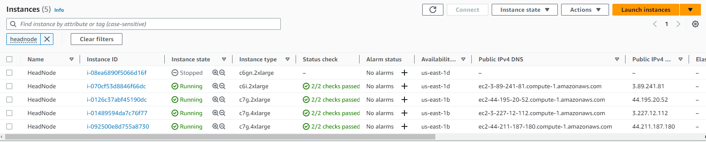
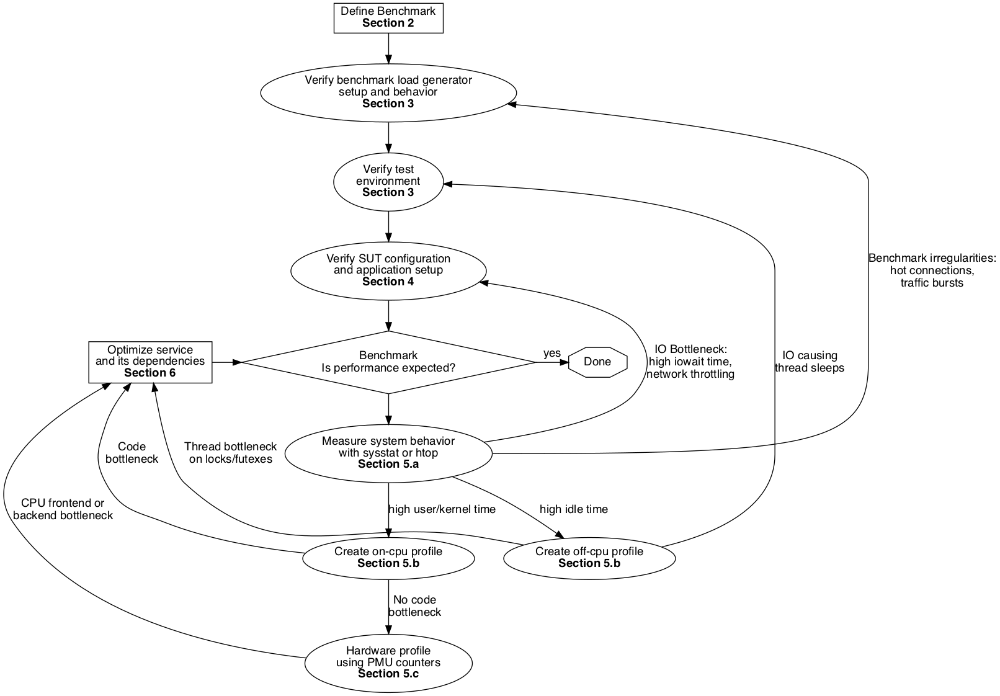
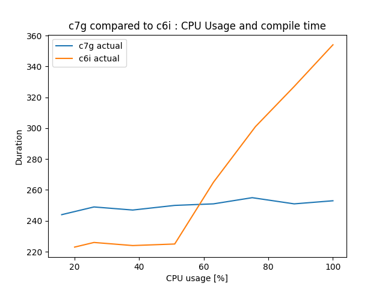
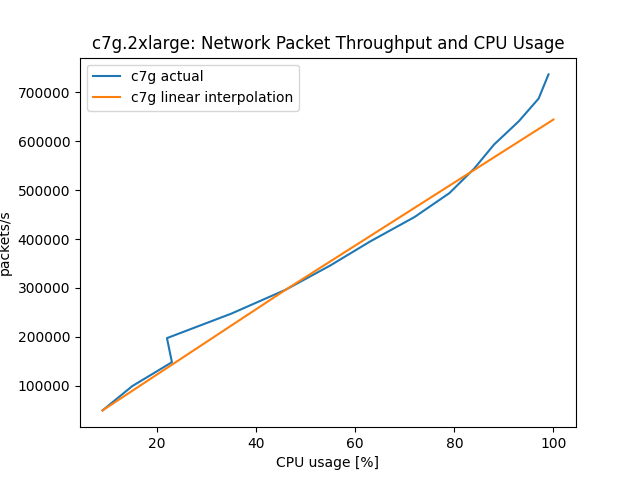
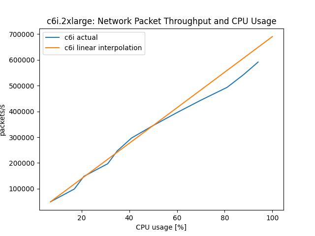
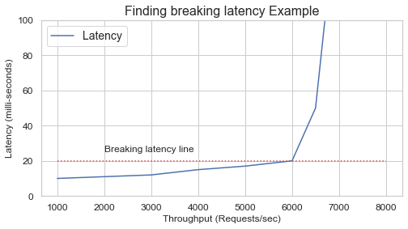
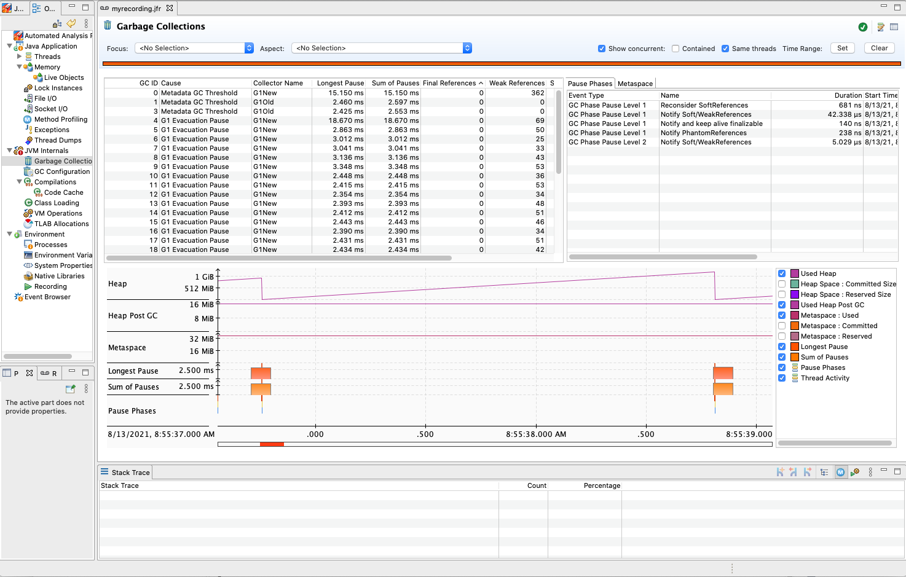
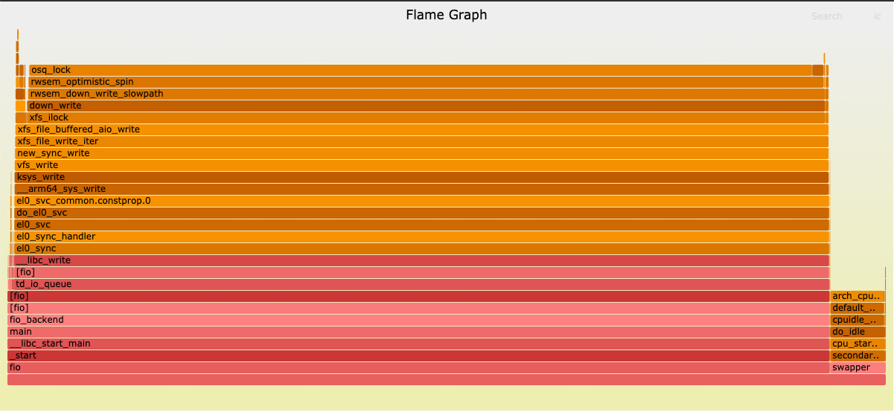

AWS Graviton Technical Guide
This repository provides technical guidance for users and developers using Amazon EC2 instances powered by AWS Graviton processors (including the latest generation Graviton4 processors). While it calls out specific features of the Graviton processors themselves, this repository is also generally useful for anyone running code on Arm-based systems.
Contents
- Transitioning to Graviton
- Building for Graviton
- Optimizing for Graviton
- Taking advantage of Arm Advanced SIMD instructions
- Recent software updates relevant to Graviton
- Language-specific considerations
- Containers on Graviton
- Headless website testing with Chrome and Puppeteer on Graviton
- Lambda on Graviton
- Operating Systems support
- Third-party Software Vendors
- Finding and managing AMIs for Graviton, with AWS SystemManager or CloudFormation
- DPDK, SPDK, and other datapath software
- PyTorch
- llama.cpp
- R
- TensorFlow
- Spark on Graviton
- Known issues and workarounds
- AWS Managed Services available on Graviton
- Graviton Performance Runbook
- Assembly Optimization Guide for Graviton Arm64 Processors
- Additional resources
- How To Resources
- Blog Posts
- Case Studies
Transitioning to Graviton
If you are new to Graviton and want to understand how to identify target workloads, how to plan a transition project, how to test your workloads on AWS Graviton and finally how deploy in production, please read the key considerations to take into account when transitioning workloads to AWS Graviton based Amazon EC2 instances.
Building for Graviton
| Processor | Graviton2 | Graviton3(E) | Graviton4 |
|---|---|---|---|
| Instances | M6g/M6gd, C6g/C6gd/C6gn, R6g/R6gd, T4g, X2gd, G5g, and I4g/Im4gn/Is4gen | C7g/C7gd/C7gn, M7g/M7gd, R7g/R7gd, and Hpc7g | C8g, M8g, R8g, X8g, and I8g |
| Core | Neoverse-N1 | Neoverse-V1 | Neoverse-V2 |
| Frequency | 2500MHz | 2600MHz | 2800MHz (2700MHz for 48xlarge) |
| Turbo supported | No | No | No |
| Software Optimization Guide (Instruction Throughput and Latency) | SWOG | SWOG | SWOG |
| Interconnect | CMN-600 | CMN-650 | CMN-700 |
| Architecture revision | ARMv8.2-a | ARMv8.4-a | Armv9.0-a |
| 32bit Backward Compatibility | Userspace only | Userspace only | No support |
| Additional features | fp16, rcpc, dotprod, crypto | sve, rng, bf16, int8 | sve2, sve-int8, sve-bf16, sve-bitperm, sve-crypto |
Recommended -mcpu flag (more information) | neoverse-n1 | neoverse-512tvb | neoverse-512tvb |
| RNG Instructions | No | Yes | Yes |
| SIMD instructions | 2x Neon 128bit vectors | 4x Neon 128bit vectors / 2x SVE 256bit | 4x Neon/SVE 128bit vectors |
| LSE (atomic mem operations) | yes | yes | yes |
| Pointer Authentication | no | yes | yes |
| Branch Target Identification | no | no | yes |
| Cores | 64 | 64 | 96 per socket (192 for 2-socket 48xlarge) |
| L1 cache (per core) | 64kB inst / 64kB data | 64kB inst / 64kB data | 64kB inst / 64kB data |
| L2 cache (per core) | 1MB | 1MB | 2MB |
| LLC (shared) | 32MB | 32MB | 36MB |
| Memory (NUMA) nodes | 1 | 1 | 1 (2 for 48xlarge) |
| DRAM | 8x DDR4 | 8x DDR5 | 12x DDR5 (24x for 48xlarge) |
| DDR Encryption | yes | yes | yes |
Optimizing for Graviton
Please refer to optimizing for general debugging and profiling information. For detailed checklists on optimizing and debugging performance on Graviton, see our performance runbook.
Different architectures and systems have differing capabilities, which means some tools you might be familiar with on one architecture don't have equivalent on AWS Graviton. Documented Monitoring Tools with some of these utilities.
Furthermore, different generations of Graviton support different features, as noted in the table above. For example, Graviton3 supports SVE but Graviton2 does not. Graviton4 supports SVE2 and SVE. For some applications it may be advantageous to implement performance critical kernels to make use of the highest performing feature set available which may not be known until runtime. For this, the best practice is to consult HWCAPS. For details on how to do this, see our guide on HWCAPS runtime feature detection.
Recent software updates relevant to Graviton
There is a huge amount of activity in the Arm software ecosystem and improvements are being made on a daily basis. As a general rule later versions of compilers, language runtimes, and applications should be used whenever possible. The table below includes known recent changes to popular packages that improve performance (if you know of others please let us know).
| Package | Version | Improvements |
|---|---|---|
| bazel | 3.4.1+ | Pre-built bazel binary for Graviton/Arm64. See below for installation. |
| Cassandra | 4.0+ | Supports running on Java/Corretto 11, improving overall performance |
| FFmpeg | 6.0+ | Improved performance of libswscale by 50% with better NEON vectorization which improves the performance and scalability of FFmpeg multi-threaded encoders. The changes are available in FFmpeg version 4.3, with further improvements to scaling and motion estimation available in 5.1. Additional improvements to both are available in 6. For encoding h.265, build with the master branch of x265 because the released version of 3.5 does not include important optimizations for Graviton. For more information about FFmpeg on Graviton, read the blog post on AWS Open Source Blog, Optimized Video Encoding with FFmpeg on AWS Graviton Processors. |
| HAProxy | 2.4+ | A serious bug was fixed. Additionally, building with CPU=armv81 improves HAProxy performance by 4x so please rebuild your code with this flag. |
| MariaDB | 10.4.14+ | Default build now uses -moutline-atomics, general correctness bugs for Graviton fixed. |
| mongodb | 4.2.15+ / 4.4.7+ / 5.0.0+ | Improved performance on graviton, especially for internal JS engine. LSE support added in SERVER-56347. |
| MySQL | 8.0.23+ | Improved spinlock behavior, compiled with -moutline-atomics if compiler supports it. |
| PostgreSQL | 15+ | General scalability improvements plus additional improvements to spin-locks specifically for Arm64 |
| .NET | 5+ | .NET 5 significantly improved performance for ARM64. Here's an associated AWS Blog with some performance results. |
| OpenH264 | 2.1.1+ | Pre-built Cisco OpenH264 binary for Graviton/Arm64. |
| PCRE2 | 10.34+ | Added NEON vectorization to PCRE's JIT to match first and pairs of characters. This may improve performance of matching by up to 8x. This fixed version of the library now is shipping with Ubuntu 20.04 and PHP 8. |
| PHP | 7.4+ | PHP 7.4 includes a number of performance improvements that increase perf by up to 30% |
| pip | 19.3+ | Enable installation of python wheel binaries on Graviton |
| PyTorch | 2.0+ | Optimize Inference latency and throughput on Graviton. AWS DLCs and python wheels are available. |
| ruby | 3.0+ | Enable arm64 optimizations that improve performance by as much as 40%. These changes have also been back-ported to the Ruby shipping with AmazonLinux2, Fedora, and Ubuntu 20.04. |
| Spark | 3.0+ | Supports running on Java/Corretto 11, improving overall performance. |
| zlib | 1.2.8+ | For the best performance on Graviton please use zlib-cloudflare. |
Containers on Graviton
You can run Docker, Kubernetes, Amazon ECS, and Amazon EKS on Graviton. Amazon ECR supports multi-arch containers. Please refer to containers for information about running container-based workloads on Graviton.
Lambda on Graviton
AWS Lambda now allows you to configure new and existing functions to run on Arm-based AWS Graviton2 processors in addition to x86-based functions. Using this processor architecture option allows you to get up to 34% better price performance. Duration charges are 20 percent lower than the current pricing for x86 with millisecond granularity. This also applies to duration charges when using Provisioned Concurrency. Compute Savings Plans supports Lambda functions powered by Graviton2.
The Lambda page highlights some of the migration considerations and also provides some simple to deploy demos you can use to explore how to build and migrate to Lambda functions using Arm/Graviton2.
Operating Systems
Please check os.md for more information about which operating system to run on Graviton based instances.
Known issues and workarounds
Postgres
Postgres performance can be heavily impacted by not using LSE.
Today, postgres binaries from distributions (e.g. Ubuntu) are not built with -moutline-atomics or -march=armv8.2-a which would enable LSE. Note: Amazon RDS for PostgreSQL isn't impacted by this.
In November 2021 PostgreSQL started to distribute Ubuntu 20.04 packages optimized with -moutline-atomics.
For Ubuntu 20.04, we recommend using the PostgreSQL PPA instead of the packages distributed by Ubuntu Focal.
Please follow the instructions to set up the PostgreSQL PPA.
Python installation on some Linux distros
The default installation of pip on some Linux distributions is old (<19.3) to install binary wheel packages released for Graviton. To work around this, it is recommended to upgrade your pip installation using:
sudo python3 -m pip install --upgrade pip
Bazel on Linux
The Bazel build tool now releases a pre-built binary for arm64. As of October 2020, this is not available in their custom Debian repo, and Bazel does not officially provide an RPM. Instead, we recommend using the Bazelisk installer, which will replace your bazel command and keep bazel up to date.
Below is an example using the latest Arm binary release of Bazelisk as of October 2020:
wget https://github.com/bazelbuild/bazelisk/releases/download/v1.7.1/bazelisk-linux-arm64
chmod +x bazelisk-linux-arm64
sudo mv bazelisk-linux-arm64 /usr/local/bin/bazel
bazel
Bazelisk itself should not require further updates, as its only purpose is to keep Bazel updated.
zlib on Linux
Linux distributions, in general, use the original zlib without any optimizations. zlib-cloudflare has been updated to provide better and faster compression on Arm and x86. To use zlib-cloudflare:
git clone https://github.com/cloudflare/zlib.git
cd zlib
./configure --prefix=$HOME
make
make install
Make sure to have the full path to your lib at $HOME/lib in /etc/ld.so.conf and run ldconfig.
For JDKs that dynamically link to the system zlib, you can set LD_LIBRARY_PATH to point to the directory where your newly built version of zlib-cloudflare is located or load that library with LD_PRELOAD.
You can check the libz that JDK is dynamically linked against with:
$ ldd /Java/jdk-11.0.8/lib/libzip.so | grep libz
libz.so.1 => /lib/x86_64-linux-gnu/libz.so.1 (0x00007ffff7783000)
NOTE: Linux versions of OpenJDK and Amazon Corretto 17+ dynamically link to zlib. Earlier versions of Corretto bundled zlib directly and this behavior can vary by JDK vendor and platform.
Blog Posts
HPC
- Application deep-dive into the AWS Graviton3E-based Amazon EC2 Hpc7g instance
- Rescale Automates the Deployment of Ansys LS-DYNA and Ansys Fluent Workloads on Amazon EC2 Hpc7g Instances
- Lattice Boltzmann simulation with Palabos on AWS using Graviton-based Amazon EC2 Hpc7g instances
- Instance sizes in the Amazon EC2 Hpc7 family – a different experience
- Checkpointing HPC applications using the Spot Instance two-minute notification from Amazon EC2
- Best practices for running molecular dynamics simulations on AWS Graviton3E
Machine Learning
- Optimized PyTorch 2.0 inference with AWS Graviton processors
- Reduce Amazon SageMaker inference cost with AWS Graviton
- PyTorch blog: Optimized PyTorch 2.0 Inference with AWS Graviton processors
- PyTorch Inference Performance Tuning on AWS Graviton Processors
- PyTorch blog: Accelerated PyTorch inference with torch.compile on AWS Graviton processors
- Sprinklr improves performance by 20% and reduces cost by 25% for machine learning inference on AWS Graviton3
- Run machine learning inference workloads on AWS Graviton-based instances with Amazon SageMaker
- Accelerate NLP inference with ONNX Runtime on AWS Graviton processors
- Best-in-class LLM Performance on Arm Neoverse V1 based AWS Graviton3 CPUs
- Accelerating Popular Hugging Face Models using Arm Neoverse
- Run LLMs on CPU with Amazon SageMaker Real-time Inference
- Accelerating large-scale neural network training on CPUs with ThirdAI and AWS Graviton
- Enhancing LLM Serving with Torch Compiled RAG on AWS Graviton
- Intro to Llama on Graviton
- Small Language Models (SLMs) inference with llama.cpp on Graviton4
- Run DeepSeek R1 LLM Inference on AWS Graviton
- DeepSeek-R1 Distill Model on CPU with AWS Graviton4 for batch inference
Other
- Optimized Video Encoding with FFmpeg on AWS Graviton Processors
- Video Encoding on Graviton in 2025
- Using Amazon APerf to go from 50% below to 36% above performance target
Case Studies
HPC
- Encored Technologies Successfully Built an HPC on AWS for Weather Research & Forecasting (WRF)
- Arm Scales Performance for Chip Design Using Amazon FSx for NetApp ONTAP
- The Institut Pasteur and AWS are analysing the world's DNA, using a public database
Other
Additional resources
- AWS Graviton
- Neoverse N1 Software Optimization Guide
- Armv8 reference manual
- Package repository search tool
Feedback? ec2-arm-dev-feedback@amazon.com
Considerations when transitioning workloads to AWS Graviton based Amazon EC2 instances
AWS Graviton processors power Amazon EC2 general purpose (M8g, M7g, M7gd, M6g, M6gd, T4g), compute optimized (C8g, C7g, C7gd, C7gn, C6g, C6gd, C6gn), memory optimized (X8g, R8g, R7g, R7gd, R6g, R6gd) instances, storage optimized (I8g, I4g, Im4gn, Is4gen), HPC optimized (Hpc7g), and GPU-powered (G5g) instances that provide the best price-performance for a wide variety of Linux-based workloads. Examples include application servers, micro-services, high-performance computing, CPU-based machine learning inference, video encoding, electronic design automation, gaming, open-source databases, and in-memory caches. In most cases transitioning to AWS Graviton is as simple as updating your infrastructure-as-code to select the new instance type and associated Operating System (OS) Amazon Machine Image (AMI). However, because AWS Graviton processors implement the arm64 instruction set, there can be additional software implications. This transition guide provides a step-by-step approach to assess your workload to identify and address any potential software changes that might be needed.
Introduction - identifying target workloads
The quickest and easiest workloads to transition are Linux-based, and built using open-source components or in-house applications where you control the source code. Many open source projects already support Arm64 and by extension Graviton, and having access to the source code allows you to build from source if pre-built artifacts do not already exist. There is also a large and growing set of Independent Software Vendor (ISV) software available for Graviton (a non-exhaustive list can be found here. However if you license software you’ll want to check with the respective ISV to ensure they already, or have plans to, support the Arm64 instruction set.
Another set of opportunities, not covered in this guide, are all the managed services offered by AWS which leverage AWS Graviton processors. Those services, listed on AWS Graviton-based Manage Services page, tend to be straightforward to adopt and require a process similar to moving to a new version of underlying instance of the same architecture, or in some cases do not require any modification.
In this guide, we will focus on applications you operate on Amazon EC2 instances, either directly or in the context of orchestration engine operating on top of Amazon EC2 instances, such as Amazon ECS or Amazon EKS.
The following transition guide is organized into a logical sequence of steps as follows:
- Learning and exploring
- Step 1 - [Optional] Understand the Graviton Processor and review key documentation
- Step 2 - Explore your workload, and inventory your current software stack
- Plan your workload transition
- Step 3 - Install and configure your application environment
- Step 4 - [Optional] Build your application(s) and/or container images
- Test and optimize your workload
- Step 5 - Testing and optimizing your workload
- Step 6 - Performance testing
- Infrastructure and deployment
- Step 7 - Update your infrastructure as code
- Step 8 - Perform canary or Blue-Green deployment
Learning and exploring
Step 1 - [Optional] Understand the Graviton Processor and review key documentation
- [Optional] Start by watching re:Invent 2024 - AWS Graviton: The best price performance for your AWS workloads, re:Invent 2024 - Dive deep into the AWS Nitro System and re:Invent 2021 - Deep dive into AWS Graviton3 and Amazon EC2 C7g instances, which will give you an overview of the Graviton-based instances and some insights on how to run applications depending on their operating system, languages and runtimes.
- [Optional] Keep on learning by watching AWS Summit SF 2022 - The journey of silicon innovation at AWS to better understand Amazon long-term commitment to innovate with custom silicon.
- Get familiar with the rest of this Getting started with AWS Graviton repository which will act as a useful reference throughout your workload transition.
Step 2 - Explore your workload, and inventory your current software stack
Before starting the transition, you will need to inventory your current software stack so you can identify the path to equivalent software versions that support Graviton. At this stage it can be useful to think in terms of software you download (e.g. open source packages, container images, libraries), software you build and software you procure/license (e.g. monitoring or security agents). Areas to review:
- Operating system, pay attention to specific versions that support Graviton (usually more recent are better)
- If your workload is container based, check container images you consume for Arm64 support. Keep in mind many container images now support multiple architectures which simplifies consumption of those images in a mixed-architecture environment. See the ECR multi-arch support announcement for more details on multi-arch images.
- All the libraries, frameworks and runtimes used by the application.
- Tools used to build, deploy and test your application (e.g. compilers, test suites, CI/CD pipelines, provisioning tools and scripts). Note there are language specific sections in the getting started guide with useful pointers to getting the best performance from Graviton processors.
- Tools and/or agents used to deploy and manage the application in production (e.g. monitoring tools or security agents)
- Amazon Transform helps quickly and easily migrate software environments that provide a path to Graviton adoption - for example:
- This guide contains language specifics sections where you'll find additional per-language guidance:
As a rule the more current your software environment the more likely you will obtain the full performance entitlement from Graviton.
For each component of your software stack, check for arm64/Graviton support. A large portion of this can be done using existing configuration scripts, as your scripts run and install packages you will get messages for any missing components, some may build from source automatically while others will cause the script to fail. Pay attention to software versions as in general the more current your software is the easier the transition, and the more likely you’ll achieve the full performance entitlement from Graviton processors. If you do need to perform upgrades prior to adopting Graviton then it is best to do that using an existing x86 environment to minimize the number of changed variables. We have seen examples where upgrading OS version on x86 was far more involved and time consuming than transitioning to Graviton after the upgrade. For more details on checking for software support please see Appendix A.
Note: When locating software be aware that some tools, including GCC, refer to the architecture as AArch64, others including the Linux Kernel, call it arm64. When checking packages across various repositories, you’ll find those different naming conventions.
Plan your workload transition
Step 3- Install and configure your application environment
To transition and test your application, you will need a suitable Graviton environment. Depending on your execution environment, you may need to:
- Obtain or create an arm64 AMI to boot your Graviton instance(s) from. Depending on how you manage your AMIs, you can either start directly from an existing reference AMI for Arm64, or you can build a Golden AMI with your specific dependencies from one of the reference images (see here for a full list of supported operating systems with AMI links) ;
- If you operate a container based environment, you’ll need to build or extend an existing cluster with support for Graviton based instances. Both Amazon ECS and EKS support adding Graviton-based instances to an existing x86-based cluster. For ECS, you can add Graviton-based instances to your ECS cluster, launching them with either the AWS ECS-optimized AMI for arm64 or your own AMI after you’ve installed the ECS agent. For EKS, you will need to create a node-group with Graviton-based instances launched with the EKS optimized AMI for arm64.
- Note: you can support Graviton and x86 instances in the same Auto Scaling Group, this blog details the process using the launch template override feature.
- Complete the installation of your software stack based on the inventory created in step 2.
- Note: In many cases your installation scripts can be used as-is or with minor modifications to reference architecture specific versions of components where necessary. The first time through this may be an iterative process as you resolve any remaining dependencies.
Step 4 - [Optional] Build your application(s) and/or container images
Note: If you are not building your application or component parts of your overall application stack you may skip this step.
For applications built using interpreted or JIT’d languages, including Java, PHP or Node.js, they should run as-is or with only minor modifications. The repository contains language specific sections with recommendations, for example Java, Python, C/C++, Golang, PHP, R, Node.js, Rust or .Net. Note: if there is no language specific section, it is because there is no specific guidance beyond using a suitably current version of the language as documented here. .NET-core is a great way to benefit from Graviton-based instances, this blog post covers .NET 8 performance.
Applications using compiled languages including C, C++ or Go, need to be compiled for the Arm64 architecture. Most modern builds (e.g. using Make) will just work when run natively on Graviton-based instances, however, you’ll find language specific compiler recommendations in this repository: C/C++, Go, and Rust.
Just like an operating system, container images are architecture specific. You will need to build arm64 container image(s), to make the transition easier we recommend building multi-arch container image(s) that can run automatically on either x86-64 or arm64. Check out the container section of this repository for more details and this blog post provides a detailed overview of multi-architecture container image support, which is considered a best practice for establishing and maintaining a multi-architecture environment.
You will also need to review any functional and unit test suite(s) to ensure you can test the new build artifacts with the same test coverage you have already for x86 artifacts.
Test and optimize your workload
Step 5 - Testing and optimizing your workload
Now that you have your application stack on Graviton, you should run your test suite to ensure all regular unit and functional tests pass. Resolve any test failures in the application(s) or test suites until you are satisfied everything is working as expected. Most errors should be related to the modifications and updated software versions you have installed during the transition (tip: when upgrading software versions first test them using an existing x86 environment to minimize the number of variables changed at a time. If issues occur then resolve them using the current x86 environment before continuing with the new Graviton environment). If you suspect architecture specific issue(s) please have a look to our C/C++ section which documents them and give advice on how to solve them. If there are still details that seem unclear, please reach out to your AWS account team, or to the AWS support for assistance.
Step 6 - Performance testing
With your fully functional application, it is time to establish a performance baseline on Graviton. In many cases, Graviton will provide performance and/or capacity improvements over x86-based instances.
One of the major differences between AWS Graviton instances and other Amazon EC2 instances is their vCPU-to-physical-core mappings. Every vCPU on a Graviton processor maps to a physical core, and there is no Simultaneous Multi-Threading (SMT). Consequently, Graviton provides better linear performance scalability in most cases. When comparing to existing x86 instances, we recommend fully loading both instance types to determine the maximum sustainable load before the latency or error rate exceeds acceptable bounds. For horizontally-scalable, multi-threaded workloads that are CPU bound, you may find that the Graviton instances are able to sustain a significantly higher transaction rate before unacceptable latencies or error rates occur.
During the transition to Graviton, if you are using Amazon EC2 Auto Scaling, you may be able to increase the threshold values for the CloudWatch alarms that invoke the scaling process. This may reduce the number of EC2 instances now needed to serve a given level of demand.
Important: This repository has sections dedicated to Optimization and a Performance Runbook for you to follow during this stage.
If after reading the documentation in this repository and following the recommendations you do not observe expected performance then please reach out to your AWS account team, or send email to ec2-arm-dev-feedback@amazon.com with details so we can assist you with your performance observations.
Infrastructure and deployment
Step 7 - Update your infrastructure as code
Now you have a tested and performant application, its time to update your infrastructure as code to add support for Graviton-based instances. This typically includes updating instance types, AMI IDs, ASG constructs to support multi-architecture (see Amazon EC2 ASG support for multiple Launch Templates), and finally deploying or redeploying your infrastructure.
Step 8 - Perform canary or Blue-Green deployment
Once your infrastructure is ready to support Graviton-based instances, you can start a Canary or Blue-Green deployment to re-direct a portion of application traffic to the Graviton-based instances. Ideally initial tests will run in a development environment to load test with production traffic patterns. Monitor the application closely to ensure expected behavior. Once your application is running as expected on Graviton you can define and execute your transition strategy and begin to enjoy the benefits of increased price-performance.
Appendix A - locating packages for Arm64/Graviton
Remember: When locating software be aware that some tools, including GCC, refer to the architecture as AArch64, others including the Linux Kernel, call it arm64. When checking packages across various repositories, you’ll find those different naming conventions, and in some cases just “ARM”.
The main ways to check and places to look for will be:
- Package repositories of your chosen Linux distribution(s). Arm64 support within Linux distributions is largely complete: for example, Debian, which has the largest package repository, has over 98% of its packages built for the arm64 architecture.
- Container image registry. Amazon ECR now offers public repositories that you can search for arm64 images. DockerHub allows you to search for a specific architecture (e.g. arm64).
- Note: Specific to containers you may find an amd64 (x86-64) container image you currently use transitioned to a multi-architecture container image when adding Arm64 support. This means you may not find an explicit arm64 container, so be sure to check for both as projects may chose to vend discrete images for x86-64 and arm64 while other projects chose to vend a multi-arch image supporting both architectures.
- On GitHub, you can check for arm64 versions in the release section. However, some projects don’t use the release section, or only release source archives, so you may need to visit the main project webpage and check the download section. You can also search the GitHub project for “arm64” or “AArch64” to see whether the project has any arm64 code contributions or issues. Even if a project does not currently produce builds for arm64, in many cases an Arm64 version of those packages will be available through Linux distributions or additional package repositories. You can search for packages using a package search tool such as pkgs.org.
- The download section or platform support matrix of your software vendors, look for references to arm64, AArch64 or Graviton.
Categories of software with potential issues:
- Packages or applications sourced from an ISV may not yet be available for Graviton. AWS is working with lots of software partners to offer technical guidance as they add support for Graviton, but some are still missing or in the process of adding support. A non-exhaustive list of some ISV software can be found in here.
- The Python community vend lots of modules built using low level languages (e.g. C/C++) that need to be compiled for the Arm64 architecture. You may use modules that are not currently available as pre-built binaries from the Python Package Index. AWS is actively working with open-source communities to ensure the most popular modules are available. In the meantime we provide specific instructions to resolve the build-time dependencies for missing packages in the Python section of the Graviton Getting Started Guide.
If you find other software lacking support for Arm64, please let your AWS team know, or send email to ec2-arm-dev-feedback@amazon.com.
Optimizing for Graviton
Debugging Problems
It's possible that incorrect code will work fine on an existing system, but produce an incorrect result when using a new compiler. This could be because it relies on undefined behavior in the language (e.g. assuming char is signed in C/C++, or the behavior of signed integer overflow), contains memory management bugs that happen to be exposed by aggressive compiler optimizations, or incorrect ordering. Below are some techniques / tools we have used to find issues while migrating our internal services to newer compilers and Graviton based instances.
Using Sanitizers
The compiler may generate code and layout data slightly differently on Graviton compared to an x86 system and this could expose latent memory bugs that were previously hidden. On GCC, the easiest way to look for these bugs is to compile with the memory sanitizers by adding the below to standard compiler flags:
CFLAGS += -fsanitize=address -fsanitize=undefined
LDFLAGS += -fsanitize=address -fsanitize=undefined
Then run the resulting binary, any bugs detected by the sanitizers will cause the program to exit immediately and print helpful stack traces and other information.
Ordering issues
Arm is weakly ordered, similar to POWER and other modern architectures. While x86 is a variant of total-store-ordering (TSO). Code that relies on TSO may lack barriers to properly order memory references. Armv8 based systems, including all Gravitons are weakly ordered multi-copy-atomic.
While TSO allows reads to occur out-of-order with writes and a processor to observe its own write before it is visible to others, the Armv8 memory model has further relaxations for performance and power efficiency. Code relying on pthread mutexes or locking abstractions found in C++, Java or other languages shouldn't notice any difference. Code that has a bespoke implementation of lockless data structures or implements its own synchronization primitives will have to use the proper intrinsics and barriers to correctly order memory transactions. If you run into an issue with memory ordering please feel free to open an issue in this GitHub repo, and one of our AWS experts will contact you.
Architecture specific optimization
Sometimes code will have architecture specific optimizations. These can take many forms:
sometimes the code is optimized in assembly using specific instructions for
CRC,
other times the code could be enabling a feature
that has been shown to work well on particular architectures. A quick way to see if any optimizations
are missing for Arm is to grep the code for __x86_64__ ifdefs and see if there
is corresponding Arm code there too. If not, that might be something to improve.
We welcome suggestions by opening an issue in this repo.
Lock/Synchronization intensive workload
Graviton2 processors and later support the Arm Large Scale Extensions (LSE). LSE based locking and synchronization
is an order of magnitude faster for highly contended locks with high core counts (e.g. up to 192 cores on Graviton4).
For workloads that have highly contended locks, compiling with -march=armv8.2-a will enable LSE based atomics and can substantially increase performance. However, this will prevent the code
from running on an Arm v8.0 system such as AWS Graviton-based EC2 A1 instances.
With GCC 10 and newer an option -moutline-atomics will not inline atomics and
detect at run time the correct type of atomic to use. This is slightly worse
performing than -march=armv8.2-a but does retain backwards compatibility.
Network intensive workloads
In some workloads, the packet processing capability of Graviton is both faster and
lower-latency than other platforms, which reduces the natural “coalescing”
capability of Linux kernel and increases the interrupt rate.
Depending on the workload it might make sense to enable adaptive RX interrupts
(e.g. ethtool -C <interface> adaptive-rx on).
Profiling the code
If you aren't getting the performance you expect, one of the best ways to understand what is going on in the system is to compare profiles of execution and understand where the CPUs are spending time. This will frequently point to a hot function or sub-system that could be optimized. A crutch is comparing a profile between a system that is performing well and one that isn't to see the relative difference in execution time. Feel free to open an issue in this GitHub repo for advice or help.
Using AWS APerf tool:
# Graviton
wget -qO- https://github.com/aws/aperf/releases/download/v0.1.10-alpha/aperf-v0.1.10-alpha-aarch64.tar.gz | tar -xvz -C /target/directory
# x86
wget -qO- https://github.com/aws/aperf/releases/download/v0.1.10-alpha/aperf-v0.1.10-alpha-x86_64.tar.gz | tar -xvz -C /target/directory
## Record a profile and generate a report
cd /target/directory/
./aperf record -r <RUN_NAME> -i <INTERVAL_NUMBER> -p <COLLECTION_PERIOD>
./aperf report -r <COLLECTOR_DIRECTORY> -n <REPORT_NAME>
## The resulting report can be viewed with a web-browser by opening the index.html file
Using the Linux perf tool:
# Amazon Linux 2
sudo yum install perf
# Ubuntu
sudo apt-get install linux-tools-$(uname -r)
Record a profile:
# If the program is run interactively
$ sudo perf record -g -F99 -o perf.data ./your_program
# If the program is a service, sample all cpus (-a) and run for 60 seconds while the system is loaded
$ sudo perf record -ag -F99 -o perf.data sleep 60
Look at the profile:
$ perf report
Additionally, there is a tool that will generate a visual representation of the output which can sometimes be more useful:
git clone https://github.com/brendangregg/FlameGraph.git
perf script -i perf.data | FlameGraph/stackcollapse-perf.pl | FlameGraph/flamegraph.pl > flamegraph.svg
For example, in March 2020, we committed a patch to
ffmpeg to
improve performance. Comparing the execution time of a C5 vs an M6g
immediately uncovered an outlier function ff_hscale_8_to_15_neon. Once we
identified this as the outlier we could focus on improving this function.
C5.4XL M6g.4XL
19.89% dv_encode_video_segment 19.57% ff_hscale_8_to_15_neon
11.21% decode_significance_x86 18.02% get_cabac
8.68% get_cabac 15.08% dv_encode_video_segment
8.43% ff_h264_decode_mb_cabac 5.85% ff_jpeg_fdct_islow_8
8.05% ff_hscale8to15_X4_ssse3 5.01% ff_yuv2planeX_8_neon
C/C++ on Graviton
Enabling Arm Architecture Specific Features
TLDR: To target all current generation Graviton instances (Graviton2,
Graviton3, and Graviton4), use -march=armv8.2-a.
C and C++ code can be built for Graviton with a variety of flags, depending on
the goal. If the goal is to get the best performance for a specific generation,
select a flag from the table column "performance". If the goal is to get a good
compromise of feature availability and performance balanced across generations,
select the flag from the "balanced" column. If you want to target multiple
generations of Graviton, select the "balanced" flag for the oldest generation
planned for deployment, since code built for a newer generation may not run on
an older generation. On arm64 -mcpu= acts as both specifying the appropriate
architecture and tuning and it's generally better to use that vs -march if
you're building for a specific CPU.
| CPU | Flag (performance) | Flag (balanced) | GCC version | LLVM version |
|---|---|---|---|---|
| Graviton2 | -mcpu=neoverse-n1 ¹ | -march=armv8.2-a | GCC-9 | Clang/LLVM 10+ |
| Graviton3(E) | -mcpu=neoverse-v1 | -mcpu=neoverse-512tvb ² | GCC 11 | Clang/LLVM 14+ |
| Graviton4 | -mcpu=neoverse-v2 | -mcpu=neoverse-512tvb ² | GCC 13 | Clang/LLVM 16+ |
¹ Requires GCC-9 or later (or GCC-7 for Amazon Linux 2); otherwise we suggest
using -mcpu=cortex-a72
² If your compiler doesn't support neoverse-512tvb, please use the Graviton2
tuning.
For some applications, it may be necessary to support a broad range of Arm64
targets while still making use of more advanced features such as LSE (Large
System Extensions) or SVE (Scalable Vector Extension). For this case choose a
more conservative build flag, such as -march=armv8-a and make use of runtime
CPU support detection of features such as SVE. You can enable runtime detection
and use of LSE atomics instructions by adding the additional compiler flag,
-moutline-atomics.
Compilers
Newer compilers provide better support and optimizations for Graviton processors. We have seen 15% better performance on Graviton2 when using gcc-10 instead of Amazon Linux 2 system's compiler gcc-7. When possible please use the latest compiler version available on your system. The table shows GCC and LLVM compiler versions available in Linux distributions. Starred version marks the default system compiler.
| Distribution | GCC | Clang/LLVM |
|---|---|---|
| Amazon Linux 2023 | 11* | 15* |
| Amazon Linux 2 | 7*, 10 | 7, 11* |
| Ubuntu 24.04 | 9, 10, 11, 12, 13*, 14 | 14, 15, 16, 17, 18* |
| Ubuntu 22.04 | 9, 10, 11*, 12 | 11, 12, 13, 14* |
| Ubuntu 20.04 | 7, 8, 9*, 10 | 6, 7, 8, 9, 10, 11, 12 |
| Ubuntu 18.04 | 4.8, 5, 6, 7*, 8 | 3.9, 4, 5, 6, 7, 8, 9, 10 |
| Debian10 | 7, 8* | 6, 7, 8 |
| Red Hat EL8 | 8*, 9, 10 | 10 |
| SUSE Linux ES15 | 7*, 9, 10 | 7 |
Large-System Extensions (LSE)
All Graviton processors after Graviton1 have support for the Large-System Extensions (LSE) which was first introduced in vArmv8.1. LSE provides low-cost atomic operations which can improve system throughput for CPU-to-CPU communication, locks, and mutexes. The improvement can be up to an order of magnitude when using LSE instead of load/store exclusives.
POSIX threads library needs LSE atomic instructions. LSE is important for locking and thread synchronization routines. The following systems distribute a libc compiled with LSE instructions:
- Amazon Linux 2
- Amazon Linux 2023
- Ubuntu 18.04 (needs
apt install libc6-lse) - Ubuntu 20.04
- Ubuntu 22.04
- Ubuntu 24.04
The compiler needs to generate LSE instructions for applications that use atomic
operations. For example, the code of databases like PostgreSQL contain atomic
constructs; c++11 code with std::atomic statements translate into atomic
operations. GCC's -march=armv8.2-a flag enables all instructions supported by
Graviton2, including LSE. To confirm that LSE instructions are created,
the output of objdump command line utility should contain LSE instructions:
$ objdump -d app | grep -i 'cas\|casp\|swp\|ldadd\|stadd\|ldclr\|stclr\|ldeor\|steor\|ldset\|stset\|ldsmax\|stsmax\|ldsmin\|stsmin\|ldumax\|stumax\|ldumin\|stumin' | wc -l
To check whether the application binary contains load and store exclusives:
$ objdump -d app | grep -i 'ldxr\|ldaxr\|stxr\|stlxr' | wc -l
Porting codes with SSE/AVX intrinsics to NEON
When programs contain code with x64 intrinsics, the following procedure can help to quickly obtain a working program on Arm, assess the performance of the program running on Graviton processors, profile hot paths, and improve the quality of code on the hot paths.
To quickly get a prototype running on Arm, one can use
https://github.com/DLTcollab/sse2neon a translator of x64 intrinsics to NEON.
sse2neon provides a quick starting point in porting performance critical codes
to Arm. It shortens the time needed to get an Arm working program that then
can be used to extract profiles and to identify hot paths in the code. A header
file sse2neon.h contains several of the functions provided by standard x64
include files like xmmintrin.h, only implemented with NEON instructions to
produce the exact semantics of the x64 intrinsic. Once a profile is
established, the hot paths can be rewritten directly with NEON intrinsics to
avoid the overhead of the generic sse2neon translation.
Signed vs. Unsigned char
The C standard doesn't specify the signedness of char. On x86 char is signed by
default while on Arm it is unsigned by default. This can be addressed by using
standard int types that explicitly specify the signedness (e.g. uint8_t and int8_t)
or compile with -fsigned-char.
When using the getchar function, instead of the commonly used but incorrect:
char c;
while((c = getchar()) != EOF) {
// Do something with the character c
}
// Assume we have reached the end of file here
you should use an int type and the standard function feof and ferror to
check for the end of file, as follows:
int c;
while ((c = getchar()) != EOF) {
// Do something with the character c
}
// Once we get EOF, we should check if it is actually an EOF or an error
if (feof(stdin)) {
// End of file has been reached
} else if (ferror(stdin)) {
// Handle the error (check errno, etc)
}
Using Arm instructions to speed-up Machine Learning
Graviton2 and later processors been optimized for performance and power efficient machine learning by enabling Arm dot-product instructions commonly used for Machine Learning (quantized) inference workloads, and enabling Half precision floating point - _float16 to double the number of operations per second, reducing the memory footprint compared to single precision floating point (_float32), while still enjoying large dynamic range.
Using SVE
The scalable vector extensions (SVE) require both a new enough tool-chain to auto-vectorize to SVE (GCC 11+, LLVM 14+) and a 4.15+ kernel that supports SVE. One notable exception is that Amazon Linux 2 with a 4.14 kernel doesn't support SVE; please upgrade to a 5.4+ AL2 kernel. Graviton3 and Graviton4 support SVE, earlier Gravitons does not.
Using Arm instructions to speed-up common code sequences
The Arm instruction set includes instructions that can be used to speedup common code sequences. The table below lists common operations and links to code sequences:
| Operation | Description |
|---|---|
| crc | Graviton processors support instructions to accelerate both CRC32 which is used by Ethernet, media and compression and CRC32C (Castagnoli) which is used by filesystems. |
Go on Graviton
Go is a statically typed, compiled programming language originally designed at Google. Go supports arm64 out of the box, and available in all common distributions, with recent changes that improve performance, so make sure to use the latest version of the Go compiler and toolchain.
Noteworthy performance upgrades
Go 1.18 [released 2022/03/14]
The main implementation of the Go compiler, golang/go, has improved performance on Arm by implementing a new way of passing function arguments and results using registers instead of the stack. This change has been available on x86-64 since 1.17, where it brought performance improvements of about 5%. On Arm this change typically gives even higher performance improvements of 10% or more.
To learn more about the use cases benefiting from Go 1.18's performance improvements, check the blog post: Making your Go workloads up to 20% faster with Go 1.18 and AWS Graviton.
Go 1.17 [released 2021/08/16]
The main implementation of the Go compiler, golang/go, has improved performance for the following standard library packages:
- crypto/ed25519 - the package has been rewritten, and all operations are now approximately twice as fast on both arm64 and amd64.
- crypto/elliptic - CurveParams methods now automatically invoke faster and safer dedicated implementations for known curves (P-224, P-256, and P-521) when available. The P521 curve implementation has also been rewritten and is now constant-time and three times faster on amd64 and arm64.
Go 1.16 [released 2021/02/16]
The main implementation of the Go compiler, golang/go, has improved performance on Arm with couple of changes listed below. Building your project with Go 1.16 will give you these improvements:
- ARMv8.1-A Atomics instructions, which dramatically improve mutex fairness and speed on Graviton 2, and modern Arm core with v8.1 and newer instruction set.
- copy performance improvements, especially when the addresses are unaligned.
Recently updated packages
Changes to commonly used packages that improve performance on Arm can make a noticeable difference in some cases. Here is a partial list of packages to be aware of.
| Package | Version | Improvements |
|---|---|---|
| Snappy | as of commit 196ae77 | assembly implementations of the hot path functions were ported from amd64 to arm64 |
Using Go in a Container with CPU Limits
Go automatically assigns a sensible value to GOMAXPROCS based on the number of
CPU cores available. However, using a container with a limitation on how much
CPU is available to that container can lead to problems. For example, using the
CFS scheduler
option in Docker, --cpus=1 can limit the available CPU time to the
equivalent of 1 CPU while still exposing all of the actually available CPUs to
the container. If you use CPU limits in this way, it may make sense to also
manually set GOMAXPROCS to an equivalent value.
Java on Graviton
Java is a general-purpose programming language. Compiled Java code can run on all platforms that support Java, without the need for recompilation. Java applications are typically compiled to bytecode that can run on any Java virtual machine (JVM) regardless of the underlying computer architecture. Note: there are multiple programming languages such as Kotlin, Scala, and Groovy that compile to byte code and run on top of the JVM, so those also tend to be highly portable across architectures. Wikipedia
Java is well supported and generally performant out-of-the-box on arm64. Amazon Corretto, a no-cost, multiplatform, production-ready distribution of the Open Java Development Kit (OpenJDK) supports Graviton-powered instances. While Java 8 is fully supported on Arm processors, some customers haven't been able to obtain Graviton's full performance benefit until they switched to Java 11.
This page includes specific details about building and tuning Java application on Graviton.
Java Graviton Migration Checklist
This checklist summarizes portions of the Java on Graviton section and can be helpful for getting started. It is not a comprehensive summary, so we also recommend reading through all the content below.
-
Check AMI & Kernel Version support
- Pre-2020 Linux distributions are unlikely to contain the right optimizations.
- Amazon Linux: AL2023 is ideal. AL2 is fine with a recent kernel (i.e. not 4.14). AL2 is EOL in June 2025.
- Ubuntu: Use at least Ubuntu 20.04. More recent versions are even better.
- Red Hat Linux: RHEL9 is ideal. Use at least RHEL8.2 (be aware kernel uses unusual 64KB memory pages).
- For the full list, see Operating Systems available for Graviton based instances.
-
Check JVM Version & Flavor
- Java: The more recent the better. AWS recommends at least JDK11, but ideally JDK17 or newer. JDK8 is the minimum version supporting Arm64 but likely won’t provide the best performance.
- Amazon Corretto (Amazon’s distribution of OpenJDK): Typically provides the best performance and is recommended for Graviton workloads. Corretto 11 and above support LSE extensions, a set of atomic memory operations that improve performance for lock-contended workloads and reduce garbage collection time. Some customers have seen even better performance on Corretto 17 and Corretto 21.
-
Check JARs and shared objects for architecture specific code (compiled other than Java byte code)
- See guidance for manual scanning process.
- Porting Advisor for Graviton can scan/flag them and is useful for Maven-based projects.
- JNI extensions usually exist to implement performance critical functions in a language other than Java. Without an Arm64 version the code may not work or can fall back on a slower pure Java implementation. Check for Arm64 versions or later versions of the package to see if the JNI has been superseded by more performant native Java implementations.
- Follow these instructions for building multi-arch JAR’s that support both x86 and Arm64/Graviton.
-
Java Crypto operations:
- Review Java JVM options for Crypto optimizations and recommendations.
- AES/GCM benefits when using AES hardware instructions, which can improve performance by up to 5x for this algorithm. Corretto & OpenJDK 18 support this by default and have been back-ported to Corretto & OpenJDK 11 and 17 which can be enabled using
XX:+UnlockDiagnosticVMOptions -XX:+UseAESCTRIntrinsics. - Amazon-corretto-crypto-provider is another option that offers optimizations for a large number of cryptographic operations.
-
Application Testing & Performance Evaluation
- Be sure to run Graviton instances “hotter”: vCPUs are mapped to physical cores instead of Hyperthreads and performance often flatlines at a much higher CPU utilization than with x86 based instances. Testing at low levels of load can lead to misleading results. The most realistic test results are usually achieved when testing close to breaking latency.
- See the Graviton Performance Runbook for more info.
- Aperf is a CLI tool for gathering & visualizing performance data that can be helpful.
Java versions
JDK binaries for arm64 are available from a number of different sources. Amazon Corretto is continuing to improve performance of Java workloads running on Graviton processors and if you have the choice of a JDK to use we recommend using Corretto as it provides the fastest way to get access to the performance improvements AWS is making.
Versions of Corretto released since October 2020 are built to use the most optimal atomic operations within the JVM: Corretto11 (all variants); Correto8 (on Amazon Linux 2 only). This has shown to reduce GC time in some workloads, and avoids contention in net-intensive workloads like Apache Kafka.
Versions of Corretto11 (>=11.0.12) come with additional enhancements to improve
performance on workloads with light to moderate lock-contention: improved spin-lock behavior inside the JVM,
enhanced implementation of Thread.onSpinWait() on Graviton.
Java JVM Options
There are numerous options that control the JVM and may lead to better performance.
-
Flags
-XX:-TieredCompilation -XX:ReservedCodeCacheSize=64M -XX:InitialCodeCacheSize=64Mhave shown large (1.5x) improvements in some Java workloads. Corretto 17 needs two additional flags:-XX:CICompilerCount=2 -XX:CompilationMode=high-only.ReservedCodeCacheSize/InitialCodeCacheSizeshould be equal and can be in range: 64M...127M. The JIT compiler stores generated code in the code cache. The flags change the size of the code cache from the default 240M to the smaller one. The smaller code cache may help CPU to improve the caching and prediction of jitted code. The flags disable the tiered compilation to make the JIT compiler able to use the smaller code cache. These are helpful on some workloads but can hurt on others so testing with and without them is essential. -
Crypto algorithm AES/GCM used by TLS has been optimized for Graviton. On Graviton2 GCM encrypt/decrypt performance improves by 3.5x to 5x. The optimization is enabled by default in Corretto and OpenJDK 18 and later. The optimization has been backported to Corretto and OpenJDK 11 and 17 and can be enabled with the flags
-XX:+UnlockDiagnosticVMOptions -XX:+UseAESCTRIntrinsics. As an alternative, you can use Amazon Corretto Crypto Provider JNI libraries.
Java Stack Size
The default stack size for Java threads (i.e. ThreadStackSize) is 2mb on aarch64 (compared to 1mb on x86_64). You can check the default with:
$ java -XX:+PrintFlagsFinal -version | grep ThreadStackSize
intx CompilerThreadStackSize = 2048 {pd product} {default}
intx ThreadStackSize = 2048 {pd product} {default}
intx VMThreadStackSize = 2048 {pd product} {default}
The default can be easily changed on the command line with either -XX:ThreadStackSize=<kbytes> or -Xss<bytes>. Notice that -XX:ThreadStackSize interprets its argument as kilobytes whereas -Xss interprets it as bytes. So -XX:ThreadStackSize=1024 and -Xss1m will both set the stack size for Java threads to 1 megabyte:
$ java -Xss1m -XX:+PrintFlagsFinal -version | grep ThreadStackSize
intx CompilerThreadStackSize = 2048 {pd product} {default}
intx ThreadStackSize = 1024 {pd product} {command line}
intx VMThreadStackSize = 2048 {pd product} {default}
Usually, there's no need to change the default, because the thread stack will be committed lazily as it grows. So no matter what's the default, the thread will always only commit as much stack as it really uses (at page size granularity). However there's one exception to this rule if Transparent Huge Pages (THP) are turned on by default on a system. In such a case the THP page size of 2mb matches exactly with the 2mb default stack size on aarch64 and most stacks will be backed up by a single huge page of 2mb. This means that the stack will be completely committed to memory right from the start. If you're using hundreds or even thousands of threads, this memory overhead can be considerable.
To mitigate this issue, you can either manually change the stack size on the command line (as described above) or you can change the default for THP from always to madvise on Linux distributions like AL2 (with Linux kernel 5 and higher) on which the setting defaults to always:
# cat /sys/kernel/mm/transparent_hugepage/enabled
[always] madvise never
# echo madvise > /sys/kernel/mm/transparent_hugepage/enabled
# cat /sys/kernel/mm/transparent_hugepage/enabled
always [madvise] never
Notice that even if the the default is changed from always to madvise, the JVM can still use THP for the Java heap and code cache if you specify -XX:+UseTransparentHugePages on the command line.
Looking for x86 shared-objects in JARs
Java JARs can include shared-objects that are architecture specific. Some Java libraries check if these shared objects are found and if they are they use a JNI to call to the native library instead of relying on a generic Java implementation of the function. While the code might work, without the JNI the performance can suffer.
A quick way to check if a JAR contains such shared objects is to simply unzip it and check if any of the resulting files are shared-objects and if an aarch64 (arm64) shared-object is missing:
$ unzip foo.jar
$ find . -name "*.so" -exec file {} \;
For each x86-64 ELF file, check there is a corresponding aarch64 ELF file in the binaries. With some common packages (e.g. commons-crypto) we've seen that even though a JAR can be built supporting Arm manually, artifact repositories such as Maven don't have updated versions. To see if a certain artifact version may have Arm support, consult our Common JARs with native code Table. Feel free to open an issue in this GitHub repo or contact us at ec2-arm-dev-feedback@amazon.com for advice on getting Arm support for a required Jar.
Building multi-arch JARs
Java is meant to be a write once, and run anywhere language. When building Java artifacts that contain native code, it is important to build those libraries for each major architecture to provide a seamless and optimally performing experience for all consumers. Code that runs well on both Graviton and x86 based instances increases the package's utility.
There is nominally a multi-step process to build the native shared objects for each supported architecture before doing the final packaging with Maven, SBT, Gradle etc. Below is an example of how to create your JAR using Maven that contains shared libraries for multiple distributions and architectures for running your Java application interchangeably on AWS EC2 instances based on x86 and Graviton processors:
# Create two build instances, one x86 and one Graviton instance.
# Pick one instance to be the primary instance.
# Log into the secondary instance
$ cd java-lib
$ mvn package
$ find target/ -name "*.so" -type f -print
# Note the directory this so file is in, it will be in a directory
# such as: target/classes/org/your/class/hierarchy/native/OS/ARCH/lib.so
# Log into the primary build instance
$ cd java-lib
$ mvn package
# Repeat the below two steps for each OS and ARCH combination you want to release
$ mkdir target/classes/org/your/class/hierarchy/native/OS/ARCH
$ scp slave:~/your-java-lib/target/classes/org/your/class/hierarchy/native/OS/ARCH/lib.so target/classes/org/your/class/hierarchy/native/OS/ARCH/
# Create the jar packaging with maven. It will include the additional
# native libraries even though they were not built directly by this maven process.
$ mvn package
# When creating a single Jar for all platform native libraries,
# the release plugin's configuration must be modified to specify
# the plugin's `preparationGoals` to not include the clean goal.
# See http://maven.apache.org/maven-release/maven-release-plugin/prepare-mojo.html#preparationGoals
# For more details.
# To do a release to Maven Central and/or Sonatype Nexus:
$ mvn release:prepare
$ mvn release:perform
This is one way to do the JAR packaging with all the libraries in a single JAR. To build all the JARs, we recommend to build on native machines, but it can also be done via Docker using the buildx plug-in, or by cross-compiling inside your build-environment.
Additional options for releasing jars with native code is to: use a manager plugin such as the nar maven plugin
to manage each platform specific Jar. Release individual architecture specific jars, and then use the primary
instance to download these released jars and package them into a combined Jar with a final mvn release:perform.
An example of this methd can be found in the Leveldbjni-native pom.xml files.
Remove Anti-patterns
Anti-patterns can affect the performance on any instance family, but the level of impact can be different. Below is a list of anti-patterns we have found to be particularly impactful on Graviton:
- Excessive exceptions: Throwing exceptions and generating stack-traces
has been observed to cost up to 2x more on Graviton platforms compared to x86.
We recommend not to use Java exceptions as control flow, and to remove
exceptions when they appear in the hot-code path. Identifying hot exceptions can
be done using function profilers like Aperf,
Async-profiler, or Linux
perf. Overhead can be mitigated some by using the-XX:+OmitStackTraceInFastThrowJVM flag to allow the Java runtime to optimize the exception flow for some hot paths. The best solution is to avoid the exceptions as much as possible.
Profiling Java applications
APerf + Async-profiler
To profile Java we recommend using Aperf to gather profiles and view them via a static webpage. On your test system, follow the below directions to profile your Java code using APerf:
# Get latest APerf release onto the machine you are profiling.
# As of Oct 28, 2024 the latest release is v0.13.0.
wget https://github.com/aws/aperf/releases/download/v0.1.13-alpha/aperf-v0.1.13-alpha-aarch64.tar.gz
tar -zxf aperf-v0.1.13-alpha-aarch64.tar.gz
# Get the latest Async profiler
wget https://github.com/async-profiler/async-profiler/releases/download/v3.0/async-profiler-3.0-linux-arm64.tar.gz
tar -zxf async-profiler-3.0-linux-arm64.tar.gz
cd async-profiler-3.0-linux-arm64
sudo mkdir -p /opt/bin
sudo mkdir -p /opt/lib
sudo cp -a bin/* /opt/bin
sudo cp -a lib/* /opt/lib
export PATH=/opt/bin:$PATH
export LD_LIBRARY_PATH=/opt/lib:$LD_LIBRARY_PATH
sudo sysctl -w kernel.kptr_restrict=0
sudo sysctl -w kernel.perf_event_paranoid=-1
cd aperf-v0.1.13-alpha-aarch64
# While the application is running
./aperf record --profile --profile-java --period 300 -r java_record
./aperf report -r java_record -n java_report
# In java_report folder, open index.html in a browser to view report
Linux perf and libperf-jvmti.so
If prefering to use the standard Linux perf tool, we can capture information about symbols
on Java JIT'ed code leveraging the libperf-jvmti.so agent.
Follow the below steps to use the libperf-jvmti.so to dump symbols for
JITed code as the JVM runs.
# Compile your Java application with -g
# find where libperf-jvmti.so is on your distribution
# Run your java app with -agentpath:/path/to/libperf-jvmti.so added to the command line
# Launch perf record on the system
$ perf record -g -k 1 -a -o perf.data sleep 5
# Inject the generated methods information into the perf.data file
$ perf inject -j -i perf.data -o perf.data.jit
# View the perf report with symbol info
$ perf report -i perf.data.jit
# Process the new file, for instance via Brendan Gregg's Flamegraph tools
$ perf script -i perf.data.jit | ./FlameGraph/stackcollapse-perf.pl | ./FlameGraph/flamegraph.pl > ./flamegraph.svg
Build libperf-jvmti.so on Amazon Linux 2
Amazon Linux 2 does not package libperf-jvmti.so by default with the perf yum package for kernel versions <5.10.
Build the libperf-jvmti.so shared library using the following steps:
$ sudo amazon-linux-extras enable corretto8
$ sudo yum install -y java-1.8.0-amazon-corretto-devel
$ cd $HOME
$ sudo yumdownloader --source kernel
$ cat > .rpmmacros << __EOF__
%_topdir %(echo $HOME)/kernel-source
__EOF__
$ rpm -ivh ./kernel-*.amzn2.src.rpm
$ sudo yum-builddep kernel
$ cd kernel-source/SPECS
$ rpmbuild -bp kernel.spec
$ cd ../BUILD
$ cd kernel-*.amzn2
$ cd linux-*.amzn2.aarch64
$ cd tools/perf
$ make
Commonly used Jars that package native artifacts
| Org | jar | Builds on Arm | Arm Artifact available | Minimum Version |
|---|---|---|---|---|
| com.github.luben | zstd-jni | yes | yes | 1.2.0 |
| org.lz4 | lz4-java | yes | yes | 1.4.0 |
| org.xerial.snappy | snappy-java | yes | yes | 1.1.4 |
| org.rocksdb | rocksdbjni | yes | yes | 5.0.1 (7.4.3+ recommended) |
| com.github.jnr | jffi | yes | yes | 1.2.13 |
| org.apache.commons | commons-crypto | yes | yes | 1.1.0 |
| io.netty | netty-transport-native-epoll | yes | yes | 4.1.50 |
| io.netty | netty-tcnative | yes | yes | 2.0.31 |
| org.fusesource.jansi | jansi-native | yes | no | |
| org.fusesource.leveldbjni | leveldbjni-all | no | no | |
| org.fusesource.sigar | sigar | yes (refer https://github.com/hyperic/sigar/pull/140) | debian | 1.6.4 |
| org.apache.hadoop | hadoop-lzo | yes | no |
Updated on 2022-08-02
.NET on Graviton
.NET is an open-source platform for writing different types of applications. Software engineers can write .NET based applications in multiple languages such as C#, F#, and Visual Basic. .NET applications are compiled into Common Intermediate Language (CIL). When an application is executed, the Common Language Runtime (CLR) loads that application binary and uses a just-in-time (JIT) compiler to generate machine code for the architecture being executed on. For more information, please see what is .NET.
.NET Versions
| Version | Linux Arm32 | Linux Arm64 | Notes |
|---|---|---|---|
| .NET 9 | Yes | Yes | v9.0.0 released November 12, 2024 with Arm64 Linux builds. See also Arm64 vectorization in .NET libraries. |
| .NET 8 | Yes | Yes | v8.0.0 released November 14, 2023 with Arm64 Linux builds. See also Arm64 Performance Improvements in .NET 8. For details on .NET 8 and Graviton, check out this blog: Powering .NET 8 with AWS Graviton3: Benchmarks |
| .NET 7 | Yes | Yes | v7.0.0 released November 8, 2022 with Arm64 Linux builds. For more details check out this video: Boosting .NET application performance with Arm64 and AWS Graviton 3 Note that .NET 7 is out of support. |
| .NET 6 | Yes | Yes | V6.0.0 released November 8, 2021 with Arm64 Linux builds. For more details check out this blog: .NET 6 on AWS and video: AWS re:Invent 2021 - Accelerate .NET 6 performance with Arm64 on AWS Graviton2 |
| .NET 5 | Yes | Yes | Arm64-specific optimizations in the .NET libraries and the code produced by RyuJIT. Arm64 Performance in .NET 5. Note that .NET 5 is out of support. |
| .NET Framework 4.x | No | No | The original implementation of the .NET Framework does not support Linux hosts, and Windows hosts are not suported on Graviton. |
| .NET Core 3.1 | Yes | Yes | .NET Core 3.0 added support for Arm64 for Linux. Note that .NET Core 3.1 is out of support. |
| .NET Core 2.1 | Yes* | No | Initial support was for Arm32 was added to .NET Core 2.1. *Operating system support is limited, please see the official documentation. Note that .NET Core 2.1 is out of support. |
.NET 5
With .NET 5 Microsoft has made specific Arm64 architecture optimizations. These optimizations were made in the .NET libraries as well as in the machine code output by the JIT process.
- AWS DevOps Blog Build and Deploy .NET web applications to ARM-powered AWS Graviton 2 Amazon ECS Clusters using AWS CDK
- AWS Compute Blog Powering .NET 5 with AWS Graviton2: Benchmarks
- Microsoft .NET Blog ARM64 Performance in .NET 5
Building & Publishing for Linux Arm64
The .NET SDK supports choosing a Runtime Identifier (RID) used to target platforms where the applications run. These RIDs are used by .NET dependencies (NuGet packages) to represent platform-specific resources in NuGet packages. The following values are examples of RIDs: linux-arm64, linux-x64, ubuntu.14.04-x64, win7-x64, or osx.10.12-x64. For the NuGet packages with native dependencies, the RID designates on which platforms the package can be restored.
You can build and publish on any host operating system. As an example, you can develop on Windows and build locally to target Arm64, or you can use a CI server like Jenkins on Linux. The commands are the same.
dotnet build -r linux-arm64
dotnet publish -c Release -r linux-arm64
For more information about publishing .NET apps with the .NET CLI please see the offical documents.
Node.js on Graviton
Graviton is an excellent choice for running web applications with Node.js. There are a few considerations to be aware of to get the best performance.
Use Multiprocessing
Node.JS is fundamentally single threaded and so on an instance with more than one vCPU (which is most of them!), the node process will leave the CPU underutilized. There a few ways to improve this.
- Use a load balancer, such as Nginx, to balance incoming HTTP requests across multiple processes.
- Use a built in module,
clusterto balance the load across several forks of the node process.
The details of how to do this is beyond the scope of this document, but can be easily found with a few quick searches of the web.
Use Statically Linked Builds
If you download compiled binaries of the Node from Nodejs.org, you will have
statically linked binaries. Some package managers distribute Node as a thin
node binary which is dynamically linked to libnode.so where most of the code
lives. This is fine and allows other applications to link with libnode.so, but
it adds a small amount of extra overhead in each function call since each one
must use an extra step of indirection to load the destination function address.
This hardly matters at all until your application reaches a threshold volume of
incoming requests and it can no longer service all requests coming in. In a
dynamically linked node, this threshold will be lower. This is true on on all
EC2 instance types; it is not unique to Graviton.
Applications Using Many and Complex Regular Expressions
A shortcoming in the just in time compiler in V8 for aarch64 creates a long link
chain of veeneers when evaluating complex regular expressions. A new version of
V8 addresses this, but it has not yet been merged into NodeJS main. If your
application relies heavily on regular expression performance AND you find that
the performance is lower on Graviton, try adding --regexp-interpret-all to
the node arguments to force V8 to interpret rather than compile regular
expressions.
PHP on Graviton
PHP is a general-purpose scripting language geared towards web development. PHP scripts are executed by an interpreter implemented as a plug-in module in web servers, a separate daemon (php-fpm) or a CGI executable (php-cgi).
PHP 7.4 and later are tested to perform well on Graviton. It works out of the box on Ubuntu 22.04 and AL2023, but requires extra steps on AL2.
OPcache on Amazon Linux 2 (AL2)
OPcache improves PHP performance by storing precompiled script bytecode in shared memory, thereby removing the need for PHP to load and parse scripts on each request. Installing it can significantly improve execution time on most workloads. More information about OPcache available in the PHP Manual.
OPcache is installed by default on Amazon Linux 2023 (AL2023) and later, but not yet available in Amazon Linux 2 (AL2). See PHP OPcache Installation on AL2 for manual build and install instructions.
PHP OPcache Installation on Amazon Linux 2 (AL2)
Install PHP
First run sudo amazon-linux-extras install -y php8.0 to install PHP 8 from AL2 extras, if not already installed.
Sanity Check
Verify that OPcache is not already present after installation; stop here if so.
Run the following commands to see if "opcache.so" is present and enabled in php.ini.
php --version prints a "with Zend OPcache" line on successful load.
$ file /usr/lib64/php/modules/opcache.so
/usr/lib64/php/modules/opcache.so: ELF 64-bit LSB shared object <-- already installed
$ php --version
PHP 8.0.30 (cli) (built: Aug 24 2023 20:32:36) ( NTS )
Copyright (c) The PHP Group
Zend Engine v4.0.30, Copyright (c) Zend Technologies
with Zend OPcache v8.0.30, Copyright (c), by Zend Technologies <-- already enabled
Install Dependencies
Install PHP dependencies required to build OPcache. This is ideally done by running sudo yum-builddep php,
which fails in some configurations due to packaging conflict requiring both libzip010-compat-devel and libzip-devel.
Run the following as a workaround:
sudo yum install apr apr-devel apr-util apr-util-bdb apr-util-devel aspell aspell-devel autoconf automake bzip2-devel cpp cyrus-sasl cyrus-sasl-devel elfutils-devel elfutils-libelf-devel enchant enchant-devel expat-devel freetype-devel gcc gcc-c++ gdbm-devel generic-logos-httpd glib2-devel gmp-devel httpd httpd-devel httpd-filesystem httpd-tools libacl-devel libatomic libattr-devel libcurl-devel libdb-devel libedit-devel libgcrypt-devel libgpg-error-devel libICE libicu-devel libitm libjpeg-turbo-devel libmpc libpng-devel libsanitizer libSM libsodium libsodium-devel libtool libtool-ltdl libtool-ltdl-devel libwebp-devel libX11 libX11-common libX11-devel libXau libXau-devel libxcb libxcb-devel libXext libxml2-devel libXpm libXpm-devel libxslt libxslt-devel libXt libzip-devel lm_sensors-devel m4 mailcap mod_http2 mpfr ncurses-c++-libs ncurses-devel net-snmp net-snmp-agent-libs net-snmp-devel net-snmp-libs oniguruma oniguruma-devel openldap-devel pam-devel perl-devel perl-ExtUtils-Install perl-ExtUtils-MakeMaker perl-ExtUtils-Manifest perl-ExtUtils-ParseXS perl-Test-Harness popt-devel postgresql postgresql-devel pyparsing recode recode-devel rpm-devel sqlite-devel systemd-devel systemtap-sdt-devel t1lib t1lib-devel tcp_wrappers-devel tokyocabinet tokyocabinet-devel unixODBC unixODBC-devel xorg-x11-proto-devel xz-devel
Build Source RPM
cd ~
yumdownloader --source php
rpm -ivh ./php-8.0.30-1.amzn2.src.rpm
sudo yum-builddep php
cd ./rpmbuild/SPECS
rpmbuild -ba php.spec
Install OPcache
cd ~/rpmbuild/BUILD
sudo cp ./php-8.0.30/build-cgi/modules/opcache.so /usr/lib64/php/modules/opcache.so
sudo cp ./php-8.0.30/10-opcache.ini /etc/php.d/10-opcache.ini
Verify installation by running php --version. Output show now look similar to above examples.
Reboot your instance or restart php-fpm and your http server to use OPcache.
Python on Graviton
Python is an interpreted, high-level, general-purpose programming language, with interpreters available for many operating systems and architectures, including arm64. Read more on Wikipedia
1. Installing Python packages
When pip (the standard package installer for Python) is used, it pulls the packages from Python Package Index and other indexes. To ensure you can install binary packages from Python Package Index, make sure to update your pip installation to a new enough version (>19.3).
# To ensure an up-to-date pip version
sudo python3 -m pip install --upgrade pip
AWS is actively working to make pre-compiled packages available for Graviton. You can see a current list of the over 200 popular python packages we track nightly for AL2 and Ubuntu for Graviton support status at our Python wheel tester.
In the case pip could not find a pre-compiled package, it automatically downloads, compiles, and builds the package from source code.
Normally it may take a few more minutes to install the package from source code than from pre-built. For some large packages,
it may take up to 20 minutes. In some cases, compilation may fail due to missing dependencies. Before trying to build a python package from source, try
python3 -m pip install --prefer-binary <package> to attempt to install a wheel that is not the latest version. Sometimes automated package builders
will push a release without all the wheels due to failures during a build that will be corrected at a later date. If this is not an option, follow
the following instructions to build a python package from source.
1.1 Prerequisites for installing Python packages from source
For installing common Python packages from source code, we need to install the following development tools:
On AmazonLinux2 or RedHat:
sudo yum install "@Development tools" python3-pip python3-devel blas-devel gcc-gfortran lapack-devel
python3 -m pip install --user --upgrade pip
On Debian/Ubuntu:
sudo apt update
sudo apt-get install build-essential python3-pip python3-dev libblas-dev gfortran liblapack-dev
python3 -m pip install --user --upgrade pip
On all distributions, additional compile time dependencies might be needed depending on the Python modules you are trying to install.
1.2 Recommended versions
When adopting Graviton, it is recommended to use recent software versions as much as possible, and Python is no exception.
Python 2.7 is EOL since January the 1st 2020, it is definitely recommended to upgrade to a Python 3.x version before moving to Graviton.
Python 3.9 will reach EOL in October, 2025, so when starting to port an application to Graviton, it is recommended to target at least Python 3.10.
1.3 Python on AL2 and RHEL 8
AL2 and RHEL 8 distribute older Pythons by default: 3.7 and 3.6 respectively. Python 3.6 is EOL
since December, 2021 and Python 3.7 will be EOL on June 2023.
Therefore, some package maintainers have already begun dropping support for
Python 3.6 and 3.7 by omitting prebuilt wheels published to pypi.org.
For some packages, it is still possible to use the default Python by using the distribution
from the package manager. For example numpy no longer publishes Python 3.6 wheels,
but can be installed from the package manager: yum install python3-numpy.
Another option is to use Python 3.8 instead of the default Python pacakge. You can
install Python 3.8 and pip: yum install python38-pip. Then use pip to install
the latest versions of packages: pip3 install numpy. On AL2, you will need to use amazon-linux-extras enable python3.8 to expose Python 3.8 packages.
Some common Python packages that are distributed by the package manager are:
- python3-numpy
- python3-markupsafe
- python3-pillow
To see a full list run: yum search python3
Python wheel glibc requirements
Some python wheel packages installed with pip require newer libc versions implicitly and will fail to import properly in some cases with a similar
error message as below:
ImportError: /lib64/libm.so.6: version `GLIBC_2.27' not found
This can be a problem on distributions such as Amazon Linux 2 that ship with a relatively old glibc (v2.26 in case of Amazon Linux 2).
This happens because pip does a simple string match on the wheel filename to determine if a wheel will be compatible with the system.
In these cases, it is recommended to first identify if a version of the package is available through the distro's package manager,
install an older version of the package if able, or finally upgrade to a distro that uses a newer glibc -- such as AL2023, Ubuntu 20.04, or Ubuntu 22.04.
2. Scientific and numerical application (NumPy, SciPy, BLAS, etc)
Python relies on native code to achieve high performance. For scientific and numerical applications NumPy and SciPy provide an interface to high performance computing libraries such as ATLAS, BLAS, BLIS, OpenBLAS, etc. These libraries contain code tuned for Graviton processors.
It is recommended to use the latest software versions as much as possible. If the latest version migration is not feasible, please ensure that it is at least the minimum version recommended below because multiple fixes related to data precision and correctness on aarch64 went into OpenBLAS between v0.3.9 and v0.3.17 and the below SciPy and NumPy versions upgraded OpenBLAS from v0.3.9 to OpenBLAS v0.3.17.
OpenBLAS: >= v0.3.17 SciPy: >= v1.7.2 NumPy: >= 1.21.1
Both SciPy>=1.5.3 and NumPy>=1.19.0 vend binary wheel packages for Aarch64, but if you need better performance, then compiling the best performance numerical library is an option. To do so, follow the below instructions.
2.1 Install OpenBLAS
OpenBLAS is an optimized BLAS (Basic Linear Algebra Subprograms) library based on GotoBLAS2 1.13 BSD version. The library provides optimized "gemv" and "gemm" routines for Graviton architecture. Binary distribuiton is available for both "pthread" and "openmp" runtime, with "openblas" being the pthread version and "openblas-openmp" the openmp version. Install the appropriate version based on the execution runtime.
2.1.1 Install OpenBLAS on Ubuntu and Debian
# pthread version
sudo apt -y install libopenblas-dev
# openmp version
sudo apt -y install libopenblas-openmp-dev
2.1.2 Install OpenBLAS on AmazonLinux2023 (AL2023) and RedHat
# pthread version
sudo yum -y install openblas
# openmp version
sudo yum -y install openblas-openmp
2.1.3 Install OpenBLAS with Conda
Please refer to the Graviton Support in Conda section to setup conda environment.
# pthread version
conda install -y openblas
# openmp version
conda install -y openblas=*=*openmp*
2.2 BLIS may be a faster BLAS
The default SciPy and NumPy binary installations with pip3 install numpy scipy
are configured to use OpenBLAS. The default installations of SciPy and NumPy
are easy to setup and well tested.
Some workloads will benefit from using BLIS. Benchmarking SciPy and NumPy workloads with BLIS might allow to identify additional performance improvement.
2.3 Install NumPy and SciPy with BLIS on Ubuntu and Debian
On Ubuntu and Debian apt install python3-numpy python3-scipy will install NumPy
and SciPy with BLAS and LAPACK libraries. To install SciPy and NumPy with BLIS
and OpenBLAS on Ubuntu and Debian:
sudo apt -y install python3-scipy python3-numpy libopenblas-dev libblis-dev
sudo update-alternatives --set libblas.so.3-aarch64-linux-gnu \
/usr/lib/aarch64-linux-gnu/blis-openmp/libblas.so.3
To switch between available alternatives:
sudo update-alternatives --config libblas.so.3-aarch64-linux-gnu
sudo update-alternatives --config liblapack.so.3-aarch64-linux-gnu
2.4 Install NumPy and SciPy with BLIS on AmazonLinux2 (AL2) and RedHat
Prerequisites to build SciPy and NumPy with BLIS on arm64 AL2 and RedHat:
# Install AL2/RedHat prerequisites
sudo yum install "@Development tools" python3-pip python3-devel blas-devel gcc-gfortran
# Install BLIS
git clone https://github.com/flame/blis $HOME/blis
cd $HOME/blis; ./configure --enable-threading=openmp --enable-cblas --prefix=/usr cortexa57
make -j4; sudo make install
# Install OpenBLAS
git clone https://github.com/xianyi/OpenBLAS.git $HOME/OpenBLAS
cd $HOME/OpenBLAS
make -j4 BINARY=64 FC=gfortran USE_OPENMP=1 NUM_THREADS=64
sudo make PREFIX=/usr install
To build and install NumPy and SciPy with BLIS and OpenBLAS:
git clone https://github.com/numpy/numpy/ $HOME/numpy
cd $HOME/numpy; pip3 install .
git clone https://github.com/scipy/scipy/ $HOME/scipy
cd $HOME/scipy; pip3 install .
When NumPy and SciPy detect the presence of the BLIS library at build time, they
will use BLIS in priority over the same functionality from BLAS and
OpenBLAS. OpenBLAS or LAPACK libraries need to be installed along BLIS to
provide LAPACK functionality. To change the library dependencies, one can set
environment variables NPY_BLAS_ORDER and NPY_LAPACK_ORDER before building numpy
and scipy. The default is:
NPY_BLAS_ORDER=mkl,blis,openblas,atlas,accelerate,blas and
NPY_LAPACK_ORDER=mkl,openblas,libflame,atlas,accelerate,lapack.
2.5 Testing NumPy and SciPy installation
To test that the installed NumPy and SciPy are built with BLIS and OpenBLAS, the following commands will print native library dependencies:
python3 -c "import numpy as np; np.__config__.show()"
python3 -c "import scipy as sp; sp.__config__.show()"
In the case of Ubuntu and Debian these commands will print blas and lapack
which are symbolic links managed by update-alternatives.
2.6 Improving BLIS and OpenBLAS performance with multi-threading
When OpenBLAS is built with USE_OPENMP=1 it will use OpenMP to parallelize the
computations. The environment variable OMP_NUM_THREADS can be set to specify
the maximum number of threads. If this variable is not set, the default is to
use a single thread.
To enable parallelism with BLIS, one needs to both configure with
--enable-threading=openmp and set the environment variable BLIS_NUM_THREADS
to the number of threads to use, the default is to use a single thread.
2.7 Graviton support in Conda / Anaconda
Anaconda is a distribution of the Python and R programming languages for scientific computing, that aims to simplify package management and deployment.
Anaconda has announced support for AWS Graviton on May 14, 2021.
Instructions to install the full Anaconda package installer can be found at https://docs.anaconda.com/anaconda/install/graviton2/ .
Anaconda also offers a lightweight version called Miniconda which is a small, bootstrap version of Anaconda that includes only conda, Python, the packages they depend on, and a small number of other useful packages, including pip, zlib and a few others.
Here is an example on how to use it to install numpy and pandas for Python 3.9.
The first step is to install conda:
$ wget https://repo.anaconda.com/miniconda/Miniconda3-py39_4.10.3-Linux-aarch64.sh
$ chmod a+x Miniconda3-py39_4.10.3-Linux-aarch64.sh
$ ./Miniconda3-py39_4.10.3-Linux-aarch64.sh
Once installed, you can either use the conda command directly to install packages, or write an environment definition file and create the corresponding environment.
Here's an example to install numpy and pandas (graviton-example.yml):
name: graviton-example
dependencies:
- numpy
- pandas
The next step is to instantiate the environment from that definition:
$ conda env create -f graviton-example.yml
3. Machine Learning Python packages
3.1 PyTorch
pip install numpy
pip install torch torchvision
Please refer to the Graviton PyTorch user guide for optimizing PyTorch inference performance on Graviton.
3.2 TensorFlow
pip install tensorflow
Please refer to the Graviton TensorFlow user guide for the recommended configuration and best practices.
3.3 DGL
Make sure Pytorch is installed, if not, follow Pytorch installation steps
On Ubuntu:
Follow the install from source instructions.
3.4 Sentencepiece
Sentencepiece>=1.94 now has pre-compiled binary wheels available for Graviton.
3.5 Morfeusz
On Ubuntu:
# download the source
wget http://download.sgjp.pl/morfeusz/20200913/morfeusz-src-20200913.tar.gz
tar -xf morfeusz-src-20200913.tar.gz
cd Morfeusz/
sudo apt install cmake zip build-essential autotools-dev \
python3-stdeb python3-pip python3-all-dev python3-pyparsing devscripts \
libcppunit-dev acl default-jdk swig python3-all-dev python3-stdeb
export JAVA_TOOL_OPTIONS=-Dfile.encoding=UTF8
mkdir build
cd build
cmake ..
sudo make install
sudo ldconfig -v
sudo PYTHONPATH=/usr/local/lib/python make install-builder
If you run into issue with the last command (make install-builder), please try:
sudo PYTHONPATH=`which python3` make install-builder
4. Other Python packages
confluent_kafka
First, install librdkafka and its development libraries by following the
instructions on this page. As part of this process,
you will install gcc, pip for Python3, and Python development headers.
Once complete, you can then install the confluent_kafka module directly from
source:
python3 -m pip install --user --no-binary confluent-kafka confluent-kafka
open3d
Open3d required glibc version 2.27 or higher. Amazon Linux 2 includes glibc 2.26, which is not sufficient. In order to use open3d, please use Amazon Linux 2023 or later, Ubuntu Bionic (18.04) or later, or another supported distribution. See open3d documentation for more information.
Rust on Graviton
Rust is supported on Linux/arm64 systems as a tier1 platform along side x86.
Large-System Extensions (LSE)
All available Graviton processors (excluding the first and not recommended Graviton1) have support for the Armv8.2 instruction set. Armv8.2 specification includes the large-system extensions (LSE) introduced in Armv8.1. LSE provides low-cost atomic operations:
LSE improves system throughput for CPU-to-CPU communication, locks, and mutexes.
The improvement can be up to an order of magnitude when using LSE instead of
load/store exclusives. LSE can be enabled in Rust and we've seen cases on
larger machines where performance is improved by over 3x by setting the RUSTFLAGS
environment variable and rebuilding your project.
export RUSTFLAGS="-Ctarget-feature=+lse"
cargo build --release
If you're running only on Graviton2 or newer hardware you can also enable other instructions by setting the cpu target such as the example below:
export RUSTFLAGS="-Ctarget-cpu=neoverse-n1"
cargo build --release
When Rust is configured to use LLVM 12 or newer, target feature
+outline-atomics is available. Outline-atomics produces a binary containing
two versions of the atomic operation following the hardware capabilities. When
the code executes on a newer hardware such as Graviton2, the processor will
execute LSE instructions; when the code executes on older hardware without LSE
instructions, the processor will execute Armv8.0 atomics instructions.
Rust 1.57 (release on December 2, 2021) enables by default outline-atomics target feature when compiling for arm64-linux with LLVM 12 or newer. When using older Rust releases, outline-atomics target feature can be enabled with
export RUSTFLAGS="-Ctarget-feature=+outline-atomics"
R on Graviton
Introduction
R is a free software environment for statistical computing and graphics. It compiles and runs on a wide variety of platforms (including arm64). Read more on the R Project page(https://www.r-project.org). This page is meant to discuss differences between running R on Graviton versus other platforms, not to give instructions for R in general.
1. Installing R
Because of its use cases, performance is a consideration for R. For that reason, using Amazon Linux is recommended because it is regularly updated to include Graviton related optimizations.
All instructions here are tested using the Amazon Linux distribution (specifically the 2023 version). Other than the package manager (yum/apt), they should work on other distributions as well.
As on most platforms, the easiest way to install R is using the built in package manager.
sudo yum install R
This will install R. However, as is also the case on most platforms, the package manager doesn't always have the latest version. If you need a more current version, you would need to install manually from the source.
2. Installing R packages
CRAN (the default R package repository) hosts most packages as source code. This means that installing a package using the built in package manager (install.packages) will automatically download the source and compile it for your platform. This works well on the Graviton platform because it creates the binaries you need and also lets you take advantage of processor optimizations that may be compiled in.
Packages may not install because of missing libraries. In most cases, install.packages will show you the missing packages that provide those libraries. If too many things scrolled by on the screen, run
>warnings()
from the R command prompt to review.
There are some packages that need to be installed a little differently on Graviton because their installation includes binary distribution.
For example:
>install.packages(c("devtools"), dependencies=TRUE)
will tell you that you need to first install libcurl and openssl. For Amazon Linux, use the package names listed on the \* rpm: line.
In this case:
sudo yum install openssl-devel
sudo yum install libcurl-devel
However, one of the required packages, gert, will tell you it needs libgit2-devel. You don't see this in the installation on x86 because the gert install package includes a script that downloads a static linked binary if it doesn't find the needed library.
libgit2-devel is not currently available through yum, so you need to install manually.
In order to do that, you may need two additional packages, cmake and git. You also need to use the install prefix of /usr instead of /usr/local
From the linux command line:
sudo yum install cmake
sudo yum install git
git clone https://github.com/libgit2/libgit2
cd libgit2
mkdir build && cd build
sudo cmake .. -DCMAKE_INSTALL_PREFIX=/usr
sudo cmake --build . --target install
cd ..
rm -rf libgit2
After that, you can return to R and run
>install.packages(c("devtools"), dependencies=TRUE)
and it should complete.
3. Compiled code use
Any R package or program that uses compiled code will probably need to have that code recompiled. Refer to Using compiled code(https://cran.r-project.org/web/packages/box/vignettes/compiled-code.html) on the R Project site to see examples of what compiled code use may look like.
Spark on Graviton
Apache Spark is a data processing framework widely used to extract information from large pools of data. One main problem that affects performance is the straggler, where a long-running task slows down the entire cluster. Stragglers in Spark are usually caused by non-uniform distribution of work or data being skewed non uniformly across nodes, resulting in a single task taking up more work. Our goal should be to keep all the CPUs busy and not have a small set of cores executing long running tasks. Setting up a correct configuration depends on the dataset size, number of instances, core count/instance, and computational complexity.
Below are some general guidelines that can be referenced by users trying to improve overall application performance across Spark clusters. Since there is no one standard config set that works well in all cases, we advise users to benchmark real applications after following the below guidelines.
-
Shuffle Partitions: This configuration option is important to mitigate performance issues due to stragglers. Recommendations are
- To have a partition size to be less than 200 MB to gain optimized performance
- The number of partitions should be multiples of the number of cores available (1xcores, 2xcores .. etc)
Below are the benchmark results showing the total execution time by varying shuffle partitions value in Spark. Benchmarking is performed on Spark cluster with 128 vCPUs spread across 8 Graviton3 instances, executing queries on 1 TB TPC-DS dataset. We have seen 80% improvement in performance when using optimized value vs non-optimized value.
|shuffle_partitions |Execution time (mins) |%Diff | |--- |--- |--- | |10 |175 |Baseline | |16 |117 |-33% | |30 |72 |-59% | |64 |50 |-71% | |128 |48 |-73% | |256 |39 |-78% | |512 |37 |-79% | |1024 |35 |-80% | |2000 |35 |-80% |
Lower numbers are better, and negative % diff means faster. Benchmarked on Spark 3.3.0 with Java 17 using spark-sql-perf framework from Databricks
- When using Amazon EMR to setup Spark cluster, it is recommended to use EMR defaults for configuration options. For any other specific cases that need specific tuning, the general optimization guide can be referenced from https://docs.aws.amazon.com/emr/latest/ReleaseGuide/emr-spark-performance.html.
- Adaptive Query Execution(AQE) is an optimization technique in Spark SQL that makes use of runtime statistics to choose the most efficient query execution plan, which is enabled by default since Apache Spark 3.2.0. For users, using older Spark versions, we recommend turning it on and seeing if it improves performance. (https://spark.apache.org/docs/latest/sql-performance-tuning.html#adaptive-query-execution)
- We have seen 40% improvement in performance when using Spark 3 with Java 17 when compared to Spark 2 with Java 8. So we recommend using latest Spark 3 with Java 17.
AWS Lambda on Graviton2
AWS Lambda now allows you to configure new and existing functions to run on Arm-based AWS Graviton2 processors in addition to x86-based functions. Using this processor architecture option allows you to get up to 34% better price performance. Duration charges, billed with millisecond granularity, are 20 percent lower when compared to current x86 pricing. This also applies to duration charges when using Provisioned Concurrency. Compute Savings Plans supports Lambda functions powered by Graviton2.
The blog post Migrating AWS Lambda functions to Arm-based AWS Graviton2 processors shows some considerations when moving from x86 to arm64 as the migration process is code and workload dependent.
This page highlights some of the migration considerations and also provides some simple to deploy demos you can use to explore how to build and migrate to Lambda functions using Arm/Graviton2.
The architecture change does not affect the way your functions are invoked or how they communicate their responses back. Integrations with APIs, services, applications, or tools are not affected by the new architecture and continue to work as before. The following runtimes, which use Amazon Linux 2, are supported on Arm:
- Node.js 12 and above
- Python 3.8 and above
- Java 8 (java8.al2) and above
- .NET Core 3.1 and above
- Ruby 2.7 and above
- Custom runtime (provided.al2) and above
Migrating x86 Lambda functions to arm64
Functions without architecture-specific dependencies or binaries
Many Lambda functions may only need a configuration change to take advantage of the price/performance of Graviton2. Other functions may require repackaging the Lambda function using Arm-specific dependencies, or rebuilding the function binary or container image.
If your functions don’t use architecture-specific dependencies or binaries, you can switch from one architecture to the other with a single configuration change. Many functions using interpreted languages such as Node.js and Python, or functions compiled to Java bytecode, can switch without any changes. Ensure you check binaries in dependencies, Lambda layers, and Lambda extensions.
Building function code for Graviton2
For compiled languages like Rust and Go, you can use the provided.al2 or provided.al2023 custom runtimes, which supports Arm. You provide a binary that communicates with the Lambda Runtime API.
When compiling for Go, set GOARCH to arm64.
GOOS=linux GOARCH=arm64 go build
When compiling for Rust, set the target.
cargo build --release -- target-cpu=neoverse-n1
The default installation of Python pip on some Linux distributions is out of date (<19.3). To install binary wheel packages released for Graviton, upgrade the pip installation using:
sudo python3 -m pip install --upgrade pip
Functions packaged as container images must be built for the architecture (x86 or arm64) they are going to use. There are arm64 architecture versions of the AWS provided base images for Lambda. To specify a container image for arm64, use the arm64 specific image tag, for example, for Node.js 20:
public.ecr.aws/lambda/nodejs:20-arm64
public.ecr.aws/lambda/nodejs:latest-arm64
public.ecr.aws/lambda/nodejs:20.2024.01.05.14-arm64
Arm64 images are also available from Docker Hub. You can also use arbitrary Linux base images in addition to the AWS provided Amazon Linux 2 images. Images that support arm64 include Alpine Linux 3.12.7 or later, Debian 10 and 11, Ubuntu 18.04 and 20.04. For more information and details of other supported Linux versions, see Operating systems available for Graviton based instances.
The AWS Lambda Power Tuning open-source project runs your functions using different settings to suggest a configuration to minimize costs and maximize performance. The tool allows you to compare two results on the same chart and incorporate arm64-based pricing. This is useful to compare two versions of the same function, one using x86 and the other arm64.
DEMO: Building Lambda functions for Graviton2
Demo requirements:
Clone the repository and change into the demo directory
git clone https://github.com/aws/aws-graviton-getting-started
cd aws-graviton-getting-started/aws-lambda/GravitonLambdaNumber
Migrating a Lambda function from x86 to arm64
This demo shows how to migrate an existing Lambda function from x86 to arm64 using an x86 based workstation.
The Node.js function code in /src/app.js uses the axios client to connect to a third part service, http://numbersapi.com/, to find interesting facts about numbers. As the axios library is not a binary file, it can seamlessly work on Graviton2 without compilation.
The existing application consists of an API endpoint which invokes the Lambda function, retrieves the number fact, and returns the response.
Build the existing x86 function version using AWS SAM.
sam build

Deploy the function to your AWS account:
sam deploy --stack-name GravitonLambdaNumber -g
Accept the initial defaults, and ensure you enter Y for LambdaNumberFunction may not have authorization defined, Is this okay? [y/N]: y

AWS SAM deploys the infrastructure and outputs an APIBasePath

Use curl and make a POST request to the APIBasePath URL with a number as a date.
curl -X POST https://6ioqy4z9ee.execute-api.us-east-1.amazonaws.com -H 'Content-Type: application/json' -d '{ "number": "345", "type": "date" }'
The Lambda function should respond with the x64 processor architecture and a fact about the date.

Amend the processor architecture within the AWS SAM template.yml file. replace
Architectures:
- x86_64
with
Architectures:
- arm64
Build the function using an arm64 architecture and deploy the change to the cloud.
sam build
sam deploy
Use the same curl command, making a POST request to the APIBasePath URL with a number as a date.
curl -X POST https://6ioqy4z9ee.execute-api.us-east-1.amazonaws.com -H 'Content-Type: application/json' -d '{ "number": "345", "type": "date" }'
The Lambda function should respond with the arm64 processor architecture and a fact about the date.

The function has seamlessly migrated from x86 to arm64.
Building a Lambda function with binary dependencies
This function has no binary dependencies. If you do have a function that required compilation for arm64, AWS SAM can use an arm64 build container image to create the artifacts for arm64. This functionality works both ways. You can build arm64 specific dependencies on an x86 workstation and also build x86 specific dependencies on an arm64 workstation.
Specify --use-container to use the build container.
sam build --use-container

Local testing
You can test the arm64 function locally using either AWS SAM or Docker natively.
When using AWS SAM, you can use sam local invoke to test your function locally, passing in a sample event.json
sam local invoke LambdaNumberFunction -e ./test/event.json

Building arm64 Lambda functions as container images
You can build arm64 functions as container images. You can use AWS SAM natively to build container images.
You can also use Docker native commands instead of AWS SAM.
To build a container image of this function using Docker, use the Dockerfile and specify the nodejs:20-arm64 base image.
FROM public.ecr.aws/lambda/nodejs:20-arm64
COPY app.js package*.json $LAMBDA_TASK_ROOT
RUN npm install
CMD [ "app.lambdaHandler" ]
Build the container image.
docker build -t dockernumber-arm ./src

Inspect the container image to confirm the Architecture.
docker inspect dockernumber-arm | grep Architecture

You can locally test the function using docker run
In another terminal window run the Lambda function docker container image.
docker run -p 9000:8080 dockernumber-arm:latest

Use curl to invoke the Lambda function using the local docker endpoint, passing in a sample event.json.
curl -XPOST "http://localhost:9000/2015-03-31/functions/function/invocations" -d @./test/event.json

You can view the local logs in the docker run terminal window.
To create a Lambda function from the local image, first create an [Amazon Elastic Container Registry (ECR)]](https://aws.amazon.com/ecr/) repository and login to ECR.
Substitute the AWS account number 123456789012 and AWS Region values with your details
aws ecr create-repository --repository-name dockernumber-arm --image-scanning-configuration scanOnPush=true
aws ecr get-login-password --region us-east-1 | docker login --username AWS --password-stdin 123456789012.dkr.ecr.us-east-1.amazonaws.com
Tag and push the docker image to ECR.
docker tag dockernumber-arm:latest 123456789012.dkr.ecr.us-east-1.amazonaws.com/dockernumber-arm:latest
docker push 123456789012.dkr.ecr.us-east-1.amazonaws.com/dockernumber-arm:latest
You can then create a Lambda function from the container image using the AWS Management Console, AWS CLI, or other tools.

Comparing x86 and arm64 performance and cost.
You can use the AWS Lambda Power Tuning open-source project to suggest a configuration to minimize costs and maximize performance. The tool allows you to compare two results on the same chart and incorporate arm64-based pricing. This is useful to compare two versions of the same function, one using x86 and the other arm64.
A demo application computes prime numbers. The AWS SAM template.yml file contains two Lambda functions, one for x86 and one for arm64. Both functions use the same Python source code in ./src/app.py to compute the prime numbers.
Ensure the repository is cloned from the previous demo and change into the directory.
cd ../PythonPrime
Build the application within the AWS SAM build container images and deploy to the cloud.
Accept the default sam deploy prompts.
sam build --use-container
sam deploy --stack-name PythonPrime -g
Note the Output values of the two Lambda functions:

Deploy the AWS Lambda Power Tuning State Machine
Navigate to https://serverlessrepo.aws.amazon.com/applications/arn:aws:serverlessrepo:us-east-1:451282441545:applications~aws-lambda-power-tuning and choose Deploy. Select I acknowledge that this app creates custom IAM roles and choose Deploy.
Once deployed, under Resources, choose the powerTuningStateMachine.
Choose Start execution
For the state machine input, specify the ARN of the x86 Lambda function from the AWS SAM Outputs, and set the memory powerValues to check. Run 10 invocations for each memory configuration, in parallel, specifying the Lambda function payload.
The following is an example input.
{
"lambdaARN": "arn:aws:lambda:us-east-1:123456789012:function:gravitonpythonprime-PythonPrimeX86Function-3Gge9WXmHObZ",
"powerValues": [
128,
256,
512,
1024,
1536,
2048,
3008,
10240
],
"num": 10,
"parallelInvocation": true,
"payload": {
"queryStringParameters": {
"max": "1000000"
}
}
}
Select Open in a new browser tab and choose Start execution.
The Lambda Power Tuning state machine runs for each configured memory value.

Once complete, the Execution event history final step, ExecutionSucceeded contains a visualization URL.
{
"output": {
"power": 512,
"cost": 0.000050971200000000004,
"duration": 6067.418333333332,
"stateMachine": {
"executionCost": 0.00035,
"lambdaCost": 0.007068295500000001,
"visualization": "https://lambda-power-tuning.show/#gAAAAQACAAQABgAIwAsAKA==;5njERiCGREZZm71F9rxARW12AkU66d5EDqzeRLFs30Q=;a4NdODSTXTjpyVU42k9ZOLixXDipans4V224ONx8nTk="
}
},
"outputDetails": {
"truncated": false
}
}
Browse to the lambda-power-tuning URL to view the average Invocation time (ms) and Invocation Cost (USD) for each memory value for the x86 function.

Navigate back to the Step Functions console and run another state machine, specifying the ARN of the arm64 Lambda function from the AWS SAM Outputs. Once complete, copy the visualization URL from the Execution event history final step, ExecutionSucceeded.
In the lambda-power-tuning browser tab showing the x86 results, choose Compare. Enter x86 as name for function 1 Enter arm64 as the name for function 2 Paste in the URL from the arm64 function and choose Compare.

View the comparison between the x86 and the arm64 function.

At 2048 MB, the arm64 function is 29% faster and 43% cheaper than the identical Lambda function running on x86! Power Tuning gives you a data driven approach to select the optimal memory configuration for your Lambda functions. This allows you to also compare x86 and arm64 and may allow you to reduce the memory configuration of your arm64 Lambda functions, further reducing costs.
Operating Systems available for Graviton based instances
| Name | Version | LSE Support | Kernel page size | AMI | Metal support | Comment |
|---|---|---|---|---|---|---|
| Amazon Linux 2023 | All versions | Yes | 4KB | AMIs | Yes | Pointer Authentication enabled on Graviton3 |
| Amazon Linux 2 | 2.26-35 or later | Yes | 4KB | AMIs | Yes | End of Life (EOL) scheduled 2025-06-30 |
| Ubuntu Pro | 22.04 LTS | Yes | 4KB | MarketPlace | Yes | |
| Ubuntu | 24.04 LTS | Yes | 4KB | noble | Yes | |
| Ubuntu | 22.04 LTS | Yes | 4KB | jammy | Yes | |
| Ubuntu | 20.04 LTS | Yes | 4KB | focal | Yes | |
| Ubuntu | 18.04 LTS | Yes (*) | 4KB | bionic | Yes | (*) needs apt install libc6-lse. Free support ended 2023/05/31. |
| SuSE | 15 SP2 or later | Planned | 4KB | MarketPlace | Yes | |
| Redhat Enterprise Linux | 8.2 or later | Yes | 64KB | MarketPlace | Yes | |
| Supported on A1 instances but not on Graviton2 and later based ones | ||||||
| AlmaLinux | 8.4 or later | Yes | 64KB | AMIs | Yes | |
| Alpine Linux | 3.12.7 or later | Yes (*) | 4KB | AMIs | (*) LSE enablement checked in version 3.14 | |
| CentOS | 8.2.2004 or later | No | 64KB | AMIs | Yes | |
| CentOS Stream | 8 | No (*) | 64KB (*) | Downloads | (*) details to be confirmed once AMI's are available | |
| Supported on A1 instances but not on Graviton2 and later based ones | ||||||
| Debian | 12 | Yes | 4KB | Community or MarketPlace | Yes | |
| Debian | 11 | Yes | 4KB | Community or MarketPlace | Yes | |
| Debian | 10 | Planned for Debian 11 | 4KB | Community or MarketPlace | Yes, as of Debian 10.7 (2020-12-07) | |
| FreeBSD | 13.5 | Yes | 4KB | Community or MarketPlace | No | Device hotplug and API shutdown don't work |
| FreeBSD | 14.2 | Yes | 4KB | Community or MarketPlace (UFS) or MarketPlace (ZFS) | Yes | Device hotplug doesn't work |
| FreeBSD | 14.3 | Yes | 4KB | Community or MarketPlace (UFS) or MarketPlace (ZFS) | Yes | Maintained by Colin Percival |
| Flatcar Linux | 3033.2.0 or later | Yes | 4KB | AMIs or marketplace | Yes | |
| Rocky Linux | 8.4 or later | Yes (*) | 64KB (*) | ISOs | Release Notes (*) details to be confirmed once AMI's are available |
| OS Name | Minimum recommended Linux kernel version for Graviton |
|---|---|
| Amazon Linux 2023 | All supported kernels |
| Amazon Linux 2 | >= 4.14.273-207.502.amzn2, >= 5.4.186-102.354.amzn2, or >= 5.10.106-102.504.amzn2 |
| Ubuntu 24.04 | All supported kernels |
| Ubuntu 22.04 | All supported kernels |
| Ubuntu 20.04 | >= 5.4.0-1047-aws, >= 5.8.0-1034-aws, >= 5.11.0-1009-aws |
| Ubuntu 18.04 | >= 4.15.0-1101-aws, >= 5.4.0-1047-aws |
| Redhat Entreprise Linux 8 | >= 4.18.0-305.10 |
Operating systems which do not support Graviton based instances
| Name | Version |
|---|---|
| Microsoft Windows | All versions |
Container-based workloads on Graviton
AWS Graviton processors are ideal for container-based workloads.
Preparing for Graviton
The first step for leveraging the benefits of Graviton-based instances as container hosts is to ensure all production software dependencies support the arm64 architecture, as one cannot run images built for an x86_64 host on an arm64 host, and vice versa.
Most of the container ecosystem supports both architectures, and often does so transparently through multiple-architecture (multi-arch) images, where the correct image for the host architecture is deployed automatically.
The major container image repositories, including Dockerhub, Quay, and Amazon Elastic Container Registry (ECR) all support multi-arch images.
Creating Multi-arch container images
While most images already support multi-arch (i.e. arm64 and x86_64/amd64), we describe couple of ways for developers to to create a multi-arch image if needed.
- Docker Buildx
- Using a CI/CD Build Pipeline such as Amazon CodePipeline to coordinate native build and manifest generation.
Deploying to Graviton
Most container orchestration platforms support both arm64 and x86_64 hosts.
Both Amazon Elastic Container Service (ECS) and Amazon Elastic Kubernetes Service (EKS) support Graviton-powered instances.
We have compiled a list of popular software within the container ecosystem that explicitly supports arm64:
Ecosystem Support
| Name | URL | Comment |
|---|---|---|
| Istio | https://github.com/istio/istio/releases/ | Container images for arm64 available at Docker Hub starting with 1.15.0 release |
| Envoy | https://www.envoyproxy.io/docs/envoy/v1.18.3/start/docker | |
| TensorFlow with TensorFlow Serving | 763104351884.dkr.ecr.us-east-1.amazonaws.com/tensorflow-inference-graviton:2.13.0-cpu-py310-ubuntu20.04-ec2 | refer to Graviton TensorFlow user guide for how to use. |
| PyTorch with TorchServe | 763104351884.dkr.ecr.us-east-1.amazonaws.com/pytorch-inference-graviton:2.1.0-cpu-py310-ubuntu20.04-ec2 | refer to Graviton PyTorch user guide for how to use |
| Traefik | https://github.com/containous/traefik/releases | |
| Flannel | https://github.com/coreos/flannel/releases | |
| Helm | https://github.com/helm/helm/releases/tag/v2.16.9 | |
| Jaeger | https://github.com/jaegertracing/jaeger/pull/2176 | |
| Fluent-bit | https://github.com/fluent/fluent-bit/releases/ | compile from source |
| core-dns | https://github.com/coredns/coredns/releases/ | |
| external-dns | https://github.com/kubernetes-sigs/external-dns/blob/master/docs/faq.md#which-architectures-are-supported | support from 0.7.5+ |
| Prometheus | https://prometheus.io/download/ | |
| containerd | https://github.com/containerd/containerd/issues/3664 | nightly builds provided for arm64 |
| kube-state-metrics | https://github.com/kubernetes/kube-state-metrics/issues/1037 | use k8s.gcr.io/kube-state-metrics/kube-state-metrics:v2.0.0-beta for arm64 |
| cluster-autoscaler | https://github.com/kubernetes/autoscaler/pull/3714 | arm64 support as of v1.20.0 |
| gRPC | https://github.com/protocolbuffers/protobuf/releases/ | protoc/protobuf support |
| Nats | https://github.com/nats-io/nats-server/releases/ | |
| CNI | https://github.com/containernetworking/plugins/releases/ | |
| Cri-o | https://github.com/cri-o/cri-o/blob/master/README.md#installing-crio | tested on Ubuntu 18.04 and 20.04 |
| Trivy | https://github.com/aquasecurity/trivy/releases/ | |
| Argo | https://github.com/argoproj/argo-cd/releases | arm64 images published as of 2.3.0 |
| Cilium | https://docs.cilium.io/en/stable/contributing/development/images/ | Multi arch supported from v 1.10.0 |
| Calico | https://hub.docker.com/r/calico/node/tags?page=1&ordering=last_updated | Multi arch supported on master |
| Tanka | https://github.com/grafana/tanka/releases | |
| Consul | https://www.consul.io/downloads | |
| Nomad | https://www.nomadproject.io/downloads | |
| Packer | https://www.packer.io/downloads | |
| Vault | https://www.vaultproject.io/downloads | |
| Terraform | https://github.com/hashicorp/terraform/issues/14474 | arm64 support as of v0.14.0 |
| Flux | https://github.com/fluxcd/flux/releases/ | |
| Pulumi | https://github.com/pulumi/pulumi/issues/4868 | arm64 support as of v2.23.0 |
| New Relic | https://download.newrelic.com/infrastructure_agent/binaries/linux/arm64/ | |
| Datadog - EC2 | https://www.datadoghq.com/blog/datadog-arm-agent/ | |
| Datadog - Docker | https://hub.docker.com/r/datadog/agent-arm64 | |
| Dynatrace | https://www.dynatrace.com/news/blog/get-out-of-the-box-visibility-into-your-arm-platform-early-adopter/ | |
| Grafana | https://grafana.com/grafana/download?platform=arm | |
| Loki | https://github.com/grafana/loki/releases | |
| kube-bench | https://github.com/aquasecurity/kube-bench/releases/tag/v0.3.1 | |
| metrics-server | https://github.com/kubernetes-sigs/metrics-server/releases/tag/v0.3.7 | docker image is multi-arch from v.0.3.7 |
| AWS Copilot | https://github.com/aws/copilot-cli/releases/tag/v0.3.0 | arm64 support as of v0.3.0 |
| AWS ecs-cli | https://github.com/aws/amazon-ecs-cli/pull/1110 | v1.20.0 binaries in us-west-2 s3 |
| Amazon EC2 Instance Selector | https://github.com/aws/amazon-ec2-instance-selector/releases/ | also supports the -a cpu_architecture flag for discovering arm64-based instances in a particular region |
| AWS Node Termination Handler | https://github.com/aws/aws-node-termination-handler/releases/ | arm64 support under kubernetes (via helm) |
| AWS IAM Authenticator | https://docs.aws.amazon.com/eks/latest/userguide/install-aws-iam-authenticator.html | |
| AWS ALB Ingress Controller | https://github.com/kubernetes-sigs/aws-alb-ingress-controller/releases/tag/v1.1.9 | multi-arch image as of v1.1.9 |
| AWS EFS CSI Driver | https://github.com/kubernetes-sigs/aws-efs-csi-driver/pull/241 | support merged 8/27/2020 |
| AWS EBS CSI Driver | https://github.com/kubernetes-sigs/aws-ebs-csi-driver/pull/527 | support merged 8/26/2020 |
| Amazon Inspector Agent | https://docs.aws.amazon.com/inspector/latest/userguide/inspector_installing-uninstalling-agents.html#install-linux | |
| Amazon CloudWatch Agent | https://docs.aws.amazon.com/AmazonCloudWatch/latest/monitoring/Install-CloudWatch-Agent.html | |
| AWS Systems Manager SSM Agent | https://docs.aws.amazon.com/systems-manager/latest/userguide/sysman-manual-agent-install.html | |
| AWS CLI | https://docs.aws.amazon.com/cli/latest/userguide/install-cliv2-linux.html#ARM | v1 and v2 both supported |
| FireLens for Amazon ECS | https://github.com/aws/aws-for-fluent-bit/issues/44 | arm64 support as of v2.9.0 |
| Flatcar Container Linux | https://www.flatcar.org | arm64 support in Stable channel as of 3033.2.0 |
| Seqera Containers | https://www.seqera.io/containers/ | |
| Kublr | https://kublr.com |
If your software isn't listed above, it doesn't mean it won't work!
Many products work on arm64 but don't explicitly distribute arm64 binaries or build multi-arch images (yet). AWS, Arm, and many developers in the community are working with maintainers and contributing expertise and code to enable full binary or multi-arch support.
Kubernetes
Kubernetes (and EKS) supports arm64, and thus Graviton instances. If all of your containerized workloads support arm64, then you can run your cluster with Graviton nodes exclusively. However, if you have some workloads that can only run on amd64 (x86) instances, or if you just want to be able to run both amd64 (x86) and arm64 nodes in the same cluster, then there are a couple of ways to accomplish that:
Multiarch Images
If you are able to use multiarch images (see above) for all containers in your cluster, then you can simply run a mix of amd64 and arm64 nodes without any further action. The multiarch image manifest will ensure that the correct image layers are pulled for a given node's architecture.
Built-in labels
You can schedule pods on nodes according to the kubernetes.io/arch label. This label is automatically added to nodes by Kubernetes and allows you to schedule pods accordingly with a node selector like this:
nodeSelector:
kubernetes.io/arch: amd64
Using taints
Taints are especially helpful if adding Graviton nodes to an existing cluster with mostly amd64-only (x86-only) containers. While using the built-in kubernetes.io/arch label requires you to explicitly use a node selector to place amd64-only containers on the right instances, tainting Graviton instances prevents Kubernetes from scheduling incompatible containers on them without requiring you to change any existing configuration. For example, you can do this with a managed node group using eksctl by adding --kubelet-extra-args '--register-with-taints=arm=true:NoSchedule' to the kubelet startup arguments as documented here. (Note that if you only taint arm64 instances and don't specify any node selectors, then you will need to ensure that the images you build for Graviton instances are multiarch images that can also run on x86 instance types. Alternatively, you can build arm64-only images and ensure that they are only scheduled onto arm64 images using node selectors.)
Cluster Autoscaler considerations
If using the Kubernetes Cluster Autoscaler in a cluster with both x86-based and Graviton instance types, note that you should tag each Auto Scaling group with k8s.io/cluster-autoscaler/node-template/label/* or k8s.io/cluster-autoscaler/node-template/taint/* tags as documented here to ensure that the Autoscaler can tell which pods can be placed in which ASG. (Note that this does not actually apply any labels or taints to nodes, but serves only to give scheduling hints to the Cluster Autoscaler.)
Further reading
- ECS blueprints on AWS Graviton
- Speed up Docker BuildX by building natively on EC2 Graviton
- Building multi-arch docker images with buildx
- Unifying Arm software development with Docker
- Modern multi-arch builds with docker
- Leveraging Spot and Graviton2 with EKS
Headless website testing with Chrome and Puppeteer on Graviton.
Chrome is a popular reference browser for web site unit testing on EC2 x86 instances. In the samer manner it can be used on EC2 Graviton instances. It is open source in its Chromium incarnation, supports 'headless' mode and can simulate user actions via Javascript. The Chrome web site mentions Puppeteer and it is used here to show a specific example of headless website testing on Graviton. “Puppeteer is a Node.js library which provides a high-level API to control Chrome/Chromium over the DevTools Protocol. Puppeteer runs in headless mode by default, but can be configured to run in full ("headful") Chrome/Chromium." It can serve as a replacement for the previously very popular Phantomjs. “PhantomJS (phantomjs.org) is a headless WebKit scriptable with JavaScript. The latest stable release is version 2.1. Important: PhantomJS development is suspended until further notice (see #15344 for more details).“ The APIs are different, so code targetting PhantomJS has to be rewritten when moving to Puppeteer (see Appendix). Puppeteer is open source and has 466 contributors and 364k users and thus is likely to be supported for some time.
Get a recent version of NodeJS.
Ubuntu-22:
sudo apt-get update
sudo apt-get install -y ca-certificates curl gnupg
sudo mkdir -p /etc/apt/keyrings
curl -fsSL https://deb.nodesource.com/gpgkey/nodesource-repo.gpg.key | sudo gpg --dearmor -o /etc/apt/keyrings/nodesource.gpg
NODE_MAJOR=20
echo "deb [signed-by=/etc/apt/keyrings/nodesource.gpg] https://deb.nodesource.com/node_$NODE_MAJOR.x nodistro main" | sudo tee /etc/apt/sources.list.d/nodesource.list
sudo apt-get update
sudo apt-get install nodejs -y
AL2023:
sudo yum install https://rpm.nodesource.com/pub_20.x/nodistro/repo/nodesource-release-nodistro-1.noarch.rpm -y
sudo yum install nodejs -y --setopt=nodesource-nodejs.module_hotfixes=1
[https://github.com/nodesource/distributions/tree/master]
Install Puppeteer.
npm i puppeteer@21.1.0
Puppeteer packages an x86 version of Chrome which needs to be replaced with an aarch64 version.
Install aarch64 version of Chrome.
Ubuntu-22:
sudo apt update
sudo apt install chromium-browser chromium-codecs-ffmpeg
AL2023:
QTVER=5.15.9-2
CHROMEVER=116.0.5845.96
sudo dnf -y install \
https://kojipkgs.fedoraproject.org//packages/minizip/2.8.9/2.el8/aarch64/minizip-2.8.9-2.el8.aarch64.rpm \
https://download-ib01.fedoraproject.org/pub/epel/9/Everything/aarch64/Packages/n/nss-mdns-0.15.1-3.1.el9.aarch64.rpm \
http://mirror.stream.centos.org/9-stream/AppStream/aarch64/os/Packages/gstreamer1-1.18.4-4.el9.aarch64.rpm \
http://mirror.stream.centos.org/9-stream/AppStream/aarch64/os/Packages/libcanberra-0.30-26.el9.aarch64.rpm \
http://mirror.stream.centos.org/9-stream/AppStream/aarch64/os/Packages/libcanberra-gtk3-0.30-26.el9.aarch64.rpm \
http://mirror.stream.centos.org/9-stream/AppStream/aarch64/os/Packages/sound-theme-freedesktop-0.8-17.el9.noarch.rpm \
http://mirror.stream.centos.org/9-stream/AppStream/aarch64/os/Packages/qt5-qtbase-$QTVER.el9.aarch64.rpm \
http://mirror.stream.centos.org/9-stream/AppStream/aarch64/os/Packages/qt5-qtbase-common-$QTVER.el9.noarch.rpm \
http://mirror.stream.centos.org/9-stream/AppStream/aarch64/os/Packages/qt5-qtbase-gui-$QTVER.el9.aarch64.rpm \
http://mirror.stream.centos.org/9-stream/AppStream/aarch64/os/Packages/glx-utils-8.4.0-12.20210504git0f9e7d9.el9.aarch64.rpm \
http://mirror.stream.centos.org/9-stream/AppStream/aarch64/os/Packages/pipewire-libs-0.3.47-2.el9.aarch64.rpm \
http://mirror.stream.centos.org/9-stream/AppStream/aarch64/os/Packages/fdk-aac-free-2.0.0-8.el9.aarch64.rpm \
http://mirror.stream.centos.org/9-stream/AppStream/aarch64/os/Packages/libldac-2.0.2.3-10.el9.aarch64.rpm \
https://kojipkgs.fedoraproject.org//packages/chromium/$CHROMEVER/1.el8/aarch64/chromium-$CHROMEVER-1.el8.aarch64.rpm \
https://kojipkgs.fedoraproject.org//packages/chromium/$CHROMEVER/1.el8/aarch64/chromium-common-$CHROMEVER-1.el8.aarch64.rpm \
https://kojipkgs.fedoraproject.org//packages/chromium/$CHROMEVER/1.el8/aarch64/chromium-headless-$CHROMEVER-1.el8.aarch64.rpm \
https://kojipkgs.fedoraproject.org//packages/chromium/$CHROMEVER/1.el8/aarch64/chromedriver-$CHROMEVER-1.el8.aarch64.rpm
As QT version above will be updated, and the old one become unavailable at some point, the version variable will need to be changed accordingly. If this is the case, check: https://mirror.stream.centos.org/9-stream/AppStream/aarch64/os/Packages/ to see which version is available.
rm .cache/puppeteer/chrome/linux-116.0.5845.96/chrome-linux64/chrome
ln -s /usr/bin/chromium-browser .cache/puppeteer/chrome/linux-116.0.5845.96/chrome-linux64/chrome
This brute force install works because:
/snap/bin/chromium --version
Chromium 116.0.5845.96 snap
Puppeteer needs a particular version of chromium, in this case (Puppeteer-21.1.0), it uses Chromium 116.0.5845.96.
If a different version of Puppeteer is needed, the directory ~/.cache/puppeteer/chrome indicates which version of Chromium it is targeting.
This version must be assigned to the CHROMEVER variable above.
If the required version of Chromium is not available at https://kojipkgs.fedoraproject.org/packages/chromium/
then proceed to https://chromium.googlesource.com/chromium/src/+/main/docs/linux/build_instructions.md.
Code Examples
Example code for Puppeteer can be found at https://github.com/puppeteer/examples
Virtual Framebuffer Xserver
Some code examples, such as puppeteer/examples/oopif.js, may need a 'headful' chrome and thus an Xserver. A virtual framebuffer Xserver can be used for that.
Ubuntu-22.04: sudo apt install xvfb
AL2023: sudo yum install Xvfb
Xvfb &
export DISPLAY=:0
When Chrome is now invoked in headful mode, it has an Xserver to render to.
This can be tested with:
node puppeteer/examples/oopif.js
The oopif.js example invokes chrome in headful mode.
Appendix.
Code example to show the difference in API between PhantomJS and Puppeteer.
Puppeteer Screenshot:
'use strict';
const puppeteer = require('puppeteer');
(async () => {
const browser = await puppeteer.launch();
const page = await browser.newPage();
await page.goto('https://www.google.com', {waitUntil: 'load', timeout: 1000});
await page.screenshot({path: 'google.png'});
await browser.close();
})();
The same with PhantomJS:
var page = require('webpage').create();
page.open('http://www.google.com', function() {
setTimeout(function() {
page.render('google.png');
phantom.exit();
}, 200);
});
Building librdkafka for AWS Graviton (including Python module)
librdkafka is a C library implementation of the Apache Kafka protocol, providing Producer, Consumer and Admin clients. It was designed with message delivery reliability and high performance in mind.
Table of contents
- Amazon Linux 2
- Red Hat Enterprise Linux 8 (and compatible EL 8 distributions e.g. Rocky Linux)
- Ubuntu 20.04 (Focal) and 22.04 (Jammy)
Amazon Linux 2
First, install the necessary dependencies, add the current user to the mock group, and log out.
sudo amazon-linux-extras install -y mock2
sudo yum -y install git
sudo usermod -G mock `id -un`
logout
Next, log back into the instance, and run:
export LIBRDKAFKA_VERSION=2.3.0 #The minimum version required is 2.3.0
git clone -b v${LIBRDKAFKA_VERSION} https://github.com/confluentinc/librdkafka
cd librdkafka/packaging/rpm
MOCK_CONFIG=/etc/mock/amazonlinux-2-aarch64.cfg make
# Packages will be placed in ./pkgs-${LIBRDKAFKA_VERSION}-1-/etc/mock/amazonlinux-2-aarch64.cfg/
cd ./pkgs-${LIBRDKAFKA_VERSION}-1-/etc/mock/amazonlinux-2-aarch64.cfg/
sudo yum -y install *.aarch64.rpm
Once you have installed the RPM packages, you can build and install the Python module:
sudo yum -y install gcc python3-devel
python3 -m pip install --user --no-binary confluent-kafka confluent-kafka
Red Hat Enterprise Linux 8 (and compatible EL 8 distributions e.g. Rocky Linux)
First, install the necessary dependencies, add the current user to the mock group, and log out.
sudo dnf config-manager --set-enabled powertools
sudo dnf install -y git make epel-release
sudo dnf install -y mock
sudo usermod -G mock `id -un`
logout
Next, log back into the instance, and run:
export LIBRDKAFKA_VERSION=2.0.2 # Or whichever version you need. We tested with 2.0.2.
git clone -b v${LIBRDKAFKA_VERSION} https://github.com/confluentinc/librdkafka
cd librdkafka/packaging/rpm
make
# Packages will be placed in ./pkgs-${LIBRDKAFKA_VERSION}-1-/etc/mock/amazonlinux-2-aarch64.cfg/
cd ./pkgs-2.0.2-1-default
sudo dnf -y install *.aarch64.rpm
Once you have installed the RPM packages, you can build and install the Python module:
sudo dnf -y install gcc python3-devel
python3 -m pip install --user --no-binary confluent-kafka confluent-kafka
Ubuntu 20.04 (Focal) and 22.04 (Jammy)
export LIBRDKAFKA_VERSION=2.0.2 # Or whichever version you need. We tested with 2.0.2.
export EMAIL=builder@example.com
sudo apt-get update
sudo apt-get install -y git-buildpackage debhelper zlib1g-dev libssl-dev libsasl2-dev liblz4-dev
git clone https://github.com/confluentinc/librdkafka
cd librdkafka
git checkout -b debian v${LIBRDKAFKA_VERSION}
dch --newversion ${LIBRDKAFKA_VERSION}-1 "Release version ${LIBRDKAFKA_VERSION}" --urgency low
dch --release --distribution unstable ""
git commit -am "Tag Debian release ${LIBRDKAFKA_VERSION}"
mkdir ../build-area
git archive --format=tgz --output=../build-area/librdkafka_${LIBRDKAFKA_VERSION}.orig.tar.gz HEAD
gbp buildpackage -us -uc --git-verbose --git-builder="debuild --set-envvar=VERSION=${LIBRDKAFKA_VERSION} --set-envvar=SKIP_TESTS=y -i -I" --git-ignore-new
This will yield a set of Debian packages in the build area. To install them:
sudo dpkg -i ../build-area/*_arm64.deb
Once you have installed the packages, you can build and install the Python module:
python3 -m pip install --user --no-binary confluent-kafka confluent-kafka
Example Dockerfile for Python module
The following Dockerfile can be used to build a container image based on
Debian Bullseye containing the Python module. It produces a minimized image via
a multi-stage build.
FROM public.ecr.aws/docker/library/python:3.10.10-slim-bullseye AS build
ARG LIBRDKAFKA_VERSION=2.0.2
ENV EMAIL=nobody@build.example.com
WORKDIR /build
RUN apt-get update && \
apt-get install -y git-buildpackage debhelper zlib1g-dev libssl-dev libsasl2-dev liblz4-dev python3-dev && \
git clone https://github.com/confluentinc/librdkafka && \
cd librdkafka && \
git checkout -b debian v${LIBRDKAFKA_VERSION} && \
dch --newversion ${LIBRDKAFKA_VERSION}-1 "Release version ${LIBRDKAFKA_VERSION}" --urgency low && \
dch --release --distribution unstable "" && \
git commit -am "Tag Debian release ${LIBRDKAFKA_VERSION}" && \
mkdir ../build-area && \
git archive --format=tgz --output=../build-area/librdkafka_${LIBRDKAFKA_VERSION}.orig.tar.gz HEAD && \
gbp buildpackage -us -uc --git-verbose --git-builder="debuild --set-envvar=VERSION=${LIBRDKAFKA_VERSION} --set-envvar=SKIP_TESTS=y -i -I" --git-ignore-new && \
apt-get -y install ../build-area/*.deb && \
python3 -m pip install --no-binary confluent-kafka confluent-kafka
FROM public.ecr.aws/docker/library/python:3.10.10-slim-bullseye
ARG LIBRDKAFKA_VERSION=2.0.2
COPY --from=build /build/build-area/*.deb /tmp/
RUN apt-get update && apt-get -y install /tmp/*.deb && apt-get clean && rm -rf /var/cache/apt
COPY --from=build /usr/local/lib/python3.10/site-packages/confluent_kafka-${LIBRDKAFKA_VERSION}-py3.10.egg-info \
/usr/local/lib/python3.10/site-packages/confluent_kafka-${LIBRDKAFKA_VERSION}-py3.10.egg-info
COPY --from=build /usr/local/lib/python3.10/site-packages/confluent_kafka/ \
/usr/local/lib/python3.10/site-packages/confluent_kafka/
Amazon Machine Images (AMIs)
This document covers how to find AMIs compatible with AWS Graviton, and how to look up and use the AMIs in AWS System Manager and AWS CloudFormation.
Using the console
AMIs can both be found in the console as explained in the AWS documentation when launching instances interactively.
Using APIs - AWS Systems Manager Parameter Store
When integrating the AMI lookup process in a script or in a piece of code, it is more convenient to leverage AWS Systems Manager Parameter Store.
There's a good article about it on the AWS Compute blog: Query for the latest Amazon Linux AMI IDs using AWS Systems Manager Parameter Store.
| OS release | Parameter name |
|---|---|
| Amazon Linux 2023 | /aws/service/ami-amazon-linux-latest/al2023-ami-kernel-default-arm64 |
| Amazon Linux 2023 minimal | /aws/service/ami-amazon-linux-latest/al2023-ami-minimal-kernel-default-arm64 |
| Amazon Linux 2 | /aws/service/ami-amazon-linux-latest/amzn2-ami-hvm-arm64-gp2 |
| Ubuntu 24.04 | /aws/service/canonical/ubuntu/server/24.04/stable/current/arm64/hvm/ebs-gp3/ami-id |
| Ubuntu 22.04 | /aws/service/canonical/ubuntu/server/22.04/stable/current/arm64/hvm/ebs-gp2/ami-id |
| Ubuntu 20.04 | /aws/service/canonical/ubuntu/server/20.04/stable/current/arm64/hvm/ebs-gp2/ami-id |
| Debian 12 | /aws/service/debian/release/12/latest/arm64 |
| Debian 11 | /aws/service/debian/release/11/latest/arm64 |
| SLES 15 SP6 | /aws/service/suse/sles/15-sp6/arm64/latest |
Here is an example to get the AMI ID of the latest Amazon Linux 2023 version in the us-east-1 region:
$ aws ssm get-parameter --name /aws/service/ami-amazon-linux-latest/al2023-ami-kernel-default-arm64 --region us-east-1 --query Parameter.Value --output text
Here is an example to get the AMI ID of the latest Amazon Linux 2 version in the us-east-1 region:
$ aws ssm get-parameter --name /aws/service/ami-amazon-linux-latest/amzn2-ami-hvm-arm64-gp2 --region us-east-1 --query Parameter.Value --output text
AWS CloudFormation also supports AWS Systems Manager Parameter Store for obtaining AMI IDs without hard-coding them.
Here is an example demonstrating how to refer to the latest Amazon Linux 2023 AMI for Graviton/arm64 in a CloudFormation template:
Parameters:
LatestAmiId:
Type: AWS::SSM::Parameter::Value<AWS::EC2::Image::Id>
Default: /aws/service/ami-amazon-linux-latest/al2023-ami-kernel-default-arm64
Resources:
GravitonInstance:
Type: AWS::EC2::Instance
Properties:
ImageId: !Ref LatestAmiId
InstanceType: c7g.medium
Here is an example demonstrating how to refer to the latest Amazon Linux 2 AMI for Graviton/arm64 in a CloudFormation template:
Parameters:
LatestAmiId:
Type: AWS::SSM::Parameter::Value<AWS::EC2::Image::Id>
Default: /aws/service/ami-amazon-linux-latest/amzn2-ami-hvm-arm64-gp2
Resources:
GravitonInstance:
Type: AWS::EC2::Instance
Properties:
ImageId: !Ref LatestAmiId
InstanceType: c7g.medium
In addition to the AWS Graviton-based Amazon EC2 instances, Graviton is also available via a growing list of AWS managed services as follows:
Note: You can always find the latest Graviton announcements via these What's New posts.
We have compiled a list of Independent Software Vendor (ISV) products publicly listing arm64/Graviton support. If your favorite ISV product isn't listed below, it doesn't mean it's not supported.
We welcome your feedback at ec2-arm-dev-feedback@amazon.com or by opening an issue in this GitHub repo. We also welcome your Pull Requests updating this list.
Additionally:
- If you are a developer looking for ISV product support for arm64, please also reach out to your ISV.
- If you are an ISV and would like to partner with us, please also reach out to your AWS Partner Network (APN) contact.
| Category | ISV | Product | Resources |
|---|---|---|---|
| Analytics | Confluent | Confluent Platform | Announcement: https://www.confluent.io/blog/introducing-confluent-platform-7-6/#arm64-support Documentation: https://docs.confluent.io/platform/current/installation/system-requirements.html |
| Analytics | Databricks | Databricks Lakehouse | Announcement: https://databricks.com/blog/2022/04/18/announcing-databricks-support-for-aws-graviton2-with-up-to-3x-better-price-performance.html Documentation: https://docs.databricks.com/clusters/graviton.html |
| Analytics | InterSystems | IRIS (Community Edition) | Release: https://aws.amazon.com/marketplace/pp/B08629M8S4 Announcement: https://community.intersystems.com/post/intersystems-iris-now-available-aws-graviton2-based-amazon-ec2-instances |
| Analytics | Splunk | Splunk Cloud Platform | Announcement: https://www.splunk.com/en_us/blog/platform/splunk-embarks-on-aws-graviton-journey-with-amazon-ec2-im4gn-and-is4gen-instances.html |
| Analytics | Starburst | Starburst Enterprise | Release: https://aws.amazon.com/marketplace/pp/prodview-2bpppdqlesn6w Announcement: https://docs.starburst.io/361-e/release/release-360-e.html |
| Android | Canonical | Anbox Cloud | Release: https://aws.amazon.com/marketplace/pp/prodview-aqmdt52vqs5qk Announcement: https://anbox-cloud.io/docs/tut/installing-appliance, https://ubuntu.com/blog/canonical-achieves-aws-graviton-ready-designation |
| Android | Genymobile | Genymotion Cloud | Release: https://aws.amazon.com/marketplace/pp/B08KHVZWMJ Announcement: https://www.genymotion.com/blog/just-launched-arm-native-android-in-the-cloud-environment-on-aws/ |
| Containers | HashiCorp | Consul | Release: https://www.consul.io/downloads Announcement: https://github.com/hashicorp/consul/blob/v0.8.4/CHANGELOG.md |
| Containers | Docker | Docker Build Cloud | Release: https://www.docker.com/products/build-cloud/ Announcement: https://www.docker.com/blog/introducing-docker-build-cloud/ |
| Containers | Kinvolk | Flatcar Container Linux | Release: https://kinvolk.io/flatcar-container-linux/releases/ Announcement: https://kinvolk.io/docs/flatcar-container-linux/latest/installing/cloud/aws-ec2/ |
| Containers | Red Hat | OpenShift Container Platform | Release: https://access.redhat.com/documentation/en-us/openshift_container_platform/4.10/html-single/release_notes/index#ocp-4-10-OCP-on-ARM Announcement: https://cloud.redhat.com/blog/introducing-red-hat-openshift-4.10 |
| Containers | Red Hat | ROSA HCP | Release: https://docs.redhat.com/en/documentation/red_hat_openshift_service_on_aws/4/html-single/introduction_to_rosa/index#rosa-sdpolicy-aws-instance-types-graviton_rosa-hcp-instance-types |
| Data Science & ML | Anaconda | Anaconda | Release: https://docs.anaconda.com/anaconda/install/graviton2/, https://repo.anaconda.com/pkgs/main/linux-aarch64/ Announcement: https://www.anaconda.com/blog/anaconda-aws-graviton2 |
| Database | Aerospike | Aerospike Database | Release: Aerospike Showcases New Levels of Database Performance, Price, and Sustainability on Graviton3 at AWS re:Invent |
| Database | EQ Alpha | KeyDB Professional | Release: https://keydb.dev/downloads.html Announcement: https://docs.keydb.dev/blog/2020/03/02/blog-post/ |
| Database | Elastic | Elasticsearch | Release: https://www.elastic.co/downloads/elasticsearch Announcement: https://www.elastic.co/blog/elasticsearch-on-arm |
| Database | Heimdall Data | Heimdall Proxy Enterprise Edition | Release: https://aws.amazon.com/marketplace/pp/B08CL15V3N Announcement: https://aws.amazon.com/marketplace/pp/B08CL15V3N |
| Database | MongoDB | Server (Community & Enterprise) | Release: https://www.mongodb.com/try/download Announcement: https://docs.mongodb.com/manual/installation/ |
| Database | Oracle | Oracle Instant Client | Release: https://www.oracle.com/database/technologies/instant-client/linux-arm-aarch64-downloads.html Announcement: https://blogs.oracle.com/opal/post/oracle-instant-client-for-linux-arm-aarch64 |
| Database | ArangoDB | ArangoDB Enterprise | Release: https://arangodb.com/download-arangodb-enterprise/ Announcement: https://arangodb.com/download-arangodb-enterprise/install-enterprise/docker-3-12/ |
| Database | Couchbase | Enterprise Edition Server on Amazon Linux 2 - Graviton | AWS Marketplace |
| Database | Couchbase | Enterprise Server on Amazon Linux 2 - Graviton (Gold Support) | AWS Marketplace |
| DevOps | Buildkite | Agent | Release: https://github.com/buildkite/agent/releases Announcement: https://buildkite.com/blog/buildkites-transition-to-arm |
| DevOps | Buildkite | Elastic CI Stack for AWS | Release: https://buildkite.com/changelog/115-aws-elastic-stack-support-for-arm-instances-rocket Announcement: https://buildkite.com/blog/buildkites-transition-to-arm |
| DevOps | CircleCI | CircleCI | Release: https://circleci.com/docs/2.0/arm-resources/ Announcement: https://www.businesswire.com/news/home/20210330005259/en/CircleCI-Extends-Arm-Support-to-its-CICD-Cloud-Offering |
| DevOps | CircleCI | Self-hosted Runner | Release: https://circleci.com/docs/2.0/runner-installation/#supported-platforms Announcement: https://circleci.com/blog/self-hosted-runners-add-arm-support-to-circleci/ |
| DevOps | CloudLinux | KernelCare | Release: https://aws.amazon.com/marketplace/pp/Cloud-Linux-KernelCare/B085ZLFK7B Announcement: https://aws.amazon.com/blogs/apn/live-patching-linux-without-downtime-on-aws-graviton2-instances/ |
| DevOps | GitHub | GitHub Actions Self-hosted Runner | Release: https://github.com/actions/runner/releases Announcement: https://github.blog/changelog/2019-12-03-github-actions-self-hosted-runners-on-arm-architectures/ |
| DevOps | GitLab | GitLab Runner | Release: https://gitlab-runner-downloads.s3.amazonaws.com/latest/index.html Announcement: https://about.gitlab.com/blog/2020/05/15/gitlab-arm-aws-graviton2-solution/ |
| DevOps | Granulate | gAgent | Release: https://docs.granulate.io/gagent/the-gagent Announcement: https://granulate.io/granulate-aws-graviton-computing-optimization/ |
| DevOps | Harness (Drone.io) | Drone (Runner & Server) | Release: https://docs.drone.io/runner/docker/installation/linux/ Announcement: https://blog.drone.io/drone-announces-official-support-for-arm/ |
| DevOps | HashiCorp | Terraform | Release: https://www.terraform.io/downloads.html Announcement: https://www.hashicorp.com/blog/announcing-hashicorp-terraform-0-14-beta |
| DevOps | HashiCorp | Vault | Release: https://www.vaultproject.io/downloads Announcement: https://github.com/hashicorp/vault/milestone/17?closed=1 |
| DevOps | Progress (Chef) | Chef Infra Client | Release: https://downloads.chef.io/products/infra-client Announcement: https://www.chef.io/press-release/chef-infra-16-empowers-experts-and-simplifies-adoption-for-new-users |
| DevOps | Puppet | Puppet Enterprise: Agent | Release: https://puppet.com/docs/pe/latest/supported_operating_systems.html Announcement: https://puppet.com/blog/puppet-enterprise-adds-arm-high-sierra-support-ssl-curl-updates/ |
| DevOps | Teleport (Gravitational) | Teleport Unified Access Plane | Release: https://goteleport.com/teleport/download/ Announcement: https://goteleport.com/teleport/docs/changelog/#500 |
| DevOps | Tetrate | Tetrate Istio Subscription | AWS Marketplace Subscription Announcement |
| DevOps | Travis CI | Travis CI (SaaS) | Release: "arch: arm64-graviton2" https://docs.travis-ci.com/user/multi-cpu-architectures/ Announcement: https://blog.travis-ci.com/2020-09-11-arm-on-aws |
| Development | Azul | Zulu Enterprise OpenJDK | Release: https://www.azul.com/downloads/zulu/ Announcement: https://www.azul.com/products/zulu-system-specifications/ |
| Developer Platform | Giant Swarm | Cloud Native Developer Platform SaaS | AWS Marketplace |
| Developer Platform | Proxima Cloud | CRM: Next-Generation Pharma CRM | Proxima Cloud |
| Developer Platform | DevOps and Cloud Implementation by Armakuni | DevOps and Cloud Implementation | Armakuni |
| Hardened Images | CIS | Hardened Image Level 1 on Amazon Linux 2 (ARM) | CIS |
| Hardened Images | CIS | Hardened Image Level 1 on Ubuntu Linux Server 22.04 LTS (ARM) | CIS |
| Hardened Images | CIS | Hardened Image Level 1 on Amazon Linux 2023 (ARM) | CIS |
| HPC | Ansys | Fluent LS-Dyna Redhawk-SC | Announcement: https://www.ansys.com/content/dam/amp/2023/june/quick-request/arm-64-processor-support-announcement-june-2023.pdf) Blog: https://aws.amazon.com/blogs/hpc/application-deep-dive-into-the-graviton3e-based-amazon-ec2-hpc7g-instance/ |
| HPC | CFD Direct | CFD Direct From the Cloud | Release: https://aws.amazon.com/marketplace/pp/B08CHKT98H Announcement: https://cfd.direct/cloud/cfddfc-arm-aws-c6g/ |
| Mobile / Emulation | Genymotion | Cloud - Android 13.0 (arm64) | Genymotion |
| Mobile / Emulation | Genymotion | Cloud - Android 14.0 (arm64) | Genymotion |
| Networking | F5 (NGINX) | NGINX Plus | Release: https://aws.amazon.com/marketplace/pp/Nginx-Software-Inc-NGINX-Plus-Enterprise-Amazon-Li/B07RQN9ZQP Announcement: https://www.prnewswire.com/news-releases/nginx-plus-now-available-for-latest-generation-of-arm-based-64-bit-servers-665653129.html |
| Networking | Kong (API GW) | Kong Gateway | Release: https://download.konghq.com/gateway-3.x-amazonlinux-2022/Packages/k/ Announcement: https://konghq.com/blog/engineering/validated-aws-graviton3-al2023 |
| Networking | Heimdall | Proxy Enterprise Edition (ARM) | Heimdall Data |
| Networking | Heimdall | Proxy Enterprise PLUS Edition (ARM) | Heimdall Data |
| Networking | Netgate | pfSense Plus Firewall/VPN/Router (ARM64/Graviton) | Netgate |
| Observability | AppDynamics | AppDynamics APM Platform | Documentation: https://docs.appdynamics.com/appd/22.x/22.3/en/infrastructure-visibility/machine-agent/machine-agent-requirements-and-supported-environments |
| Observability | Cribl | Cribl LogStream | Release: https://cdn.cribl.io/dl/3.0.1/cribl-3.0.1-719ad848-linux-arm64.tgz Announcement: https://cribl.io/blog/comparing-intel-amd-and-graviton2/ |
| Observability | Datadog | Datadog Agent | Release: https://hub.docker.com/r/datadog/agent Announcement: https://www.datadoghq.com/blog/datadog-arm-agent/ |
| Observability | Dynatrace | OneAgent | Release: https://www.dynatrace.com/support/help/setup-and-configuration/dynatrace-oneagent/oneagent-technology-support/oneagent-platform-and-capability-support-matrix/ Announcement: https://www.dynatrace.com/news/blog/get-out-of-the-box-visibility-into-your-arm-platform-early-adopter/ |
| Observability | Grafana Labs | Grafana Enterprise | Release: https://grafana.com/grafana/download?edition=enterprise&platform=arm Announcement: https://grafana.com/docs/grafana/latest/whatsnew/whats-new-in-v5-2/#native-builds-for-arm |
| Observability | Honeycomb | Honeycomb (SaaS, including Honeytail agent) | Release: https://www.honeycomb.io/pricing/ Announcement: Documentation of arm64 support for Honeytail agent: https://docs.honeycomb.io/getting-data-in/integrations/honeytail/ |
| Observability | New Relic | APM agents | Release: https://docs.newrelic.com/docs/new-relic-one/install-configure/install-new-relic/#apm-install Announcement: https://docs.newrelic.com/docs/apm/agents/manage-apm-agents/configuration/support-arm-graviton-x86-64 |
| Observability | New Relic | Infrastructure Agent | Release: https://download.newrelic.com/infrastructure_agent/binaries/linux/arm64/ Announcement: https://docs.newrelic.com/docs/infrastructure/install-infrastructure-agent/get-started/requirements-infrastructure-agent |
| Observability | Splunk | Enterprise: Universal Forwarder | Release: https://www.splunk.com/en_us/download/universal-forwarder.html Announcement: https://docs.splunk.com/Documentation/Splunk/8.1.1/ReleaseNotes/MeetSplunk Related Blog: https://aws.amazon.com/blogs/apn/monitoring-your-linux-workloads-on-aws-graviton-with-splunk-cloud/ |
| Observability | Sumo Logic | Collector (OpenTelemetry) | Release: Beta: https://github.com/SumoLogic/sumologic-otel-collector/blob/main/docs/Installation.md#linux-on-arm64 Announcement: (https://support.sumologic.com/hc/en-us/articles/360034233293-Is-ARM64-architecture-supported-by-Sumo-Logic-collector-installer-) |
| Security | Aqua Security | Aqua Cloud Native Security Platform | Release: https://www.aquasec.com/demo/ Announcement: https://blog.aquasec.com/aqua-support-aws-graviton |
| Security | Aqua Security | Open Source (Trivy, kube-bench) | Release: https://gallery.ecr.aws/?architectures=ARM+64&verified=verified&searchTerm=aqua Announcement: https://github.com/aquasecurity/trivy/releases/, https://github.com/aquasecurity/kube-bench/releases |
| Security | Bloombase | Bloombase StoreSafe | Release: https://supportal.bloombase.com Announcement: https://www.youtube.com/watch?v=WsOoR0zTgho |
| Security | CIS | CIS Hardened Images | Release: https://aws.amazon.com/marketplace/seller-profile?id=dfa1e6a8-0b7b-4d35-a59c-ce272caee4fc&ref=dtl_B078SH1GP1 Announcement: https://www.cisecurity.org/blog/cis-hardened-vms-on-aws-graviton2-enhancing-ec2-security/ |
| Security | CrowdStrike | Falcon | Release: CrowdStrike FAQ listing Graviton/Linux support: https://www.crowdstrike.com/en-us/products/faq/#accordionfaq-en-us-item-2/ Announcement: https://www.crowdstrike.com/blog/join-crowdstrike-at-aws-reinvent-2019/ |
| Security | Lacework | Workload Security Agent | Release: https://github.com/lacework/lacework-agent-releases/releases Announcement: https://www.lacework.com/lacework-expands-security-visibility-and-automation-across-amazon-web-services/, https://support.lacework.com/hc/en-us/articles/360059603473-November-2020-Agent-Release, https://support.lacework.com/hc/en-us/articles/360005230014-Supported-Operating-Systems |
| Security | One Identity | Safeguard Authentication Services | Release: https://support.oneidentity.com/technical-documents/safeguard-authentication-services/5.0.1/installation-guide/3#TOPIC-1559368 Announcement: "AARCH64" https://support.oneidentity.com/technical-documents/safeguard-authentication-services/5.0.1/release-notes#TOPIC-1565570 |
| Security | Qualys | Cloud Agent | Release: https://www.qualys.com/docs/qualys-cloud-agent-linux-install-guide.pdf Announcement: https://notifications.qualys.com/product/2020/05/26/qualys-adds-cloud-agent-linux-support-for-aws-arm-based-ec2-instances |
| Security | Rapid7 | InsightVM | Release: https://aws.amazon.com/blogs/apn/how-to-deploy-a-rapid7-insightvm-scan-engine-for-aws-graviton2-based-ec2-instances/ Announcement: https://aws.amazon.com/blogs/apn/how-to-deploy-a-rapid7-insightvm-scan-engine-for-aws-graviton2-based-ec2-instances/ |
| Security | SentinelOne | Singularity XDR | Release: https://www.sentinelone.com/platform/singularity-cloud/ Announcement: https://www.sentinelone.com/blog/edr-for-cloud-workloads-running-on-aws-graviton/ |
| Security | Snyk | Snyk Container | Release: https://support.snyk.io/hc/en-us/articles/360003812538-Install-the-Snyk-CLI Announcement: https://snyk.io/blog/scanning-arm-container-images-with-snyk/ |
| Security | Tenable | Nessus (Scanner, Agent) | Release: https://www.tenable.com/downloads/nessus Announcement: Graviton2 listed since Nessus 8.1.1: https://docs.tenable.com/generalrequirements/Content/NessusScannerSoftwareRequirements.htm |
| Security | Threat Stack | Linux Agent | Release: https://www.threatstack.com/resources/arm-support-solution-brief Announcement: https://www.threatstack.com/press-releases/arm-support-release |
| Security | Trend Micro | Deep Security: Agent | Release: https://help.deepsecurity.trendmicro.com/software-long-term-support.html Announcement: https://help.deepsecurity.trendmicro.com/20_0/on-premise/agent-compatibility.html, https://cloudone.trendmicro.com/docs/workload-security/supported-features-by-platform/#amazon-linux |
| Security | VMware | VMware Carbon Black (Linux Sensor) | Release: https://docs.vmware.com/en/VMware-Carbon-Black-Cloud/services/cbc-oer-linux-sensor.pdf Announcement: https://docs.vmware.com/en/VMware-Carbon-Black-Cloud/2.14.0/rn/vmware-carbon-black-cloud-linux-sensor-2140-release-notes/index.html |
| Security | Wazuh | Wazuh (Agent & Manager) | Release: https://documentation.wazuh.com/4.0/installation-guide/packages-list.html Announcement: https://github.com/wazuh/wazuh/blob/4.0/CHANGELOG.md |
| Security | Microsoft | Defender for Endpoint | Announcement: https://techcommunity.microsoft.com/blog/microsoftdefenderatpblog/defender-for-endpoint-extends-support-to-arm-based-linux-servers/4364066 |
| Security | Cribl | Cribl Stream (ARM64) | AWS Marketplace |
| Security | Armis | Device Security Platform | AWS Marketplace |
| Security | Armis | Centrix FEDRAMP Authorized | FedRAMP Announcement |
| Security | Armis | Centrix ViPR Pro | CDW Product Page |
| Security | Armis | Asset Management- 15000 to 24999 Assets- 1-8 Network Ports | Armis |
| Security | Armis | with Professional Services Subscription | Armis |
| Security | Check Point | Harmony SaaS | Check Point |
| Security | Check Point | Harmony Advanced & DB Warden | Check Point |
| Security | Check Point | Harmony Endpoint | Check Point |
| Security | Check Point | Harmony Email & Collaboration (Avanan) | Check Point |
| Security | Fortinet | FortiGate Next-Generation Firewall (ARM64/Graviton) | Fortinet |
| Security | WafCharm | WafCharm for AWS Marketplace (Subscription) | AWS Marketplace |
| Security | ARMO | ARMO Platform | ARMO Platform |
| Security | ArmorCode | ASPM, DevSecOps Orchestration | ArmorCode |
| Compliance & Security | stackArmor | ThreatAlert® ATO Accelerator for FedRAMP, FISMA, and CMMC | stackArmor |
| Storage | MinIO | MinIO | Release: https://min.io/download#/linux Announcement: https://github.com/minio/minio/releases/tag/RELEASE.2020-06-12T00-06-19Z |
Getting started with HPC on Graviton instances
- Getting started with HPC on Graviton instances
- Compile instructions on an Ec2
- MPI application profiling
Introduction
C7gn/Hpc7g instances are the latest additions to Graviton based EC2 instances, optimized for network and compute intensive High-Performance Computing (HPC) applications. This document is aimed to help HPC users get the optimal performance on Graviton instances. It covers the recommended compilers, libraries, and runtime configurations for building and running HPC applications. Along with the recommended software configuration, the document also provides example scripts to get started with 3 widely used open-source HPC applications: Weather Research and Forecasting (WRF), Open Source Field Operation And Manipulation (OpenFOAM) and Gromacs.
Summary of the recommended configuration
Instance type: C7gn and Hpc7g (Graviton3E processor, max 200 Gbps network bandwidth, 2 GB RAM/vCPU)
Cluster manager: AWS ParallelCluster
- Base AMI: aws-parallelcluster-3.5.1-ubuntu-2004-lts-hvm-arm64
- Operating System: Ubuntu 20.04 (The latest version supported by Parallel Cluster)
- Linux Kernel: 5.15 & later (for users intended to use custom AMIs)
ENA driver: version 2.8.3 & later (Enhanced networking)
EFA driver: version 1.23.0 & later (docs.aws.amazon.coml#efa-start-enable)
Compiler: Arm Compiler for Linux (ACfL) v23.04 & later (see below for other compiler options)
ArmPL: v23.04 & later (included in the ACfL compiler)
MPI: Open MPI v4.1.4 & later (the latest official release)
Storage: FSx for Lustre for shared file system. HPC instance types have limited EBS bandwidth, and using FSx for Lustre avoids a bottleneck at the headnode.
Instructions for setting up the HPC cluster for best performance
We recommend using AWS ParallelCluster (previously known as CfnCluster) to deploy and manage HPC clusters on AWS EC2. AWS ParallelCluster 3.5.1 is a tool that can automatically set up the required compute resources, job scheduler, and shared filesystem commonly needed to run HPC applications. This section covers step-by-step instructions on how to set up or upgrade the tools and software packages to the recommended versions on a new ParallelCluster. Please refer to the individual sub-sections if you need to update certain software package on an existing cluster. For a new cluster setup, you can use this template and replace the subnet, S3 bucket name for custom action script, and ssh key information from your account to create a Ubuntu 20.04 cluster. The command to create a new cluster is
pcluster create-cluster --cluster-name test-cluster --cluster-configuration hpc7g-ubuntu2004-useast1.yaml
The cluster creation process takes about 10 minutes. You can find headNode information under the EC2 console page once the creation process is finished (see the image below). In the case that you have multiple headNodes under the account, you can go to instance summary and check Instance profile arn attribute to find out which one has a prefix matching the cluster-name you created.

Alternatively, you can also use pcluster describe-cluster --cluster-name test-cluster to find the instanceId of the headNode and aws ec2 describe-instances --instance-ids <instanceId> to find the public Ip.
{
"creationTime": "2023-04-19T12:56:19.079Z",
"headNode": {
"launchTime": "2023-05-09T14:17:39.000Z",
"instanceId": "i-01489594da7c76f77",
"publicIpAddress": "3.227.12.112",
"instanceType": "c7g.4xlarge",
"state": "running",
"privateIpAddress": "10.0.1.55"
},
"version": "3.5.1",
...
}
You can log in to the headNode in the same way as a regular EC2 instance. Run the setup script with command ./scripts-setup/install-tools-headnode-ubuntu2004.sh to install the required tools and packages (ACfL and Open MPI) on the shared storage, /shared.
Compilers
Many HPC applications depend on compiler optimizations for better performance. We recommend using Arm Compiler for Linux (ACfL) because it is tailored for HPC codes and comes with Arm Performance Libraries (ArmPL), which includes optimized BLAS, LAPACK, FFT and math libraries. Follow the below instructions to install and use ACfL 23.04 (latest version as of Apr 2023) or run the installation script with command ./scripts-setup/0-install-acfl.sh.
# Install environment modules
sudo apt install environment-modules
source /etc/profile.d/modules.sh
# Find the download link to Arm compiler for your OS on https://developer.arm.com/downloads/-/arm-compiler-for-linux
mkdir -p /shared/tools && cd /shared/tools
wget -O arm-compiler-for-linux_23.04_Ubuntu-20.04_aarch64.tar <link to the tar ball>
tar xf arm-compiler-for-linux_23.04_Ubuntu-20.04_aarch64.tar
sudo ./arm-compiler-for-linux_23.04_Ubuntu-20.04/arm-compiler-for-linux_23.04_Ubuntu-20.04.sh \
-i /shared/arm -a --force
# load the module to use Arm Compiler for Linux (ACfL)
module use /shared/arm/modulefiles
module load acfl
You will see the following message if ACfL installation is successful.
Unpacking...
Installing...The installed packages contain modulefiles under /shared/arm/modulefiles
You can add these to your environment by running:
$ module use /shared/arm/modulefiles
Alternatively: $ export MODULEPATH=$MODULEPATH:/shared/arm/modulefiles
Please refer to Appendix for a partial list of other HPC compilers with Graviton support.
Computation libraries
Using highly optimized linear algebra and FFT libraries can significantly speed-up the computation for certain HPC applications. We recommend Arm Performance Libraries (ArmPL) because it offers a vectorized math library (libamath), BLAS, LAPACK, and FFT libraries with better performance compared to other implementations like OpenBLAS or FFTW. ArmPL can be used with the -armpl flag for ACfL; ArmPL can also be use with other compilers, for example GCC, by adding compilation options: -I${ARMPL_INCLUDES} -L${ARMPL_LIBRARIES} -larmpl.
ACfL includes the ArmPL packages as well. If you wish to just install the ArmPL, follow the below steps or use script with command ./scripts-setup/1-install-armpl.sh.
# Find the download link to ArmPL (Ubuntu 20.04, GCC-12) on https://developer.arm.com/downloads/-/arm-performance-libraries
mkdir -p /shared/tools && cd /shared/tools
wget -O arm-performance-libraries_23.04_Ubuntu-20.04_gcc-10.2.tar <link to ArmPL.tar>
tar xf arm-performance-libraries_23.04_Ubuntu-20.04_gcc-10.2.tar
cd arm-performance-libraries_23.04_Ubuntu-20.04/
./arm-performance-libraries_23.04_Ubuntu-20.04.sh -i /shared/arm -a --force
You will see the following message if the installation is successful.
Unpacking...
Installing...The installed packages contain modulefiles under /shared/arm/modulefiles
You can add these to your environment by running:
$ module use /shared/arm/modulefiles
Alternatively: $ export MODULEPATH=$MODULEPATH:/shared/arm/modulefiles
EFA support
C7gn/Hpc7g instances come with an EFA (Elastic Fabric Adapter) interface for low latency node to node communication that offers a peak bandwidth of 200Gbps. Getting the correct EFA driver is crucial for the performance of network intensive HPC applications. AWS parallel cluster 3.5.1 comes with the latest EFA driver, that supports the EFA interface on C7gn and Hpc7g. If you prefer to stay with an existing cluster generated by earlier versions of AWS ParallelCluster, please follow the steps below to check the EFA driver version and upgrade the driver if necessary.
# ssh into a compute instance after it is configured
fi_info -p efa
# Output on instances without the proper EFA driver
fi_getinfo: -61
# Output on instances with the proper EFA driver
provider: efa
fabric: EFA-fe80::94:3dff:fe89:1b70
domain: efa_0-rdm
version: 2.0
type: FI_EP_RDM
protocol: FI_PROTO_EFA
Open MPI
For applications that use the Message Passing Interface (MPI) to communicate, we recommend using Open MPI v4.1.4 or later for Graviton Instances. AWS Parallel cluster 3.5.1 provides the Open MPI libraries built with default GCC. For best performance, it is recommended to re-compile them with ACfL 23.04 or GCC-11 and later version. The following snippet provides instructions on how to build Open MPI 4.1.4 with ACfL 23.04 or use the script with command ./scripts-setup/2a-install-openmpi-with-acfl.sh.
# compile Open MPI with ACfL
export INSTALLDIR=/shared
export OPENMPI_VERSION=4.1.4
module use /shared/arm/modulefiles
module load acfl
export CC=armclang
export CXX=armclang++
export FC=armflang
export CFLAGS="-mcpu=neoverse-512tvb"
# assuming the efa driver is installed at the default directory /opt/amazon/efa
cd /shared/tools
wget -N https://download.open-mpi.org/release/open-mpi/v4.1/openmpi-4.1.4.tar.gz
tar -xzvf openmpi-4.1.4.tar.gz
cd openmpi-4.1.4
mkdir build-acfl
cd build-acfl
../configure --prefix=${INSTALLDIR}/openmpi-${OPENMPI_VERSION}-acfl --enable-mpirun-prefix-by-default --without-verbs --disable-man-pages --enable-builtin-atomics --with-libfabric=/opt/amazon/efa --with-libfabric-libdir=/opt/amazon/efa/lib
make -j$(nproc) && make install
To check if the Open MPI build with ACfL,
export PATH=/shared/openmpi-4.1.4-acfl/bin:$PATH
export LD_LIBRARY_PATH=/shared/openmpi-4.1.4-acfl/lib:$LD_LIBRARY_PATH
mpicc --version
You will get the following message if the build is successful
Arm C/C++/Fortran Compiler version 23.04 (build number 21) (based on LLVM 16.0.0)
Target: aarch64-unknown-linux-gnu
Thread model: posix
InstalledDir: /shared/arm/arm-linux-compiler-23.04_Ubuntu-20.04/bin
Storage
Some HPC applications require significant amounts of file I/O, however HPC instance types (Graviton instances included) don't have local storage, and have limited EBS bandwidth and IOPS. Relying on EBS on each node can cause surprise slow-downs when the instance runs out of EBS burst credits. This is one reason we don't recommend using an Hpc7g (or any HPC instance type) for headnodes, since the headnode performs additional I/O as the scheduler, and often serves a home directory to the compute nodes. For these reasons the following recommendations are made:
- Use FSx for Lustre to serve data and configuration files to compute nodes. FSx for Lustre file systems can be configured in a variety of sizes and throughputs to meet your specific needs. See the SharedStorage section in the example cluster configuration.
- Headnodes should be compute-optimized instances (such as C7gn or C7g), and sized with both compute needs and EBS/networking needs in mind.
Running HPC applications
Once the HPC cluster is setup following the above steps, you can run the following sample HPC applications on Graviton and check their performance. If there are any challenges in running these sample applications on Graviton instances, please raise an issue on aws-graviton-getting-started github page.
HPC packages
| Package | Version | Build options | Run time configurations |
|---|---|---|---|
| WRF (Weather Research & Forecasting) | v4.5+ | ACfL | 8 CPUs per rank |
| OpenFOAM (Computational Fluid Dynamics simulation) | v2112+ | ACfL | 1 CPU per rank |
| Gromacs (Molecular Dynamics simulation) | v2022.4+ | ACfL with SVE_SIMD option | 1 CPU per rank |
WRF
The WRF model is one of the most used numerical weather prediction (NWP) systems. WRF is used extensively for research and real-time forecasting. Large amount of computation resources are required for each simulation, especially for high resolution simulations. We recommend using WRF 4.5.
The WRF Pre-Processing System (WPS) preapres a domain (region of the Earth) for input to WRF. We recommend using WPS 4.5.
Build WRF 4.5 with ACFL on Graviton
Use this script with command ./scripts-wrf/install-wrf-tools-acfl.sh to install the required tools: zlib, hdf5, pnetcdf, netcdf-c, and netcdf-fortran. Or use these scripts in the numeric order to install the tools sequentially. You will get this message if pnetcdf installation is successful; this message if netcdf-c installation is successful; this message if netcdf-fortran installation is successful.
Use this script with command ./scripts-wrf/compile-wrf-v45-acfl.sh to configure and compile WRF.
# get WRF source v45
git clone https://github.com/wrf-model/WRF.git
cd WRF && git checkout release-v4.5
# apply a patch that includes ACfL compiler options
wget https://raw.githubusercontent.com/aws/aws-graviton-getting-started/main/HPC/scripts-wrf/WRF-v45-patch-acfl.diff
git apply WRF-v45-patch-acfl.diff
# choose option '12. (dm+sm) armclang (armflang/armclang): Aarch64' and '1=basic'
./configure
sed -i 's/(WRF_NMM_CORE)$/(WRF_NMM_CORE) -Wno-error=implicit-function-declaration -Wno-error=implicit-int/g' configure.wrf
./compile -j 1 em_real 2>&1 | tee compile_wrf.out
You will get the following message if the WRF build is successful.
==========================================================================
build started: Fri May 12 17:32:14 UTC 2023
build completed: Fri May 12 18:10:12 UTC 2023
---> Executables successfully built <---
-rwxrwxr-x 1 ubuntu ubuntu 47804664 May 12 18:10 main/ndown.exe
-rwxrwxr-x 1 ubuntu ubuntu 47553704 May 12 18:10 main/real.exe
-rwxrwxr-x 1 ubuntu ubuntu 47167056 May 12 18:10 main/tc.exe
-rwxrwxr-x 1 ubuntu ubuntu 52189632 May 12 18:09 main/wrf.exe
==========================================================================
Setup the runtime configuration, download and run the benchmark
WRF uses shared memory and distributed memory programming model. It is recommended to use 8 threads per rank and setting threads affinity to be "compact" to reduce communication overhead and achieve better performance. The following is an example Slurm script that will download the WRF CONUS 12km model and run on a single Hpc7g instance with 8 ranks and 8 threads for each rank. You can submit the Slurm job by running this command sbatch sbatch-wrf-v45-acfl.sh. At the end of the WRF log file from rank 0 (rsl.error.0000), you will see the following message if the job completes successfully.
Timing for main: time 2019-11-26_23:58:48 on domain 1: 0.46453 elapsed seconds
Timing for main: time 2019-11-27_00:00:00 on domain 1: 0.46581 elapsed seconds
mediation_integrate.G 1242 DATASET=HISTORY
mediation_integrate.G 1243 grid%id 1 grid%oid
2
Timing for Writing wrfout_d01_2019-11-27_00:00:00 for domain 1: 0.97232 elapsed seconds
wrf: SUCCESS COMPLETE WRF
You can view WRF output model using Nice DCV and Ncview. Typically the elapsed time spent on the computing steps is used to measure the performance of the WRF simulation on a system.
num_compute_time_steps=$( grep "Timing for main" rsl.error.0000 | awk 'NR>1' | wc -l )
time_compute_steps=$( grep "Timing for main" rsl.error.0000 | awk 'NR>1' | awk '{ sum_comp += $9} END { print sum_comp }' )
echo $time_compute_steps
Build WPS 4.5 with ACFL on Graviton
After compiling WRF 4.5, use this script with command ./scripts-wps/0-install-jasper.sh to install the required tools, jasper. Then, use this script with command ./scripts-wps/compile-wps.sh to configure and compile WPS.
# get WPS source 4.5
wget https://github.com/wrf-model/WPS/archive/refs/tags/v4.5.tar.gz
tar xf v4.5.tar.gz
cd WPS-4.5
# apply a patch that includes ACfL compiler options
cat >> arch/configure.defaults << EOL
########################################################################################################################
#ARCH Linux aarch64, Arm compiler OpenMPI # serial smpar dmpar dm+sm
#
COMPRESSION_LIBS = CONFIGURE_COMP_L
COMPRESSION_INC = CONFIGURE_COMP_I
FDEFS = CONFIGURE_FDEFS
SFC = armflang
SCC = armclang
DM_FC = mpif90
DM_CC = mpicc -DMPI2_SUPPORT
FC = CONFIGURE_FC
CC = CONFIGURE_CC
LD = $(FC)
FFLAGS = -ffree-form -O -fconvert=big-endian -frecord-marker=4 -ffixed-line-length-0 -Wno-error=implicit-function-declaration -Wno-error=implicit-int -Wno-error=incompatible-function-pointer-types
F77FLAGS = -ffixed-form -O -fconvert=big-endian -frecord-marker=4 -ffree-line-length-0 -Wno-error=implicit-function-declaration -Wno-error=implicit-int -Wno-error=incompatible-function-pointer-types
FCSUFFIX =
FNGFLAGS = $(FFLAGS)
LDFLAGS =
CFLAGS = -Wno-error=implicit-function-declaration -Wno-error=implicit-int -Wno-error=incompatible-function-pointer-types
CPP = /usr/bin/cpp -P -traditional
CPPFLAGS = -D_UNDERSCORE -DBYTESWAP -DLINUX -DIO_NETCDF -DBIT32 -DNO_SIGNAL CONFIGURE_MPI
RANLIB = ranlib
EOL
# configure (with option 2), and compile
./configure <<< 2
sed -i 's/-lnetcdf/-lnetcdf -lnetcdff -lgomp /g' configure.wps
./compile | tee compile_wps.log
You will see the geogrid.exe, metgrid.exe, and ungrib.exe files in your directory if the WPS build is successful.
OpenFOAM
OpenFOAM is a free, open-source CFD software released and developed by OpenCFD Ltd since 2004. OpenFOAM has a large user base and is used for finite element analysis (FEA) in a wide variety of industries, including aerospace, automotive, chemical manufacturing, petroleum exploration, etc.
Install and Build OpenFOAM v2112 on Graviton instances with ACfL
Use this script with command ./scripts-openfoam/compile-openfoam-acfl.sh to compile OpenFOAM with ACfL.
mkdir -p /shared/tools/openfoam-root && cd /shared/tools/openfoam-root
export PATH=/shared/openmpi-4.1.4-acfl/bin:$PATH
export LD_LIBRARY_PATH=/shared/openmpi-4.1.4-acfl/lib:$LD_LIBRARY_PATH
module use /shared/arm/modulefiles
module load acfl armpl
[ -d openfoam ] || git clone -b OpenFOAM-v2112 https://develop.openfoam.com/Development/openfoam.git
[ -d ThirdParty-common ] || git clone -b v2112 https://develop.openfoam.com/Development/ThirdParty-common.git
pushd ThirdParty-common
scotch_version="6.1.0"
git clone -b v${scotch_version} https://gitlab.inria.fr/scotch/scotch.git scotch_${scotch_version}
popd
cd openfoam
# a patch required for ACfL or GCC-12 (https://develop.openfoam.com/Development/openfoam/-/commit/91198eaf6a0c11b57446374d97a079ca95cf1412)
wget https://raw.githubusercontent.com/aws/aws-graviton-getting-started/main/HPC/scripts-openfoam/openfoam-v2112-patch.diff
git apply openfoam-v2112-patch.diff
sed -i -e "s/WM_COMPILER=Gcc/WM_COMPILER=Arm/g" etc/bashrc
source etc/bashrc || echo "Non-zero exit of source etc/bashrc"
./Allwmake -j
You will see the following message if the installation is successful.
========================================
Done OpenFOAM applications
========================================
========================================
prefix = /shared/tools/openfoam-root/openfoam/platforms/linuxARM64ArmDPInt32Opt
ignoring possible compilation errors
make certain to check the output file
2023-05-12 21:03:31 +0000
========================================
openfoam
Arm system compiler
linuxARM64ArmDPInt32Opt, with SYSTEMOPENMPI sys-openmpi
api = 2112
patch = 0
bin = 263 entries
lib = 120 entries
========================================
Setup the runtime configuration and run the benchmark
Use this script with command sbatch ./sbatch-openfoam-acfl.sh to set up the environment parameters, perform domain decomposition, generate meshes, and run the OpenFOAM motorBike 70M benchmark, included in OpenFOAM 2112 package, on a single instance with 64 ranks.
Sample output
If the simulation has succeeded, you should see the final model statistics at the end of the log file, /shared/data-openfoam/motorBike-70M/motorBike/log/simpleFoam.log, like below. You can also use Paraview and Nice DCV to visualize the OpenFOAM output model.
streamLine streamLines write:
seeded 20 particles
Tracks:20
Total samples:18175
Writing data to "/shared/data-openfoam/motorBike-70M/motorBike/postProcessing/sets/streamLines/500"
forceCoeffs forces execute:
Coefficients
Cd : 0.438588 (pressure: 0.412171 viscous: 0.0264166)
Cs : 0.00672088 (pressure: 0.00631824 viscous: 0.000402645)
Cl : -0.0259146 (pressure: -0.0215873 viscous: -0.00432727)
CmRoll : 0.00360773 (pressure: 0.0034373 viscous: 0.000170428)
CmPitch : 0.228219 (pressure: 0.215858 viscous: 0.0123609)
CmYaw : 0.00165442 (pressure: 0.00162885 viscous: 2.55688e-05)
Cd(f) : 0.222901
Cd(r) : 0.215686
Cs(f) : 0.00501486
Cs(r) : 0.00170602
Cl(f) : 0.215262
Cl(r) : -0.241177
End
Finalising parallel run
Gromacs
Gromacs is a widely used molecular dynamics software package. Gromacs is a computation heavy software, and can get better performance with the modern processors' SIMD (single instruction multiple data) capabilities. We recommend using Gromacs 2022.4 or later releases because they implement performance critical routines using the SVE instruction set found on Hpc7g/C7gn.
Build Gromacs 2022.4
Use this script with command ./scripts-gromacs/compile-gromacs-acfl.sh to build Gromacs with ACfL
# note: Gromacs supports 3 different programming interfaces for FFT:
# "fftw3", "mkl" and "fftpack". The ArmPL FFT library has the same
# programming interface as FFTW, so, setting "-DGMX_FFT_LIBRARY=fftw3" and
# "-DFFTWF_LIBRARY=${ARMPL_LIBRARIES}/libarmpl_lp64.so" enables the
# ArmPL FFT library for Gromacs.
cmake .. -DGMX_BUILD_OWN_FFTW=OFF \
-DREGRESSIONTEST_DOWNLOAD=ON \
-DCMAKE_C_FLAGS="-mcpu=neoverse-512tvb —param=aarch64-autovec-preference=4 -g" \
-DCMAKE_CXX_FLAGS="-mcpu=neoverse-512tvb —param=aarch64-autovec-preference=4 -g" \
-DCMAKE_C_COMPILER=$(which mpicc) \
-DCMAKE_CXX_COMPILER=$(which mpicxx) \
-DGMX_OMP=ON \
-DGMX_MPI=ON \
-DGMX_SIMD=ARM_SVE \
-DGMX_BUILD_MDRUN_ONLY=OFF \
-DGMX_DOUBLE=OFF \
-DCMAKE_INSTALL_PREFIX=${CURDIR} \
-DBUILD_SHARED_LIBS=OFF \
-DGMX_FFT_LIBRARY=fftw3 \
-DFFTWF_LIBRARY=${ARMPL_LIBRARIES}/libarmpl_lp64.so \
-DFFTWF_INCLUDE_DIR=${ARMPL_INCLUDES} \
\
-DGMX_BLAS_USER=${ARMPL_LIBRARIES}/libarmpl_lp64.so \
-DGMX_LAPACK_USER=${ARMPL_LIBRARIES}/libarmpl_lp64.so \
\
-DGMXAPI=OFF \
-DGMX_GPU=OFF
make
make install
You will see the following message if the installation is successful.
-- Installing: /shared/gromacs-2022.4-acfl/bin/gmx_mpi
-- Up-to-date: /shared/gromacs-2022.4-acfl/bin
-- Installing: /shared/gromacs-2022.4-acfl/bin/gmx-completion.bash
-- Installing: /shared/gromacs-2022.4-acfl/bin/gmx-completion-gmx_mpi.bash
Run the benchmark
To get the best performance for benchRIB, a benchmark from Max Planck Institute, we recommend a single core for each rank and 64 ranks per instance. Below is an example Slurm script for running Gromacs job on a single instance. You can start the Slurm job by sbatch sbatch-gromacs-acfl.sh.
Sample output
At the end of benchRIB output log, /shared/data-gromacs/benchRIB/benchRIB.log, you can find a section showing the performance of the simulation. Below is an example of the output file on a single Hpc7g instance. The performance is measured by ns/day (higher is better), which means the number of nanoseconds of the system's dynamics that can be simulated in 1 day of computing.
Core t (s) Wall t (s) (%)
Time: 17989.180 281.082 6400.0
(ns/day) (hour/ns)
Performance: 6.149 3.903
Finished mdrun on rank 0 Fri May 12 22:18:17 2023
Code Saturne
code_saturne is a general-purpose computational fluid dynamics free computer software package. Developed since 1997 at Électricité de France R&D, code_saturne is distributed under the GNU GPL licence.
Build Code Saturne 8.0.2
Use this script with command ./scrpits-code_saturne/install-codesaturne-gcc-mpi4.sh to build Code Saturne with GCC. The configuration below uses BLAS library from ArmPL. The default multi-grid solver is cs_sles_solve_native. Users can change the solver and solver settings (n_max_iter_coarse_solver, min_g_cells) by updating ./src/user/cs_user_parameters.c. This user parameters file example shows a use case to use CS_SLES_P_SYM_GAUSS_SEIDEL solver for better solver performance.
cd /shared/tools
module use /shared/arm/modulefiles
module load armpl
export PATH=/shared/openmpi-4.1.6/bin:$PATH
export LD_LIBRARY_PATH=/shared/openmpi-4.1.6/lib:$LD_LIBRARY_PATH
export CC=mpicc
export CXX=mpicxx
export FC=mpif90
export F77=mpif90
export F90=mpif90
if [ ! -d code_saturne-8.0.2 ]; then
wget https://www.code-saturne.org/releases/code_saturne-8.0.2.tar.gz
tar xf code_saturne-8.0.2.tar.gz
fi
cd code_saturne-8.0.2
PREFIX=/shared/code_saturne_8.0-mpi4
mkdir build-mpi4
cd build-mpi4
../configure CC=${CC} CXX=${CXX} FC=${FC} \
--with-blas=$ARMPL_LIBRARIES --prefix=$PREFIX \
--disable-gui --without-med \
--without-hdf5 --without-cgns \
--without-metis --disable-salome \
--without-salome --without-eos \
--disable-static --enable-long-gnum \
--enable-profile
make -j
make install
Run BENCH_F128_02 benchmark
The code_saturne benchmark data can be generated using the following procedures.
mkdir -p /shared/data-codesaturne && cd /shared/data-codesaturne
git clone https://github.com/code-saturne/saturne-open-cases.git
cd /shared/data-codesaturne/saturne-open-cases/BUNDLE/BENCH_F128_PREPROCESS/DATA
$PREFIX/bin/code_saturne run --initialize
cd /shared/data-codesaturne/saturne-open-cases/BUNDLE/BENCH_F128_PREPROCESS/RESU/extrude_128
./run_solver
cd /shared/data-codesaturne/saturne-open-cases/BUNDLE/BENCH_F128_02/DATA
$PREFIX/bin/code_saturne run --initialize
After that you can use the following slurm batch script with command sbatch scripts-code_saturne/submit-F128-2-hpc7g-gcc-mpi4.sh to run the benchmark.
Code Saturne benchmark sample output
At the end of the benchmark run, you will find run_solver.log and performance.log in the run directory. These logs contain the correctness and performance information of the run. You can find the Elapsed time for the job in performance.log and one of the sample can be found below.
Calculation time summary:
User CPU time: 294.198 s
System CPU time: 13.001 s
Total CPU time: 57958.255 s
Elapsed time: 318.384 s
CPU / elapsed time 0.965
MPI application profiling
Ideally, as you add more resources, the runtime of HPC applications should reduce linearly. When scaling is sub-linear or worse, it is usually because of the non-optimal communication patterns. To debug these cases, open-source tools such as the Tau Performance System, can generate profiling and tracing reports to help you locate the bottlenecks.
Tau Performance System
Configure and build Tau as follows (shown here for an AWS EC2 instance launched in ParallelCluster setup):
$ ./configure -prefix=/shared/TauOpenMPI \
-mpi \
-mpiinc=/opt/amazon/openmpi/include \
-mpilib=/opt/amazon/openmpi/lib
After having built/installed the profiler, collect a profile by executing the command below:
$ mpirun tau_exec mpiApplication > ./output.log 2>&1
A successful collection of a Tau profile would cause the creation of profile.* files. You can visualize the results using paraprof or pprof utilities in Tau. Shown below is a summary profile using command pprof -s.
FUNCTION SUMMARY (mean):
---------------------------------------------------------------------------------------
%Time Exclusive Inclusive #Call #Subrs Inclusive Name
msec total msec usec/call
---------------------------------------------------------------------------------------
100.0 0.556 2:11.067 1 1 131067754 .TAU application
100.0 1:09.130 2:11.067 1 478495 131067198 taupreload_main
27.9 14,889 36,577 171820 171820 213 MPI_Allreduce()
16.8 22,037 22,037 172288 0 128 MPI Collective Sync
9.7 12,708 12,708 94456 0 135 MPI_Waitall()
2.8 3,624 3,624 1 0 3624935 MPI_Finalize()
2.7 3,518 3,518 1 0 3518172 MPI_Init_thread()
2.2 2,920 2,920 3597.37 0 812 MPI_Recv()
1.1 1,475 1,475 438.314 0 3367 MPI_Probe()
Appendix
List of HPC compilers for Graviton
The table below has a list of HPC compilers and options that you can for Graviton instance: Compiler | Minimum version | Target: Graviton3 and up | Enable OpenMP | Fast Math ----------|---------|-------------------|-------------|-------- GCC | 11 | -O3 -mcpu=neoverse-v1 | -fopenmp | -ffast-math CLang/LLVM | 14 | -O3 -mcpu=neoverse-512tvb | -fopenmp | -ffast-math Arm Compiler for Linux | 23.04 | -O3 -mcpu=neoverse-512tvb | -fopenmp | -ffast-math Nvidia HPC SDK | 23.1 | -O3 -tp=neoverse-v1 | -mp | -fast
Common HPC Applications on Graviton
Below is a list of some common HPC applications that run on Graviton. ISV | Application | Release of support | Additional Notes ----------------------|---------------|---------------------|----------------- Ansys | Fluent | v221 | Graviton Applications (AWS) Ansys | LS-Dyna | 12.1 | Graviton Applications (AWS), ANYS Deployment (Rescale) Ansys | RedHawk-SC | 2023R1 | Release Notes Fritz Haber Institute | FHIaims | 21.02 | Quantum Chemistry (AWS) National Center for Atmospheric Research | WRF | WRFV4.5 | Weather on Graviton (AWS), WRF on Graviton2 (ARM) OpenFOAM Foundation / ESI | OpenFOAM | OpenFOAM7 | Getting Best Performance (AWS), Graviton Applications (AWS), Instructions (AWS) Sentieon | DNAseq , TNseq, DNAscope | 202112.02 | Release Notes, Cost Effective Genomics (AWS) Siemens | StarCCM++ | 2023.2 | Release Notes Université de Genève | Palabos | 2010 | Lattice-Boltzmann Palabos (AWS) Altair Engineering | OpenRadioss | 20231204 | Presentations-Aachen270623 - OpenRadioss, Instructions Électricité de France | Code Saturne | 8.0.2 | https://www.code-saturne.org/cms/web/documentation/Tutorials HEXAGON | Cradle CFD | 2024.1 | Release Notes
Compile instructions on an EC2
If you are a developer who want to build and test your applications on Graviton. You can get started by launching a Ubuntu 20.04 C7g instance (4xlarge or larger) from the console. Follow the procedures below to set up the tools:
# get the build tools and upgrade GCC
sudo apt update -y
sudo apt install build-essential environment-modules cmake m4 zlib1g zlib1g-dev csh unzip flex -y
sudo add-apt-repository -y ppa:ubuntu-toolchain-r/test
sudo apt install -y gcc-11 g++-11 gfortran-11 -y
sudo update-alternatives --install /usr/bin/gcc gcc /usr/bin/gcc-11 100 --slave /usr/bin/g++ g++ /usr/bin/g++-11 --slave /usr/bin/gcov gcov /usr/bin/gcov-11 --slave /usr/bin/gfortran gfortran /usr/bin/gfortran-11
You can check by gcc --version to confirm that you have gcc 11.4.0 installed.
# install Arm Compiler for Linux, Arm Performance Libraries under /shared
sudo mkdir -p /shared/tools/
sudo chown -R ubuntu: /shared
# check Arm's website for the latest link
cd /shared/tools
wget -O arm-compiler-for-linux_23.04.1_Ubuntu-20.04_aarch64.tar 'https://developer.arm.com/-/media/Files/downloads/hpc/arm-compiler-for-linux/23-04-1/arm-compiler-for-linux_23.04.1_Ubuntu-20.04_aarch64.tar'
tar xf arm-compiler-for-linux_23.04.1_Ubuntu-20.04_aarch64.tar
./arm-compiler-for-linux_23.04.1_Ubuntu-20.04/arm-compiler-for-linux_23.04.1_Ubuntu-20.04.sh \
-i /shared/arm -a --force
You can check if the Arm Compiler and Armpl are installed and loaded properly by the following commands:
source /etc/profile.d/modules.sh
module use /shared/arm/modulefiles
module av
module load acfl armpl
module list
You should be getting the following messages if the installation is successful.
Currently Loaded Modulefiles:
1) binutils/12.2.0 2) acfl/23.04.1 3) armpl/23.04.1
After that, you need to install EFA driver which is not installed on an EC2 instance by default and Open MPI.
# install EFA, Open MPI under /shared
cd /shared/tools
curl -O https://efa-installer.amazonaws.com/aws-efa-installer-1.25.0.tar.gz
tar xf aws-efa-installer-1.25.0.tar.gz
cd aws-efa-installer
sudo ./efa_installer.sh -y
ML inference on Graviton CPUs with PyTorch
Introduction
PyTorch is an open-source machine learning framework based on the Torch library, used for applications such as computer vision and natural language processing. It can be used across training and inference of deep neural networks. This document covers how to use PyTorch based machine learning inference on Graviton CPUs, what runtime configurations are important and how to debug any performance issues. The document also covers instructions for source builds and how to enable some of the downstream features.
How to use PyTorch on Graviton CPUs
There are multiple levels of software package abstractions available: AWS DLC (Deep Learning Container, comes with all the packages installed), Python wheel (easier option for integrating pytorch inference into an existing service), AWS DJL (Deep Java Library, provides JAVA interface along with native torch libraries), and the Docker hub images (comes with downstream experimental features). Examples of using each method are below.
AWS Graviton PyTorch DLC
AWS Deep Learning Containers are pre-built Docker images that make it easier to run popular deep learning frameworks and tools on AWS. Pytorch 2.6.0 is the latest version that DLCs cater to. The list of available images is in available_images.md
These DLCs continue to deliver the best performance on Graviton for Bert and RoBerta sentiment analysis and fill-mask models, making Graviton the most cost-effective CPU platform on the AWS cloud for these models.
sudo apt-get update
sudo apt-get -y install awscli docker
# Login to ECR to avoid image download throttling
aws ecr get-login-password --region us-east-1 \
| docker login --username AWS \
--password-stdin 763104351884.dkr.ecr.us-east-1.amazonaws.com
# Pull the AWS DLC for pytorch
docker pull 763104351884.dkr.ecr.us-east-1.amazonaws.com/pytorch-inference-arm64:2.6.0-cpu-py312-ubuntu22.04-ec2
Using Python wheels
# Install Python
sudo apt-get update
sudo apt-get install -y python3 python3-pip
# Upgrade pip3 to the latest version
python3 -m pip install --upgrade pip
# Install PyTorch and extensions
python3 -m pip install torch
python3 -m pip install torchvision torchaudio
Using AWS Deep Java Library (DJL)
DJL is a high level JAVA API for Machine Learning and Deep Learning frameworks. It supports aarch64 linux platform with PyTorch backend. The DJL binaries package the native torch libraries from official libtorch distribution which are optimized for AWS Graviton3. The following sections explain how to install, enable runtime configuration, and benchmark pytorch inference with DJL interface on AWS Graviton3 instances. Please refer to djl pytorch documentation for more details.
sudo snap install openjdk
curl -O https://publish.djl.ai/djl-serving/djl-serving_0.25.0-1_all.deb
sudo dpkg -i djl-serving_0.25.0-1_all.deb
Using Docker hub container
4Q'23 Docker hub images from armswdev are based on PyTorch 2.0.0, but also include additional downstream optimizations and experimental features. These are avaiable for trying out the experimental downstream features and provide early feedback.
# Pull pytorch docker container with onednn-acl optimizations enabled
docker pull armswdev/pytorch-arm-neoverse:r23.10-torch-2.0.0-onednn-acl
# Launch the docker image
docker run -it --rm -v /home/ubuntu/:/hostfs armswdev/pytorch-arm-neoverse:r23.10-torch-2.0.0-onednn-acl
Prerequisites
- It is highly recommended to use the AMIs based on Linux Kernel 5.10 and beyond for the best PyTorch inference performance on Graviton3 instances
- Python 3.8 is the minimum supported python version starting PyTorch 2.0.0. For more details, please refer to PyTorch 2.0 release note
Runtime configurations for optimal performance
AWS DLCs come with all the optimizations enabled, so, there are no additional runtime configurations required. Where as for the python wheels and the docker hub images, enable the below runtime configurations to achieve the best performance.
# Graviton3(E) (e.g. c7g, c7gn and Hpc7g instances) and later generations support BF16 format for ML acceleration. This can be enabled in oneDNN by setting the below environment variable
grep -q bf16 /proc/cpuinfo && export DNNL_DEFAULT_FPMATH_MODE=BF16
# Enable primitive caching to avoid the redundant primitive allocation
# latency overhead. Please note this caching feature increases the
# memory footprint. Tune this cache capacity to a lower value to
# reduce the additional memory requirement.
export LRU_CACHE_CAPACITY=1024
# Enable Transparent huge page allocations from PyTorch C10 allocator
export THP_MEM_ALLOC_ENABLE=1
# Make sure the openmp threads are distributed across all the processes for multi process applications to avoid over subscription for the vcpus. For example if there is a single application process, then num_processes should be set to '1' so that all the vcpus are assigned to it with one-to-one mapping to omp threads
num_vcpus=$(getconf _NPROCESSORS_ONLN)
num_processes=<number of processes>
export OMP_NUM_THREADS=$((1 > ($num_vcpus/$num_processes) ? 1 : ($num_vcpus/$num_processes)))
export OMP_PROC_BIND=false
export OMP_PLACES=cores
We also recommend using torch.compile() when possible, as this has been shown to accelerate inference by up to 2x as described in our blog: Accelerated PyTorch inference with torch.compile on AWS Graviton processors.
While running inference using Convolutional Neural Networks (CNNs), we recommend converting the model to the channels-last format for optimal performance.
import torch
import torchvision.models as models
model = models.mobilenet_v2(pretrained=True).eval()
model = model.to(memory_format=torch.channels_last)
sample_input = torch.randn(1, 3, 224, 224)
with torch.inference_mode():
outputs = model(sample_input)
Evaluate performance with PyTorch benchmark
- Resnet50 benchmarking
# Clone PyTorch benchmark repo
git clone https://github.com/pytorch/benchmark.git
# Setup Resnet50 benchmark
cd benchmark
python3 install.py resnet50
# Install the dependent wheels
python3 -m pip install numba
# Run Resnet50 inference in torchscript mode. On successful completion of the inference runs,
# the script prints the inference latency and accuracy results
# Batch mode, the default batch size is 32
python3 run.py resnet50 -d cpu --backend torchscript -t eval --use_cosine_similarity
# Single inference mode
python3 run.py resnet50 -d cpu --backend torchscript -t eval --use_cosine_similarity --bs 1
- Bert benchmarking
# Clone PyTorch benchmark repo
git clone https://github.com/pytorch/benchmark.git
# Setup Bert benchmark
cd benchmark
python3 install.py bert
# Run BERT_pytorch inference in torchscript mode. On successful completion of the inference runs,
# the script prints the inference latency and accuracy results
# Batch mode
python3 run.py BERT_pytorch -d cpu --backend torchscript -t eval --use_cosine_similarity --bs 32
# Single inference mode
python3 run.py BERT_pytorch -d cpu --backend torchscript -t eval --use_cosine_similarity --bs 1
- Resnet benchmarking with PyTorch Java
# Install djl-bench
curl -O https://publish.djl.ai/djl-bench/0.26.0/djl-bench_0.26.0-1_all.deb
sudo dpkg -i djl-bench_0.26.0-1_all.deb
git clone https://github.com/deepjavalibrary/djl-serving.git
cd djl-serving
# Make sure the runtime env for Bfloat16 and LRU Cache are setup before running the inference tests
# Run Resnet18 with batch size of 16. On successful completion of the inference runs, the script
# prints the inference results, throughput and latencies
djl-bench -e PyTorch -u https://alpha-djl-demos.s3.amazonaws.com/model/djl-blockrunner/pytorch_resnet18.zip -n traced_resnet18 -c 10 -s 16,3,600,600
# Run Resnet50 ssd with batch size of 16
djl-bench -e PyTorch -c 2 -s 16,3,300,300 -u djl://ai.djl.pytorch/ssd/0.0.1/ssd_300_resnet50
Troubleshooting performance issues
The below steps help debugging performance issues with pytorch inference.
- Run inference with DNNL and openmp verbose logs enabled to understand which backend is used for the tensor ops execution.
export DNNL_VERBOSE=1
export OMP_DISPLAY_ENV=VERBOSE
If there are no OneDNN logs on the terminal, this could mean either the ops are executed with OpenBLAS or XLA backend. For OneDNN accelerated ops, there should be a flow of DNN logs with details about the shapes, prop kinds and execution times. Inspect the logs to see if there are any ops and shapes not executed with the ACL gemm kernel, instead executed by cpp reference kernel. See below example dnnl logs to understand how the ACL gemm and reference cpp kernel execution traces look like.
# ACL gemm kernel
dnnl_verbose,exec,cpu,convolution,gemm:acl,forward_training,src_f32::blocked:acdb:f0 wei_f32::blocked:acdb:f0 bia_f32::blocked:a:f0 dst_f32::blocked:acdb:f0,post_ops:'eltwise_relu;';,alg:convolution_direct,mb1_ic256oc64_ih56oh56kh1sh1dh0ph0_iw56ow56kw1sw1dw0pw0
# OneDNN cpp reference kernel
dnnl_verbose,exec,cpu,convolution,gemm:ref,forward_training,src_f32::blocked:abcd:f0 wei_f32::blocked:abcde:f0 bia_f32::blocked:a:f0 dst_f32::blocked:abcd:f0,post_ops:'eltwise_bounded_relu:6;';,alg:convolution_direct,mb1_g64ic64oc64_ih112oh56kh3sh2dh0ph0_iw112ow56kw3sw2dw0pw0
If the tensor ops and shapes are still not executed with ACL gemm kernels, please raise an issue on ACL github with the operator and shape details.
-
Once the tensor ops are executed with ACL gemm kernels, enable fast math mode, 'export DNNL_DEFAULT_FPMATH_MODE=BF16', to pick bfloat16 hybrid gemm kernels.
-
Linux thp (transparent huge pages) improve the memory allocation latencies for large tensors. This is important especially for batched inference use cases where the tensors are typically larger than 30MB. To take advantage of the thp allocations, make sure PyTorch C10 memory allocator optimizations are enabled. Most of the Linux based OS distributions come with "madvise" as the default thp allocation mode, if it comes with "never" then set it to "madvise" mode first.
# Check the default thp mode in kernel
cat /sys/kernel/mm/transparent_hugepage/enabled
# If the thp mode is [never], then set it to 'madvise'
echo madvise > /sys/kernel/mm/transparent_hugepage/enabled
cat /sys/kernel/mm/transparent_hugepage/enabled
always [madvise] never
# Enable THP allocations from C10 memory allocator
export THP_MEM_ALLOC_ENABLE=1
- Starting with the release of PyTorch 1.13.0, mkldnn (OneDNN) backend is enabled for 'matmul' operator. While mkldnn along with ACL provides the best performance across several tensor shapes, the runtime setup overhead may not be acceptable for smaller tensor shapes. For use cases with fewer input tokens, check the performance by disabling the mkldnn backend and switching to openBLAS gemm kernels. This has shown improvement for shapes like "12x12x64:12x64x12:12x12x12" and "12x16x16:12x16x64:12x16x64".
export TORCH_MKLDNN_MATMUL_MIN_DIM=1024
- The above triaging steps cover typical issues due to the missing runtime configurations. If you are stuck with any of these steps or if the performance is still not meeting the target, please raise an issue on aws-graviton-getting-started github.
Building PyTorch from source
With AWS Graviton DLCs and python wheels available for every official PyTorch release, there may not be a need for customers to build PyTorch from sources. However, to make the user guide complete, this section provides instructions for building the torch wheels from sources.
For more automated single step building of pytorch wheels from a release tag, please use the pyTorch builder repo scripts. For building torch wheel alone with the downstream experimental features, please use the below steps.
# This step is required if gcc-10 is not the default version on the OS distribution, e.g. Ubuntu 20.04
# Install gcc-10 and g++-10 as it is required for Arm Compute Library build.
sudo apt install -y gcc-10 g++-10
sudo update-alternatives --install /usr/bin/gcc gcc /usr/bin/gcc-10 1
sudo update-alternatives --install /usr/bin/g++ g++ /usr/bin/g++-10 1
# Install the required tools
sudo apt install -y scons cmake
# Build Arm Compute Library (ACL)
cd $HOME
git clone https://github.com/ARM-software/ComputeLibrary.git
cd ComputeLibrary
git checkout v23.05.1
scons Werror=1 -j8 debug=0 neon=1 opencl=0 os=linux openmp=1 cppthreads=0 arch=armv8a multi_isa=1 build=native
# Build PyTorch from the tip of the tree
cd $HOME
git clone https://github.com/pytorch/pytorch.git
cd pytorch
git submodule sync
git submodule update --init --recursive
# Set the ACL root directory and enable MKLDNN backend
export ACL_ROOT_DIR=$HOME/ComputeLibrary
export USE_MKLDNN=ON USE_MKLDNN_ACL=ON
python3 setup.py bdist_wheel
# Install the wheel
pip3 install <dist/*.whl>
Using Torch XLA for model inference
While the PyTorch torchscript and the runtime backend covers majority of the networks, there are few scenarios where either the default optimizer can't optimize the generic graph or the runtime kernel launch overhead is simply not acceptable. XLA addresses these gaps by providing an alternative mode of running models: it compiles the PyTorch graph into a sequence of computation kernels generated specifically for the given model.
How to build torach-xla wheel
The scripts for building the torch and torch-xla wheels are avaiable in torch-xla repo. This section provides instructions for using those scripts.
# The PyTorch and torch-xla build scripts are available in torch-xla repo
git clone https://github.com/pytorch/xla.git
cd xla
# To build and install PyTorch from the tip of the tree
./scripts/build_torch_wheels.sh 3.8 nightly
How to enable torch-xla for model inferece
PyTorch/XLA creates a TensorFlow local server everytime a new PyTorch/XLA program is run. The XRT (XLA Runtime) client connects to the local TensorFlow server. So, to enable XLA device, set the XRT device map and worker as beolow
export XRT_DEVICE_MAP="CPU:0;/job:localservice/replica:0/task:0/device:XLA_CPU:0"
export XRT_WORKERS="localservice:0;grpc://localhost:9002"
The below snippet highlights how easy it is to switch any model to run on XLA. The model definition, dataloader, optimizer and training loop can work on any device. The only XLA-specific code is a couple lines that acquire the XLA device and mark the step. Calling xm.mark_step() at the end of each inference iteration causes XLA to execute its current graph and update the model’s parameters
import torch_xla
import torch_xla.core.xla_model as xm
# instead of the standard 'cuda' or 'cpu' device, create the xla device.
device = xm.xla_device()
.
.
.
xm.mark_step() # at the end of each inference iteration
ML inference on Graviton CPUs with TensorFlow
Introduction
TensorFlow is an open-source software library for machine learning and artificial intelligence. It can be used across training and inference of deep neural networks. This document covers how to use TensorFlow based machine learning inference on Graviton CPUs, what runtime configurations are important and how to debug any performance issues.
How to use TensorFlow on Graviton CPUs
There are multiple levels of software package abstractions available:
- AWS DLC (Deep Learning Container, gives the best performance, comes with additional optimizations on top of the official wheels, and all the packages installed)
- Python wheel (easiest option to get the release features) and
- Docker hub images (comes with downstream experimental features). Examples of using each method are below.
AWS Graviton TensorFlow DLC
As of May 2024, AWS Graviton DLCs are based on TensorFlow 2.14.1. The DLCs enable the Graviton optimizations by default.
# Login and pull the AWS DLC for tensorflow
aws ecr get-login-password --region us-west-2 | docker login --username AWS --password-stdin 763104351884.dkr.ecr.us-west-2.amazonaws.com
docker pull 763104351884.dkr.ecr.us-west-2.amazonaws.com/tensorflow-inference-graviton:2.14.1-cpu-py310-ubuntu20.04-ec2
# Sample command to launch the tensorflow serving api with resnet50 model
docker run -p 8501:8501 --name tfserving_resnet --mount type=bind,source=/tmp/resnet,target=/models/resnet -e MODEL_NAME=resnet -t 763104351884.dkr.ecr.us-west-2.amazonaws.com/tensorflow-inference-graviton:2.14.1-cpu-py310-ubuntu20.04-ec2
Using Python wheel
pip install tensorflow
Using Docker hub container
As of May 2024, Docker hub images from armswdev are based on TensorFlow 2.15.1, but also include additional downstream optimizations and experimental features. These are avaiable for trying out the experimental downstream features and provide early feedback.
# pull the tensorflow docker container with onednn-acl optimizations enabled
docker pull armswdev/tensorflow-arm-neoverse
# launch the docker image
docker run -it --rm -v /home/ubuntu/:/hostfs armswdev/tensorflow-arm-neoverse
Prerequisites
It is highly recommended to use the AMIs based on Linux Kernel 5.10 and beyond for the best TensorFlow inference performance on Graviton3 instances.
Runtime configurations for optimal performance
AWS DLCs come with all the optimizations enabled, so, there are no additional runtime configurations required. Where as for the python wheels and the docker hub images, enable the below runtime configurations to achieve the best performance.
# For TensorFlow versions older than 2.14.0, the default runtime backend is Eigen, but typically onednn+acl provides better performance. To enable the onednn+acl backend, set the following TF environment variable
export TF_ENABLE_ONEDNN_OPTS=1
# Graviton3(E) (e.g. c7g, c7gn, and hpc7g instances) supports BF16 format for ML acceleration. This can be enabled in oneDNN by setting the below environment variable
grep -q bf16 /proc/cpuinfo && export DNNL_DEFAULT_FPMATH_MODE=BF16
# Make sure the openmp threads are distributed across all the processes for multi process applications to avoid over subscription for the vcpus. For example if there is a single application process, then num_processes should be set to '1' so that all the vcpus are assigned to it with one-to-one mapping to omp threads
num_vcpus=$(getconf _NPROCESSORS_ONLN)
num_processes=<number of processes>
export OMP_NUM_THREADS=$((1 > ($num_vcpus/$num_processes) ? 1 : ($num_vcpus/$num_processes)))
export OMP_PROC_BIND=false
export OMP_PLACES=cores
# TensorFlow inter and intra_op_parallelism_thread settings are critical for the optimal workload parallelization in a multi-threaded system.
# set the inter and intra op thread count during the session creation, an example snippet is given below.
session = Session(
config=ConfigProto(
intra_op_parallelism_threads=<num. of vcpus>,
inter_op_parallelism_threads=1,
)
)
TensorFlow recommends the graph optimization pass for inference to remove training specific nodes, fold batchnorms and fuse operators. This is a generic optimizaion across CPU, GPU or TPU inference, and the optimization script is part of the TensorFlow python tools. For a detailed description, please refer to the TensorFlow Grappler documentation. Below is a snippet of what libraries to import and how to invoke the Grappler passes for inference.
from tensorflow.python.tools.optimize_for_inference_lib import optimize_for_inference
graph_def = tf.compat.v1.GraphDef()
with tf.compat.v1.gfile.FastGFile(model_path, "rb") as f:
graph_def.ParseFromString(f.read())
optimized_graph_def = optimize_for_inference(graph_def, [item.split(':')[0] for item in inputs],
[item.split(':')[0] for item in outputs], dtypes.float32.as_datatype_enum, False)
g = tf.compat.v1.import_graph_def(optimized_graph_def, name='')
Evaluate performance with the standard MLPerf inference benchmarks
- Setup MLPerf inference benchmarks and the required tools.
sudo apt install -y build-essential cmake libgl1-mesa-glx libglib2.0-0 libsm6 libxrender1 libxext6 python3-pip
git clone https://github.com/mlcommons/inference.git --recursive
cd inference
git checkout v2.0
cd loadgen
CFLAGS="-std=c++14" python3 setup.py bdist_wheel
pip install <dist/*.whl>
- Benchmark image classification with Resnet50
sudo apt install python3-ck
ck pull repo:ck-env
# Download ImageNet's validation set
# These will be installed to ${HOME}/CK_TOOLS/
echo 0 | ck install package --tags=image-classification,dataset,imagenet,aux
echo 1 | ck install package --tags=image-classification,dataset,imagenet,val
# Copy the labels into the image location
cp ${HOME}/CK-TOOLS/dataset-imagenet-ilsvrc2012-aux-from.berkeley/val.txt ${HOME}/CK-TOOLS/dataset-imagenet-ilsvrc2012-val-min/val_map.txt
cd inference/vision/classification_and_detection
wget https://zenodo.org/record/2535873/files/resnet50_v1.pb
# Install the additional packages required for resnet50 inference
pip install opencv-python pycocotools psutil tqdm
# Set the data and model path
export DATA_DIR=${HOME}/CK-TOOLS/dataset-imagenet-ilsvrc2012-val-min
export MODEL_DIR=${HOME}/inference/vision/classification_and_detection
# Setup the tensorflow thread pool parameters via MLPerf env variables
export MLPERF_NUM_INTER_THREADS=1
num_vcpus=$(getconf _NPROCESSORS_ONLN)
num_processes=<number of processes>
export MLPERF_NUM_INTRA_THREADS=$((1 > ($num_vcpus/$num_processes) ? 1 : ($num_vcpus/$num_processes)))
./run_local.sh tf resnet50 cpu --scenario=SingleStream
./run_local.sh tf resnet50 cpu --scenario=Offline
- Benchmark natual language processing with Bert
pip install transformers boto3
cd inference/language/bert
make setup
python3 run.py --backend=tf --scenario=SingleStream
python3 run.py --backend=tf --scenario=Offline
Troubleshooting performance issues
The below steps help debugging performance issues with any inference application.
- Run inference with DNNL and openmp verbose logs enabled to understand which backend is used for the tensor ops execution.
export DNNL_VERBOSE=1
export OMP_DISPLAY_ENV=VERBOSE
If there are no OneDNN logs on the terminal, this could mean the ops are executed with Eigen. To switch from Eigen to OneDNN+ACL backend, set 'TF_ENABLE_ONEDNN_OPTS=1' and rerun the model inference. There should be a flow of DNN logs with details about the shapes, prop kinds and execution times. Inspect the logs to see if there are any ops and shapes not executed with the ACL gemm kernel, instead executed by cpp reference kernel. See below example dnnl logs to understand how the ACL gemm and reference cpp kernel execution traces look like.
# ACL gemm kernel
dnnl_verbose,exec,cpu,convolution,gemm:acl,forward_training,src_f32::blocked:acdb:f0 wei_f32::blocked:acdb:f0 bia_f32::blocked:a:f0 dst_f32::blocked:acdb:f0,post_ops:'eltwise_relu;';,alg:convolution_direct,mb1_ic256oc64_ih56oh56kh1sh1dh0ph0_iw56ow56kw1sw1dw0pw0
# OneDNN cpp reference kernel
dnnl_verbose,exec,cpu,convolution,gemm:ref,forward_training,src_f32::blocked:abcd:f0 wei_f32::blocked:abcde:f0 bia_f32::blocked:a:f0 dst_f32::blocked:abcd:f0,post_ops:'eltwise_bounded_relu:6;';,alg:convolution_direct,mb1_g64ic64oc64_ih112oh56kh3sh2dh0ph0_iw112ow56kw3sw2dw0pw0
If there are any shapes not going to ACL gemm kernels, the first step is to make sure the graph has been optimized for inference via Grappler passes.
from tensorflow.python.tools.optimize_for_inference_lib import optimize_for_inference
graph_def = tf.compat.v1.GraphDef()
with tf.compat.v1.gfile.FastGFile(model_path, "rb") as f:
graph_def.ParseFromString(f.read())
optimized_graph_def = optimize_for_inference(graph_def, [item.split(':')[0] for item in inputs],
[item.split(':')[0] for item in outputs], dtypes.float32.as_datatype_enum, False)
g = tf.compat.v1.import_graph_def(optimized_graph_def, name='')
If the tensor ops and shapes are still not executed with ACL gemm kernels, please raise an ssue on ACL github with the operator and shape details.
-
Once the tensor ops are executed with ACL gemm kernels, enable fast math mode, 'export DNNL_DEFAULT_FPMATH_MODE=BF16', to pick bfloat16 hybrid gemm kernels.
-
Verify the TensorFlow inter and intra thread pool settings are optimal as recommended in the runtime configurations section. Then, inspect the OMP environment to make sure the vcpu resources are not over subscribed for multi process applications. A typical openmp environment for a 64 vcpu, single process application looks like the one below.
OPENMP DISPLAY ENVIRONMENT BEGIN
_OPENMP = '201511'
OMP_DYNAMIC = 'FALSE'
OMP_NESTED = 'FALSE'
OMP_NUM_THREADS = '64'
OMP_SCHEDULE = 'DYNAMIC'
OMP_PROC_BIND = 'FALSE'
OMP_PLACES = ''
OMP_STACKSIZE = '0'
OMP_WAIT_POLICY = 'PASSIVE'
OMP_THREAD_LIMIT = '4294967295'
OMP_MAX_ACTIVE_LEVELS = '1'
OMP_CANCELLATION = 'FALSE'
OMP_DEFAULT_DEVICE = '0'
OMP_MAX_TASK_PRIORITY = '0'
OMP_DISPLAY_AFFINITY = 'FALSE'
OMP_AFFINITY_FORMAT = 'level %L thread %i affinity %A'
OMP_ALLOCATOR = 'omp_default_mem_alloc'
OMP_TARGET_OFFLOAD = 'DEFAULT'
GOMP_CPU_AFFINITY = ''
GOMP_STACKSIZE = '0'
GOMP_SPINCOUNT = '300000'
OPENMP DISPLAY ENVIRONMENT END
- The above triaging steps cover typical issues due to the missing compiler or runtime configurations. If you are stuck with any of these steps or if the performance is still not meeting the target, please raise an issue on aws-graviton-getting-started github.
Building TensorFlow from sources
We recommend using the official distributions of TensorFlow for Graviton, but there are cases developers may want to compile TensorFlow from source. One such case would be to experiment with new features or develop custom features. This section outlines the recommended way to compile TensorFlow from source. Please note that "--config=mkl_aarch64_threadpool" is the recommended bazel config for aarch64 builds. The following instructions cover both gcc and clang builds.
Install the compiler tool chain
For Clang builds, install the llvm version recommended in the TensorFlow release. For example, llvm-17.0.2 is recommended for TF v2.16
wget https://github.com/llvm/llvm-project/releases/download/llvmorg-17.0.2/clang+llvm-17.0.2-aarch64-linux-gnu.tar.xz -O- | sudo tar xv -J --strip-component=1 -C /usr
For GCC builds, gcc10 or above version is required for building mkl_aarch64_threadpool configuration with Arm Compute Library. The following step is required if gcc-10+ is not the default version on the OS distribution, e.g. Ubuntu 20.04
sudo apt install -y gcc-10 g++-10
sudo update-alternatives --install /usr/bin/gcc gcc /usr/bin/gcc-10 1
sudo update-alternatives --install /usr/bin/g++ g++ /usr/bin/g++-10 1
Install the required packages
pip3 install numpy packaging
sudo apt install patchelf
# Install bazel for aarch64
# Bazel version required depends on the TensorFlow version, please install the correct one
# https://github.com/tensorflow/tensorflow/blob/master/.bazelversion captures the bazel version details
# For example, tensorflow 2.16.1 build requires bazel 6.5.0
BAZEL=6.5.0 # modify version as needed
sudo wget https://github.com/bazelbuild/bazel/releases/download/$BAZEL/bazel-$BAZEL-linux-arm64 -O /usr/local/bin/bazel
sudo chmod +x /usr/local/bin/bazel
Configure and build
# Clone the tensorflow repository
git clone https://github.com/tensorflow/tensorflow.git
cd tensorflow
# Optionally checkout the stable version if needed
TF_VERSION=v2.16.1 # modify version as needed
git checkout $TF_VERSION
# Set the build configuration
export PYTHON_BIN_PATH=(which python)
export USE_DEFAULT_PYTHON_LIB_PATH=1
export TF_ENABLE_XLA=1
export TF_DOWNLOAD_CLANG=0
export TF_SET_ANDROID_WORKSPACE=0
export TF_NEED_MPI=0
export TF_NEED_ROCM=0
export TF_NEED_GCP=0
export TF_NEED_S3=0
export TF_NEED_OPENCL_SYCL=0
export TF_NEED_CUDA=0
export TF_NEED_HDFS=0
export TF_NEED_OPENCL=0
export TF_NEED_JEMALLOC=1
export TF_NEED_VERBS=0
export TF_NEED_AWS=0
export TF_NEED_GDR=0
export TF_NEED_OPENCL_SYCL=0
export TF_NEED_COMPUTECPP=0
export TF_NEED_KAFKA=0
export TF_NEED_TENSORRT=0
# Configure the build setup.
# Leave the default option for everything except the compiler option. Enter "Y/n" depending on whether Clang or gcc build is required.
# Do you want to use Clang to build TensorFlow? [Y/n]:
./configure
# Issue bazel build command with 'mkl_aarch64' config to enable onednn+acl backend
bazel build --verbose_failures -s --config=mkl_aarch64_threadpool //tensorflow/tools/pip_package:build_pip_package //tensorflow:libtensorflow_cc.so //tensorflow:install_headers
# Create and install the wheel
./bazel-bin/tensorflow/tools/pip_package/build_pip_package ./wheel-$TF_VERSION-aarch64
# The output wheel is generated in /home/ubuntu/tensorflow/wheel-$TF_VERSION-aarch64
pip install <wheel-$TF_VERSION-aarch64/*.whl>
Building TensorFlow Java binaries (JAR)
This section outlines the recommended way to compile TensorFlow Java binaries. The build uses release python wheels for native libraries so, the tensorflow bazel build is not required for this step.
Note: TensorFlow jar distribution for aarch64 linux platform is blocked on CI support for tensorflow/java repo.
sudo apt-get install pkg-config ccache clang ant python3-pip swig git file wget unzip tar bzip2 gzip patch autoconf-archive autogen automake make cmake libtool bison flex perl nasm curl gfortran libasound2-dev freeglut3-dev libgtk2.0-dev libusb-dev zlib1g libffi-dev libbz2-dev zlib1g-dev
sudo apt install maven default-jdk
# Build and install tensorflow java bindings
git clone https://github.com/tensorflow/java.git
cd java
mvn install -X -T 16
Large Language Model (LLM) inference on Graviton CPUs with llama.cpp
Introduction
The main goal of llama.cpp is to enable LLM inference with minimal setup and state-of-the-art performance on a wide variety of hardware. It's a plain C/C++ implementation without any dependencies. It supports quantized general matrix multiply-add (GEMM) kernels for faster inference and reduced memory use. The quantized GEMM kernels are optimized for AWS Graviton processors using Arm Neon and SVE based matrix multiply-accumulate (MMLA) instructions. This document covers how to build and run llama.cpp efficiently for LLM inference on AWS Graviton based Amazon EC2 Instances.
How to use llama.cpp on Graviton CPUs
Building from sources is the recommended way to use llama.cpp on Graviton CPUs, and for other hardware platforms too. This section provides the instructions on how to build llama.cpp from sources and how to install python bindings.
Prerequisites
Graviton3(E) (e.g. c7g/m7g/r7g, c7gn and Hpc7g Instances) and Graviton4 (e.g. r8g Instances) CPUs support BFloat16 format and MMLA instructions for machine learning (ML) acceleration. These hardware features are enabled starting with Linux Kernel version 5.10. So, it is highly recommended to use the AMIs based on Linux Kernel 5.10 and beyond for the best LLM inference performance on Graviton Instances. Use the following queries to list the AMIs with the recommended Kernel versions.
# For Kernel 5.10 based AMIs list
aws ec2 describe-images --owners amazon --filters "Name=architecture,Values=arm64" "Name=name,Values=*kernel-5.10*" --query 'sort_by(Images, &CreationDate)[].Name'
# For Kernel 6.x based AMIs list
aws ec2 describe-images --owners amazon --filters "Name=architecture,Values=arm64" "Name=name,Values=*kernel-6.*" --query 'sort_by(Images, &CreationDate)[].Name'
Build llama.cpp from source
# Clone llama.cpp
git clone https://github.com/ggerganov/llama.cpp
cd llama.cpp
# build with cmake
mkdir build
cd build
cmake .. -DCMAKE_CXX_FLAGS="-mcpu=native" -DCMAKE_C_FLAGS="-mcpu=native"
cmake --build . -v --config Release -j `nproc`
Install llama.cpp python bindings
CMAKE_ARGS="-DCMAKE_CXX_FLAGS='-mcpu=native' -DCMAKE_C_FLAGS='-mcpu=native'" pip3 install --no-cache-dir llama-cpp-python
Run LLM inference with llama.cpp
llama.cpp provides a set of tools to (1) convert model binary file into GPT-Generated Unified Format (GGUF), (2) quantize single and half precision format models into one of the quantized formats, and (3) run LLM inference locally. For the steps on how to convert model binary into GGUF format and how to quantize them into low precision formats, please check llama.cpp README.
The following instructions use Meta Llama-3 8B parameter model from Hugging Face models repository to demonstrate LLM inference performance on AWS Graviton based EC2 Instances. The model is already availble in multiple quantized formats which can be directly run on AWS Graviton processors.
# Download the model from Hugging Face model repo.
cd llama.cpp
wget https://huggingface.co/SanctumAI/Meta-Llama-3-8B-Instruct-GGUF/resolve/main/meta-llama-3-8b-instruct.Q4_0.gguf
Using llama-cli
# Now, launch llama-cli with the above model and a sample input prompt. The following command is using 64 threads.
# Change -t argument for running inference with lower thread count. On completion, the script prints throughput and latency metics
# for prompt encoding and response generation.
./build/bin/llama-cli -m meta-llama-3-8b-instruct.Q4_0.gguf -p "Building a visually appealing website can be done in ten simple steps:" -n 512 -t 64
# Launch the model in conversation (chatbot) mode using this command
./build/bin/llama-cli -m meta-llama-3-8b-instruct.Q4_0.gguf -p "You are a helpful assistant" -cnv --color
Using llama.cpp python binding
Note: Set the n_threads to number of vcpus explicitly while creating the Llama object. This is required to use all cores(vcpus) on Graviton instances. Without this set, the python bindings use half of the vcpus and the performance is not the best.
import json
import argparse
from llama_cpp import Llama
parser = argparse.ArgumentParser()
parser.add_argument("-m", "--model", type=str, default="../models/7B/ggml-models.bin")
args = parser.parse_args()
# for example, for a .16xlarge instance, set n_threads=64
llm = Llama(model_path=args.model,
n_threads=64)
output = llm(
"Question: How to build a visually appealing website in ten steps? Answer: ",
max_tokens=512,
echo=True,
)
Run DeepSeek R1 LLM Inference on AWS Graviton
DeepSeek R1 is an open-source LLM for conversational AI, coding, and problem-solving tasks. The model can be readily deployed on AWS Graviton-based Amazon EC2 Instances for inference use cases. We recommend using ollama service for the inference deployment. Ollama service is built on top of llama.cpp which is highly optimized to achieve the best performance on AWS Graviton processors. This section shows how to install ollama service and run DeepSeek R1 inference.
# Launch Graviton3 or Graviton4 based EC2 instance (for example, c7g, m7g, c8g or m8g instances)
# Download and install the ollama service
curl -fsSL https://ollama.com/install.sh | sh
ollama --version
systemctl is-active ollama.service
# If the output is active, the service is running, and you can skip the next step. If it’s not, start it manually
sudo systemctl start ollama.service
# DeepSeek has released multiple versions of the R1 model, sizes from 1.5B parameters to 70B parameters.
# ollama supports deepseek-r1:1.5b/7b/8b/14b/32b/70b models
# Download and run the 8b model using the following command
ollama run deepseek-r1:8b
# To benchmark the prompt evaluation rate and response genetation rate, launch ollama with verbose option.
# At the end of the inference, the script prints the token eval and the token generation rates
ollama run deepseek-r1:8b "<prompt>" --verbose
Additional Resources
Please refer to
- Best-in-class LLM performance on Arm Neoverse V1 based AWS Graviton3 CPUs to know the LLM inference performance measured on AWS Graviton3 based EC2 Instances.
- Running Llama 3 70B on the AWS Graviton4 CPU with Human Readable Performance for LLM inference performance on AWS Graviton4 based EC2 Instances.
- Intro to Llama on Graviton for a step by step guide on how to deploy an LLM model on AWS Graviton-based EC2 Instances. Note: This guide refers to llama.cpp version from July 2024. If you are using the latest llama.cpp version, please replace the
Q4_0_4_8andQ4_0_8_8withQ4_0format. - Run LLMs on CPU with Amazon SageMaker Real-time Inference for running LLMs for real-time inference using AWS Graviton3 and Amazon SageMaker.
Large Language Model (LLM) inference on Graviton CPUs with vLLM
Introduction
vLLM is a fast and easy-to-use library for LLM inference and serving. It provides an OpenAI-compatible API server and support NVIDIA GPUs, CPUs and AWS Neuron. vLLM has been adapted to work on ARM64 CPUs with NEON support, leveraging the CPU backend initially developed for the x86 platform. ARM CPU backend currently supports Float32, FP16 and BFloat16 datatypes. This document covers how to build and run vLLM for LLM inference on AWS Graviton based Amazon EC2 Instances.
How to use vLLM on Graviton CPUs
There are no pre-built wheels or images for Graviton CPUs, so you must build vLLM from source.
Prerequisites
Graviton3(E) (e.g. *7g instances) and Graviton4 (e.g. *8g instances) CPUs support BFloat16 format and MMLA instructions for machine learning (ML) acceleration. These hardware features are enabled starting with Linux Kernel version 5.10. So, it is highly recommended to use the AMIs based on Linux Kernel 5.10 and beyond for the best LLM inference performance on Graviton Instances. Use the following queries to list the AMIs with the recommended Kernel versions. New Ubuntu 22.04, 24.04, and AL2023 AMIs all have kernels newer than 5.10.
The following steps were tested on a Graviton3 R7g.4xlarge and Ubuntu 24.04.1
# For Kernel 5.10 based AMIs list
aws ec2 describe-images --owners amazon --filters "Name=architecture,Values=arm64" "Name=name,Values=*kernel-5.10*" --query 'sort_by(Images, &CreationDate)[].Name'
# For Kernel 6.x based AMIs list
aws ec2 describe-images --owners amazon --filters "Name=architecture,Values=arm64" "Name=name,Values=*kernel-6.*" --query 'sort_by(Images, &CreationDate)[].Name'
Install Compiler and Python packages
sudo apt-get update -y
sudo apt-get install -y gcc-13 g++-13 libnuma-dev python3-dev python3-virtualenv
Create a new Python environment
virtualenv venv
source venv/bin/activate
Clone vLLM project
git clone https://github.com/vllm-project/vllm.git
cd vllm
Install Python Packages and build vLLM CPU Backend
pip install --upgrade pip
pip install "cmake>=3.26" wheel packaging ninja "setuptools-scm>=8" numpy
pip install -v -r requirements/cpu.txt --extra-index-url https://download.pytorch.org/whl/cpu
VLLM_TARGET_DEVICE=cpu python setup.py install
Run DeepSeek Inference on AWS Graviton
export VLLM_CPU_KVCACHE_SPACE=40
vllm serve deepseek-ai/DeepSeek-R1-Distill-Qwen-1.5B
curl http://localhost:8000/v1/chat/completions -H "Content-Type: application/json" -d '{ "model": "deepseek-ai/DeepSeek-R1-Distill-Qwen-1.5B", "messages": [{"role": "system", "content": "You are a helpful assistant."},{"role": "user", "content": "Why is the sky blue?"}],"max_tokens": 100 }'
Sample output is as below.
{"id":"chatcmpl-4c95b14ede764ab4a1338b0670ea839a","object":"chat.completion","created":1741351310,"model":"deepseek-ai/DeepSeek-R1-Distill-Qwen-1.5B","choices":[{"index":0,"message":{"role":"assistant","reasoning_content":null,"content":"Okay, so I'm trying to understand why the sky appears blue. I've heard this phenomenon before, but I'm not exactly sure how it works. I think it has something to do with the mixing of light and particles in the atmosphere, but I'm not entirely clear on the details. Let me try to break it down step by step.\n\nFirst, there are a few factors contributing to why the sky looks blue. From what I remember, the atmosphere consists of gases and particles that absorb and refract light. Different parts of the sky are observed through different atmospheric layers, which might explain why the colors vary over long distances.\n\nI think the primary reason is that the atmosphere absorbs some of the red and blue light scattered from the sun. Red light has a longer wavelength compared to blue, so it is absorbed more easily because the molecules in the atmosphere absorb light based on its wavelength. Blue light has a shorter wavelength and doesn't get absorbed as much. As a result, the sky remains relatively blue because the blue light that hasn't been absorbed is still passing through the atmosphere and is refracted.\n\nAnother factor to consider is the angle of observation. Because the atmosphere travels through the sky, the observation of blue light can be messy at altitudes where the atmosphere is thinner.","tool_calls":[]},"logprobs":null,"finish_reason":"length","stop_reason":null}],"usage":{"prompt_tokens":17,"total_tokens":273,"completion_tokens":256,"prompt_tokens_details":null},"prompt_logprobs":null}
Additional Resources
https://learn.arm.com/learning-paths/servers-and-cloud-computing/vllm/vllm-server/ https://docs.vllm.ai/en/latest/getting_started/installation/cpu/index.html?device=arm
ML inference on Graviton CPUs with Open Neural Network Exchange(ONNX)
Introduction
ONNX is an open-source machine learning framework that provides interoperability between different frameworks. ONNX Runtime is the runtime engine used for model inference and training with ONNX . This document covers how to use ONNX based machine learning inference on Graviton CPUs, what runtime configurations are important and how to run benchmarking scripts. The document also covers instructions for source builds to enable experimenting with downstream features.
How to use ONNX on Graviton CPUs
Python wheels is the recommended option to use ONNX on Graviton, the default backend is optimized for Graviton CPU.
# Upgrade pip3 to the latest version
python3 -m pip install --upgrade pip
# Install ONNX and ONNX Runtime
python3 -m pip install onnx
python3 -m pip install onnxruntime
Prerequisites
- It is highly recommended to use the AMIs based on Linux Kernel 5.10 and beyond for the best ONNX inference performance on Graviton3 instances. The following queries can be used to list down the AMIs with Kernel 5.10 and beyond.
# For Kernel 5.10 based AMIs list
aws ec2 describe-images --owners amazon --filters "Name=architecture,Values=arm64" "Name=name,Values=*kernel-5.10*" --query 'sort_by(Images, &CreationDate)[].Name'
# For Kernel 6.x based AMIs list
aws ec2 describe-images --owners amazon --filters "Name=architecture,Values=arm64" "Name=name,Values=*kernel-6.*" --query 'sort_by(Images, &CreationDate)[].Name'
Runtime configurations for optimal performance
Graviton3(E) (e.g. c7g/m7g/r7g, c7gn and Hpc7g instances) supports BFloat16 format and advanced Matrix Multiplication (MMLA) instructions for ML acceleration. Starting version v1.17.0, ONNX Runtime supports Bfloat16 accelerated SGEMM kernels and INT8 MMLA accelerated Quantized GEMM (QGEMM) kernels on Graviton3(E) CPU.
Note: The standard FP32 model inference can be accelerated with BFloat16 SGEMM kernels without model quantization.
MMLA QGEMM kernels are enabled by default, and to enable BF16 acceleration, set the onnxruntime session option as shown below
# For C++ applications
SessionOptions so;
so.config_options.AddConfigEntry(
kOrtSessionOptionsMlasGemmFastMathArm64Bfloat16, "1");
# For Python applications
sess_options = onnxruntime.SessionOptions()
sess_options.add_session_config_entry("mlas.enable_gemm_fastmath_arm64_bfloat16", "1")
Evaluate performance with ONNX Runtime benchmark
ONNX Runtime repo provides inference benchmarking scripts for transformers based language models. The scripts support a wide range of models, frameworks and formats. The following section explains how to run BERT, RoBERTa and GPT model inference in fp32 and int8 quantized formats. Refer to ONNX Runtime Benchmarking script for more details.
# Install onnx and onnx runtime
python3 -m pip install onnx onnxruntime
# Install the dependencies
python3 -m pip install transformers torch psutil
# Clone onnxruntime repo to get the benchmarking scripts
git clone --recursive https://github.com/microsoft/onnxruntime.git
cd onnxruntime/onnxruntime/python/tools/transformers
# The scripts download the models, export them to onnx format,
# quantize into int8 for int8 inference, run inference for
# different sequence lengths and batch sizes. Upon successful run,
# the scripts print the inference throughput in QPS (Queries/sec)
# and latency in msec along with system configuration
# Next run the benchmarks, select fp32 or int8 precision via -p argument
# To run bert-large
python3 benchmark.py -m bert-large-uncased -p <fp32/int8>
# To run bert-base
python3 benchmark.py -m bert-base-cased -p <fp32/int8>
# To run roberta-base
python3 benchmark.py -m roberta-base -p <fp32/int8>
# To run gpt2
python3 benchmark.py -m gpt2 -p <fp32/int8>
Building ONNX RunTime from source
We recommend using the official python wheel distribution, but there are cases developers may want to compile ONNX Runtime from source. One such case would be to experiment with new features or develop custom features. This section outlines the recommended way to compile ONNX Runtime from source.
# Clone onnxruntime
git clone --recursive https://github.com/Microsoft/onnxruntime.git
cd onnxruntime
# Install cmake-3.27 or higher, one option is via pip installer.
python3 -m pip install cmake
# Build python wheel with Release configuration
./build.sh --config=Release --build_shared_lib --build_wheel --parallel 16
# the wheel is copied to build/Linux/Release/dist folder, so, to install
pip3 install <build/Linux/Release/dist/onnxruntime_dnnl*.whl>
Graviton Performance Runbook
Introduction
This document is a reference for software developers who want to benchmark, debug, and optimize their application code on AWS Graviton based instances. It contains checklists, best practices, examples, and tooling collected by the EC2 Graviton team to assist with the tasks of benchmarking, debugging, or optimizing code on Graviton.
This document covers many topics including how to benchmark, how to debug performance and which optimization recommendations. It is not meant to be read beginning-to-end. Instead view it as a collection of checklists and best known practices to apply when working with Graviton instances that go progressively deeper into analyzing the system. Please see the FAQ below to direct you towards the most relevant set of checklists and tools depending on your specific situation.
If after following these guides there is still an issue you cannot resolve with regards to performance on Graviton based instances, please do not hesitate to raise an issue on the AWS-Graviton-Getting-Started guide or contact us at ec2-arm-dev-feedback@amazon.com. If there is something missing in this guide, please raise an issue or better, post a pull-request.
Pre-requisites
To assist with some of the tasks listed in this runbook, we have created some helper-scripts for some of the tasks the checklists describe. The helper-scripts assume the test instances are running an up-to-date AL2, AL2023 or Ubuntu 20.04LTS/22.04LTS distribution and the user can run the scripts using sudo. Follow the steps below to obtain and install the utilities on your test systems:
# Clone the repository onto your systems-under-test and any load-generation instances
git clone https://github.com/aws/aws-graviton-getting-started.git
cd aws-graviton-getting-started/perfrunbook/utilities
# On AL2 or Ubuntu distribution
sudo ./install_perfrunbook_dependencies.sh
# All scripts expect to run from the utilities directory
APerf for performance analysis
There is also a new tool aimed at helping move workloads over to Graviton called APerf, it bundles many of the capabilities of the individual tools present in this runbook and provides a better presentation. It is highly recommended to download this tool and use it to gather most of the same information in one test-run.
Sections
- Introduction to Benchmarking
- Defining your benchmark
- Configuring your load generator
- Configuring your system-under-test environment
- Debugging Performance
- Optimizing performance
- Appendix — Additional resources
- References
FAQ
- I want to benchmark Graviton but I have yet to port my application, where do I find information on helping port my application? Our getting-started-guide has many resources to help with porting code to Graviton for a number of programming languages. Start by reading those guides to understand minimum runtime, dependency and language requirements needed for Graviton.
- What benchmark should I run to determine if my application will be a good fit on Graviton? No synthetic benchmark is a substitute for your actual production code. The best benchmark is running your production application on Graviton with a load that approximates your production load. Please refer to Section 1 and 2 on how to benchmark and on selecting a benchmark for more details.
- I ran micro-benchmark X from github project Y and it shows Graviton has worse performance, does that mean my application is not a good fit? No. Benchmarks only tell a limited story about performance, and unless this particular benchmark has been vetted as a good indicator for your application’s performance, we recommend running your production code as its own benchmark. For more details, refer to Section 1 and 2 on how to define experiments and test Graviton for your needs.
- I benchmarked my service and performance on Graviton is slower compared to my current x86 based fleet, where do I start to root cause why? Begin by verifying software dependencies and verifying the configuration of your Graviton and x86 testing environments to check that no major differences are present in the testing environment. Performance differences may be due to differences in environment and not the due to the hardware. Refer to the below chart for a step-by-step flow through this runbook to help root cause the performance regression: 
- What are the recommended optimizations to try with Graviton? Refer to Section 6 for our recommendations on how to make your application run faster on Graviton.
- I investigated every optimization in this guide and still cannot find the root-cause, what do I do next? Please contact us at ec2-arm-dev-feedback@amazon.com or talk with your AWS account team representative to get additional help.
Quick introduction to benchmarking
Graviton Performance Runbook toplevel
When designing an experiment to benchmark Graviton based instances against another instance type, it is key to remember the below 2 guiding principles:
- Always define a specific question to answer with your benchmark
- Control your variables and unknowns within the benchmark environment
Ask the right question
The first bullet point is the most important; without a specific question to answer, any benchmarking data gathered will be hard to interpret and provide limited conclusions. For example, a poor question is this:
“How do Graviton instances compare to x86 based instances on Java?”
This type of question is impossible to answer. The primary problem is that there are too many variables present in that simple question, for instance: What Java version? What application? What load? What is the metric of interest? What OS distribution? What software dependencies? Because the scope of the question is so vast, any data gathered and any conclusion made from it will be immediately questioned and discarded as simple outliers from outside reviewers. Leading to a great deal of wasted effort.
Instead formulate the question as tightly as possible:
“How does a Graviton instance’s request throughput compare to current instances on my Java application at a P99 of 10ms for a mix of 60% GETS and 40% PUTS on Ubuntu 20.04LTS?
This question is narrower in scope and defines a specific experiment that can be answered conclusively without a mountain of data. Always ask specific questions so as to get specific answers and conclusions.
Less moving parts
The second bullet follows from the first. Once a specific question is posed for an experiment, then it is required to account for variables in the experimental environment as much as possible.
Variables for benchmarking an application can include:
- OS distribution
- Linux kernel version
- software dependency versions
- instance size used
- network placement group configuration
- application setup
- background daemons
- traffic profiles
- load generator behavior
- etc.
The more variables that are controlled for, more specific questions can be answered about the system. Such as, if an instance is over-provisioned with disk and network bandwidth and it is known that this configuration will not pose a bottleneck, then experiments can be derived to test only the capability of the CPU and DRAM in the system.
It is recommended before running an experiment to fully understand all the ways the environment can vary and determine how and if they can be controlled for. The above list can be used as a starting point. Having a thorough understanding of all the variables present in an experiment will enable better analysis of results and reduce the number of experimental runs needed before settling on the final configurations that will enable performance debugging.
Now that you have a specific question to answer, and have a basic understanding of the variables to control for, lets get started with defining how to test your application to assist with debugging performance in Section 2.
System Load and Compute Headroom
Ideally, a system's performance should scale linearly as more vCPUs are used, up to 100% CPU load. This ideal is not always realized due to how vCPUs are implemented on x86 and Graviton based EC2 instances. Our x86 based EC instances in AWS EC2 execute two hardware threads per core, each thread representing a vCPU. Graviton processors can execute only one hardware thread, or vCPU, per physical core. The Linux kernel schedules tasks to cores first, then, when all physical cores are used, to hardware threads. When hardware threads have to share one physical core, the per-thread performance decreases significantly. This leads to x86 and Graviton systems to scale differently under increasing CPU load. We recommend to always load test your application on Graviton to determine the CPU load limits your application needs to maintain for quality of service, fail-over resilience etc., as they will likely be different between Graviton and x86. To illustrate how Graviton behaves differently relative to CPU load, we provide two short case-studies below.
Experimental Setup
The test systems are limited to eight cores to limit the maximum packet load needed to saturate them. This is to exclude the influence of the networking infrastructure on the experiment. All systems run Amazon Linux 2 with Linux kernel 5.10.118. The test system are virtualized instances that use EBS networked storage.
First experiment
The systems to be tested are an 8 vCPU Intel instance, c6i.2xlarge, and an 8 vCPU Graviton 3 instance, c7g.2xlarge. OpenSSL source is placed and configured in eight separate directories. The test then compiles OpenSSL one to eight times in parallel, limited to one vCPU per compile. An ideal system would take the exact same time for each compile run.
Results:
The Graviton 3 achieves 96% of the single compile time performance, single CPU baseline when using 100% of the available CPUs. The Intel system achieves 63% of the compile time performance of the single compile, single CPU, baseline when loaded to 100%.

Note: The average compile time of the c6i instance is 268s, close to the 250s it took on c7g. The Linux scheduler picks cores over threads, when available, which shows nicely in the steep increase in compile time of the c6i beyond 50% load. For the c6i to maintain the same response time as the c7g, it would need more vCPUs. It can stay on par until 5 of the 8 vCPUs are used.
Second experiment
The second experiment adds a 64 core Graviton 3, c7g.16xlarge, that serves as a load generator running wrk2. Test systems are an 8 CPU c7g.2xlarge Graviton 3 and an 8 vCPU c6i.2xlarge Intel Xeon. Here a simple HTTP server, implemented using the Netty/Java framework, is the workload on the systems under test. Latency vs actual packets processed is captured alongside the CPU load of the systems, as reported by /proc/stat. Of particular interest is the performance at 50% and at maximum sustained load. Maximum sustained load is where the response latency is no longer than two times the response time at <20% CPU load. This is the reason why the plots stop shy of 100%.
Results:

For this workload, the non-SMT Graviton 3 system performs better than linear: 644506 packet/s would be expected as maximum throughput but 736860 packets/s where handled, thus 14% better than expected.

The Intel SMT system degrades when loaded close to 100%. It achieves 86% of the performance it should have shown, based on the 50% number: 690276 packet/s would be expected, 591411 packets/s where actually handled. At the 50% CPU load mark, a c6i can handle an additional 71% of the traffic it did up to 50% (345k,246k), whereas the c7g is able to serve another 130% of that (314k,423k). The c6i would need 2 additional vCPUs to be on par with c7g in packets/s.
Conclusion
Graviton instances compute performance increases near-linearly with CPU load, x86 performance increases less after 50% CPU load. This is because our x86 based EC2 instances employ symmetric multithreading, aka. 'Hyperthreading'. Based on the above, load balancer thresholds can, in many cases, be set higher on Graviton instances than on x86-type instances and thus lead to significant savings in the size of the required server fleet, as the Netty example shows. Since every workload has different demands on the system, a full load sweep should done to determine best system type and at which threshold additional instances need to be added to maintain performance.
Defining your benchmark
Graviton Performance Runbook toplevel
To define a benchmark there are two things to consider, the software running on the System-under-test (SUT) and how to drive load. We recommend the software running on the SUT should be your production application. There is no better benchmark to predict performance than the actual production code. If a synthetic proxy must be used to break dependencies of your application on external services such as authentication layers, then that proxy should be derived from the production code as much as possible. We recommend avoiding synthetic benchmarks not related to the production code. They are generally poor at predicting performance for another application or helping optimize it as they can over-target specific attributes of a system or exercise different bottlenecks than your application code might.
Once the code to test is selected, the proper traffic load to the SUT must be defined. There are three primary ways to drive load to measure performance and also to debug performance issues: via a synthetic load generator, live traffic redirection, or live traffic duplication. After determining how to send traffic to your SUT, the next step is to determine the load point for the SUT. Picking the proper load point will help with evaluating and debugging your application code on Graviton. For most cases, the proper load point should be what is defined as peak load. Below we describe two methods to pick the proper load point: the maximum number of operations per second or maximum throughput, and breaking latency.
Maximum throughput
Maximum throughput tests the limits of the SUT, with no regard for response latency. To test maximum throughput, have the load-generator increase load until all vCPUs on the SUT are operating at 100% with as little OS idle time measured as possible. This can be verified by using sysstat or htop to see CPU utilization and by measuring at what settings on the load generator achieve the maximum score. If reaching 100% CPU utilization on the SUT is not possible, then find the peak throughput point reported with the load generator and record the settings used. If there are any bottlenecks present, they will be magnified when running at maximum throughput. After each optimization attempted, the maximum throughput point will have to re-evaluated.
Throughput at breaking latency
If latency and throughput have to be balanced, then a different methodology is needed. In this case it is important to look for the breaking latency. Breaking latency is the point when the machine can no longer serve more throughput and maintain acceptable response times to the load-generator and incrementally more throughput induces an exponential rise in latency. An example of that exponential rise is below.

To find breaking latency, configure the load-generator to incrementally increase load while measuring latency and/or response failures to find the knee point in the latency/failure/throughput curve before it starts an exponential rise indicating the saturation point of the SUT. This usually requires a binary or linear search to refine where this point is located for each SUT. Once these points are found, compare them and continue to use them for further experiments and debugging. After each successive optimization attempted, the saturation throughput point will have to be re-evaluated, and the goal is to shift the curve down and to the right, indicating more throughput and lower latency.
Synthetic load generators
If you choose to use a synthetic load generator to drive your application, but need help finding a good candidate to use, please see the Appendix to learn about the types of load generators and what we recommend to use.
With your benchmark fully defined, it is now time to move on to Section 3, and start verifying the test environment and accounting for any variables present.
Configuring your load generator
Graviton Performance Runbook toplevel
The load generator setup is important to understand and verify: it generates the load that is expected. An unknown load-generation setup can lead to not measuring the expected experiment and getting results that are hard to interpret. Below is a checklist to step through and verify the load generator is working as expected.
- Ensure the load generator instance is large enough for driving traffic to the Systems-under-test (SUTs), we recommend using 12xl instances or larger.
- When generating load, verify the load-generator instance is not using 100% CPU for load-generators that use blocking IO. For load-generators that busy poll, verify that it is spending ~50% of its time in the busy poll loop by utilizing
perfto verify where the load generator code is spending time. See Section 5.b on how to generate CPU time profiles to verify this. - If the load-generator is close to its limit, measurements taken may be measuring the load-generator's ability to generate load and not the SUT's ability to process that load. A load-generator that is spending less than 50% of its time generating load is a good target to ensure you are measuring the SUT.
- When generating load, verify the load-generator is receiving valid responses and not a large number of errors from the SUT. For example, the example below shows the Wrk2 load generator receiving many errors, meaning the test point is invalid:
Running 30s test @ http://127.0.0.1:80/index.html
2 threads and 100 connections
Thread calibration: mean lat.: 9747 usec, rate sampling interval: 21 msec
Thread calibration: mean lat.: 9631 usec, rate sampling interval: 21 msec
Thread Stats Avg Stdev Max +/- Stdev
Latency 6.46ms 1.93ms 12.34ms 67.66%
Req/Sec 1.05k 1.12k 2.50k 64.84%
60017 requests in 30.01s, 19.81MB read
Non-2xx or 3xx responses: 30131
Requests/sec: 2000.15
Transfer/sec: 676.14KB
- Check
dmesgand logs in/var/logon the SUT and load generator for indications of errors occurring when under load - Verify load generators and SUTs are physically close to remove sensitivities to RTT (Round-Trip-Times) of messages. Differences in RTT from a load-generator to SUTs can show up as lower throughput, higher latency percentiles and/or increase in error rates, so it is important to control this aspect for testing. Check the following aspects in the order provided to verify your network setup follows best practices and reduces the influence of network factors on test results:
- Verify on EC2 console Placement Group is filled in with the same placement for the SUTs and load generators and that placement group is set to
cluster. - Check in the EC2 console that all load generators are in the same subnet (i.e. us-east-1a)
- Run
pingfrom your SUTs to the load generators and any back-end services your SUT will communicate with. Verify the average latencies are similar (10s of micro-seconds). You can also usetracerouteto see the number of hops between your instances as well, ideally it should be 3 or less.
- Verify on EC2 console Placement Group is filled in with the same placement for the SUTs and load generators and that placement group is set to
- Check for ephemeral port exhaustion that may prevent load-generator from driving the desired traffic load:
# Check on both the load generator/SUT machines
%> netstat -nt | awk '/ESTABLISHED|TIME_WAIT|FIN_WAIT2|FIN_WAIT1|CLOSE_WAIT/ {print $6}' | sort | uniq -c | sort -n
30000 TIME_WAIT
128 ESTABLISHED
# If large numbers of connections are in TIME_WAIT, and number of ESTABLISHED is decreasing,
# port exhaustion is happening and can lead to decrease in driven load. Use the below tips to
# fix the issue.
# Increase ephemeral port range on load generator/SUT
%> sudo sysctl -w net.ipv4.ip_local_port_range 1024 65535
# If you application uses IPv6
%> sudo sysctl -w net.ipv6.ip_local_port_range 1024 65535
# Allow kernel to re-use connections in load generator/SUT
%> sysctl -w net.ipv4.tcp_tw_reuse=1
- Check connection rates on SUT. Do you see constant rate of new connections or bursty behavior? Does it match the expectations for the workload?
# Terminal on load-generator instance
%> <start test>
# Terminal on SUT
%> cd ~/aws-graviton-getting-started/perfrunbook/utilities
%> python3 ./measure_and_plot_basic_sysstat_stats.py --stat new-connections --time 60
- If higher than expected connections/s are being observed, the cause of these new connections can be determined by looking at a packet trace and determining which end is initiating and closing the connections.
# On load-generator
%> <start test>
# On load-generator
# Grab tcpdump from network device that will recieve traffic, likely
# eth0, but check your configuration.
%> tcpdump -i eth<N> -s 128 -w dump.pcap
%> <stop tcpdump using Ctrl-C>
- Open the trace using a tool like Wireshark.
- Look for which side is closing connections unexpectedly by looking for
Connection: Closein the HTTP headers, orFINin the TCP headers. Identify which system is doing this more than expected. - Verify setup of the SUT and/or load generator for connection establishment behavior.
- Check packet rate, is it behaving as expected? i.e. constant rate of traffic, or bursty.
# Load generator terminal #1
%> <start load generator or benchmark>
# Terminal #2 on load generator
%> cd ~/aws-graviton-getting-started/perfrunbook/utilities
%> python3 ./measure_and_plot_basic_sysstat_stats.py --stat tcp-out-segments --time 60
%> python3 ./measure_and_plot_basic_sysstat_stats.py --stat tcp-in-segments --time 60
- Check for hot connections (i.e. connections that are more heavily used that others) by running:
watch netstat -t. The below example shows the use ofnetstat -tto watch multiple TCP connections. One connection is active and has a non-zeroSend-Qvalue while all other connections have aSend-Qvalue of 0.
%> watch netstat -t
Every 2.0s: netstat -t
ip-172-31-9-146: Tue Jan 12 23:01:35 2021
Active Internet connections (w/o servers)
Proto Recv-Q Send-Q Local Address Foreign Address State
tcp 0 0 ip-172-31-9-146.ec2:ssh 72-21-196-67.amaz:62519 ESTABLISHED
tcp 0 345958 ip-172-31-9-146.ec2:ssh 72-21-196-67.amaz:25884 ESTABLISHED
tcp 0 0 ip-172-31-9-146.ec2:ssh 72-21-196-67.amaz:18144 ESTABLISHED
- Is the behavior expected? If not, re-visit load-generator configuration.
Configuring your system-under-test environment
Graviton Performance Runbook toplevel
This section documents multiple checklists to use to verify your Graviton System-under-test (SUT) is up-to-date and as code-equivalent as possible to the systems and instances you are comparing against. Please perform these tests on each SUT to vet your experimental setup and eliminate as many potential unknown variables as possible.
Initial system-under-test checks
If you have more than one SUT, first verify there are no major differences in setup:
- Check all instances are running the same OS distribution:
## AL2
%> sudo cat /etc/system-release
Amazon Linux release 2 (Karoo)
## Ubuntu
%> sudo lsb_release -a
Distributor ID: Ubuntu
Description: Ubuntu 20.04.2 LTS
Release: 20.04
Codename: focal
- Update your system packages to the latest for your AMI to pull in the most recent security and bug fixes.
## AL2
%> sudo yum update
## Ubuntu
%> sudo apt-get upgrade
- Check all instances are running the same major and minor kernel versions. It is recommended to upgrade to the newest kernel available to bring in the latest security and bug fixes.
# Example output on x86 SUT
%> uname -r
4.14.219-161.340.amzn2.x86_64
# Example output on Graviton SUT
%> uname -r
5.10.50-45.132.amzn2.aarch64
# To upgrade on AL2 for example to Linux 5.10:
%> sudo amazon-linux-extras enable kernel-5.10
%> sudo yum install kernel
# To update on Ubuntu
%> sudo apt-cache search "linux-image"
# Find the newest kernel available
%> sudo apt-get install linux-image-<version>-generic
# Restart your instance
%> sudo reboot now
- Check for suspicious error, exception or warning messages in system and service logs that are different between instances.
# Grep in all log locations, on most systems this is /var/log, but there
# may be additional log locations.
%> egrep -Rni "ERROR|WARN|EXCEPTION" /var/log/*
# Example output
exampleservice.log:1000:`LoadError: Unsupported platform: unknown-linux
...
- Check per process limitations on all systems under test are identical by running:
%> ulimit -a
# Pay special attention to stacksize and open files limits
# If they are different, they can be changed temporarily.
# For example to change number of files allowed open:
%> ulimit -n 65535
# Permanently changing the values requires editing /etc/security/limits.conf
- Check ping latencies to load generators and downstream services that will be accessed from each system-under-test and verify latencies are similar. A different of +/-50us is acceptable, differences of >+/-100us can adversely affect testing results. We recommend putting all testing environment instances inside a cluster placement group, or at a minimum confirm that all instances are in the same subnet (i.e. us-east-1a).
- Check the instance types used and verify IO devices are setup equivalently between the SUTs. I.e. m5d.metal and m6gd.metal have different disk configurations that may lead to differing performance measurements if your service is sensitive to disk performance.
- We recommend using instances set to dedicated tenancy first to establish a baseline for performance variance for your test application. Knowing this baseline will help interpret results when testing on instances that are set to default tenancy.
Check for missing binary dependencies
Libraries for Python or Java can link in binary shared objects to provide enhanced performance. The absence of these shared object dependencies does not prevent the application from running on Graviton, but the CPU will be forced to use a slow code-path instead of the optimized paths. Use the checklist below to verify the same shared objects are available on all platforms.
- JVM based languages — Check for the presence of binary shared objects in the installed JARs and compare between Graviton and x86.
%> cd ~/aws-getting-started-guide/perfrunbook/utilities
%> sudo ./find_and_list_jar_with_so.sh
# Example output ...
# jars may place the shared object in different folders for the arch support
./com/sun/jna/linux-x86/libjnidispatch.so
./com/sun/jna/linux-x86-64/libjnidispatch.so
./com/sun/jna/linux-arm/libjnidispatch.so
./com/sun/jna/linux-armel/libjnidispatch.so
./com/sun/jna/linux-aarch64/libjnidispatch.so
./com/sun/jna/linux-ppc/libjnidispatch.so
./com/sun/jna/linux-ppc64le/libjnidispatch.so
# ... or append a suffix declaring the arch support
./META-INF/native/libnetty_tcnative_linux_x86_64.so
./META-INF/native/libnetty_tcnative_linux_aarch64.so
./META-INF/native/libnetty_transport_native_epoll_x86_64.so
./META-INF/native/libnetty_transport_native_epoll_aarch_64.so
# ... or very old jars will be x86 only if linux64/32 is specified
./META-INF/native/linux64/libjansi.so
./META-INF/native/linux32/libjansi.so
- Python — Check for the presence of binary shared objects in your python version’s
site-packageslocations and compare between Graviton and x86:
%> cd ~/aws-getting-started-guide/perfrunbook/utilites
%> sudo ./find_and_list_pylib_with_so.sh 3.7 # takes python version as arg
# Example output ...
# ... Graviton
./numpy/core/_multiarray_tests.cpython-37m-aarch64-linux-gnu.so
./numpy/core/_struct_ufunc_tests.cpython-37m-aarch64-linux-gnu.so
./numpy/core/_rational_tests.cpython-37m-aarch64-linux-gnu.so
./numpy/core/_simd.cpython-37m-aarch64-linux-gnu.so
./numpy/core/_multiarray_umath.cpython-37m-aarch64-linux-gnu.so
./numpy/core/_umath_tests.cpython-37m-aarch64-linux-gnu.so
./numpy/core/_operand_flag_tests.cpython-37m-aarch64-linux-gnu.so
# ... x86
./numpy/core/_operand_flag_tests.cpython-37m-x86_64-linux-gnu.so
./numpy/core/_simd.cpython-37m-x86_64-linux-gnu.so
./numpy/core/_rational_tests.cpython-37m-x86_64-linux-gnu.so
./numpy/core/_umath_tests.cpython-37m-x86_64-linux-gnu.so
./numpy/core/_multiarray_tests.cpython-37m-x86_64-linux-gnu.so
./numpy/core/_multiarray_umath.cpython-37m-x86_64-linux-gnu.so
./numpy/core/_struct_ufunc_tests.cpython-37m-x86_64-linux-gnu.so
- If you find any missing libraries, check for newer versions at:
- https://mvnrepository.com
- https://pypi.org
- Check the AWS Graviton getting started guide for additional guidance on known good versions of common libraries.
- Upgrade your dependencies to newer versions if able to get added support, but also security and bug fixes.
Check native application build system and code
For native compiled components of your application, proper compile flags are essential to make sure Graviton’s hardware features are being fully taken advantage of. Follow the below checklist:
- Verify equivalent code optimizations are being made for Graviton as well as x86. For example with C/C++ code built with GCC, make sure if builds use
-O3for x86, that Graviton builds also use that optimization and not some basic debug setting like just-g. - Confirm when building for Graviton that one of the following flags are added to the compile line for GCC/LLVM12+ to ensure using Large System Extension instructions when able to speed up atomic operations.
- Use
-moutline-atomicsfor code that must run on all Graviton platforms - Use
-march=armv8.2-a -mcpu=neoverse-n1for code that will run on Graviton2 or later and other modern Arm platforms
- Use
- When building natively for Rust, ensure that
RUSTFLAGSis set to one of the following flagsexport RUSTFLAGS="-Ctarget-features=+lse"for code that will run on all Graviton2 and other Arm platforms that support LSE (Large System Extension) instructions.export RUSTFLAGS="-Ctarget-cpu=neoverse-n1"for code that will only run on Graviton2 and later platforms.
- Check for the existence of assembly optimized on x86 with no optimization on Graviton. For help with porting optimized assembly routines, see Section 6.
# Check for any .S/.s files in a C/C++ application
find . -regex '.*\.[sS]' -type f -print
# Check for any inline assembly in files
egrep -Rn "__asm__|asm" *
# Search for intrinsics usage in the code base
egrep -Rn "arm_neon.h|mmintrin.h" *
Check application configuration settings
Finally as part of checking the systems-under-test verify the application is configured properly on startup.
- Check that any startup scripts that attempt to do thread-pinning via
tasksetorCGroupsare not making assumptions about the presence of SMT that is common on x86 servers. There are no threads on Graviton servers and no assumptions about threads needs to be made. This may be present as code taking the number of CPUs in the system and dividing by two, i.e. for shell run scripts you might see:let physical_cores=$(nproc) / 2 - Check daemon start scripts provide enough resources to the service as it starts on Graviton, such as specifying
LimitNOFILE,LimitSTACK, orLimitNPROCin a systemd start script. - Check for debug flags in application start-up scripts that are enabled but should be disabled. Such as:
-XX:-OmitStackTraceInFastThrowfor Java which logs and generates stack traces for all exceptions, even if they are not considered fatal exceptions. - If using the Java Virtual Machine to execute your service, ensure it is a recent version based off at least JDK11. We recommend using Corretto11 or Corretto15. Corretto is a free and actively maintained OpenJDK distribution that contains optimizations for AWS Graviton based instances.
Debugging performance — “What part of the system is slow?”
Graviton Performance Runbook toplevel
When debugging performance, start by measuring high level system behavior to pinpoint what part of the system performs differently when compared with a control instance. Are the CPUs being saturated or under-saturated? Is the network or disk behaving differently than expected? Did a mis-configuration creep in that went undetected when validating the SUT application setup?
Check CPU-usage
- Check the
cpu-iowaittime. Highcpu-iowaitindicates a bottleneck in disk operations. In this case, provision EBS volumes with more IOPs or use local disk instances to determine if the Graviton CPU is performing faster. Otherwise, high iowait time will lead to performance results that are similar between instances since disk operations, not CPU performance, is the bottleneck.
# Terminal one
%> <start load generator or benchmark>
# Terminal two
%> cd ~/aws-gravition-getting-started/perfrunbook/utilities
%> python3 ./measure_and_plot_basic_sysstat_stats.py --stat cpu-iowait --time 60
- Check the
cpu-userandcpu-kerneltime at your chosen load point. Check to see if Graviton2 has higher or lower cpu time than the x86 comparison system-under-test.
# Terminal one
%> <start load generator or benchmark>
# Terminal two
%> cd ~/aws-gravition-getting-started/perfrunbook/utilities
%> python3 ./measure_and_plot_basic_sysstat_stats.py --stat cpu-user --time 60
# To get kernel time, do cpu-kernel
# Example output
100 ++-----------------------+------------------------+------------------------+------------------------+------------------------+-----------------------++
+ *** *** ***+ ********* ******* *** **** **** **** **** + * +
** ******* ******* **** ******** * *********** * * ***** * * * ** ****** *************** * |
| * ** * * * * ** * * * * |
| ** ** * * *** * * * * * |
| * * * * * |
| |
80 ++ ++
| |
| |
| |
| |
| |
60 ++ ++
| |
| |
| |
| |
| |
| |
40 ++ ++
| |
| |
| |
| |
| |
20 ++ ++
| |
| |
| |
| |
| |
+ + + + + + +
0 ++-----------------------+------------------------+------------------------+------------------------+------------------------+-----------------------++
0 10 20 30 40 50 60
Time (s)
- If CPU usage is higher or equal to the x86 system, proceed to profile for hot-functions in Section 5.b.
- If CPU usage is lower, proceed to Section 5.b to profile which functions are putting threads to sleep and causing the CPU to go idle more than the x86 system.
Check system memory usage
It is also advisable to check memory consumption using sysstat -r ALL or htop. Verify the system is not under memory pressure during testing.
Check network usage
- Check for bursts of connections coming from the load-generator using
# On load-generator
%> <start test>
# On SUT
%> cd ~/aws-gravition-getting-started/perfrunbook/utilities
%> python3 ./measure_and_plot_basic_sysstat_stats.py --stat new-connections --time 60
- If seeing bursts, verify this is expected behavior for your load generator. Bursts can cause performance degradation for each new connection, especially if it has to do an RSA signing operation for TLS connection establishment.
- Check on SUT for hot connections (connections that are more heavily used than others) by running:
watch netstat -t - The example below shows the use of
netstat -tto watch TCP connections with one being hot as indicated by its non-zeroSend-Qvalue while all other connections have a value of 0. This can lead to one core being saturated by network processing on the SUT, bottlenecking the rest of the system.
%> watch netstat -t
Every 2.0s: netstat -t
ip-172-31-9-146: Tue Jan 12 23:01:35 2021
Active Internet connections (w/o servers)
Proto Recv-Q Send-Q Local Address Foreign Address State
tcp 0 0 ip-172-31-9-146.ec2:ssh 72-21-196-67.amaz:62519 ESTABLISHED
tcp 0 345958 ip-172-31-9-146.ec2:ssh 72-21-196-67.amaz:25884 ESTABLISHED
tcp 0 0 ip-172-31-9-146.ec2:ssh 72-21-196-67.amaz:18144 ESTABLISHED
- Go back and verify the load generator is providing the expected traffic.
- Check
sar -n DEV 1to see throughput and packets per second, and overall packet rate the system is getting per device. Check and verify you are not hitting ENA throttles. - Metrics in cloudwatch:
bw_in_allowance_exceeded,bw_out_allowance_exceeded,conntrack_allowance_exceeded,linklocal_allowance_exceeded,pps_allowance_exceededfor your instances can be inspected to see if networking throttles are being hit. If they are, your network is the botteneck and should be increased. - If hitting ENA throttles, provision a larger instance to get more bandwidth if possible. IO bottlenecks tend to mask any CPU performance gains.
Check Runtime behavior
Checking how your chosen runtime is behaving should be done before moving on to more in depth studies. Basic runtime tunables such as Garbage Collection need to be checked to ensure there is no unexpected behavior. We describe how to perform such standard checks for the Java runtime in the following. Below we describe how to perform some standard checks for the Java runtime. We are not able to provide recommended tools or methodologies for checking high level behavior of other popular runtimes such as Python or NodeJS at the moment.
Java Runtime
When running Java applications, monitor for differences in behavior using JFR (Java Flight Recorder) to record JVM behavior and view with JMC (Java Mission Control). These can expose different execution behaviors as reasons for performance differences.
- Enable a JFR recording for your application by adding
-XX:+FlightRecorder -XX:StartFlightRecording=delay=<X>s,duration=<X>s,name=<name>,filename=path/to/recording.jfrto the JVM command line.- Get Java Mission Control
- Download the resulting JFR file to local machine
- Open up the JFR file with Mission Control
- Check for Garbage Collection (GC) behavior
- Longer collectionpauses,
- Check if more objects/references are are live between collections compared to x86.
- The image below shows JMC’s GC pane, showing pause times, heap size and references remaining after each collection. 
- The same information can be gathered by enabling GC logging and then processing the log output. Enter
-Xlog:gc*,gc+age=trace,gc+ref=debug,gc+ergo=traceon the Java command line and re-start your application. - If longer GC pauses are seen, this could be happening because objects are living longer on Graviton and the GC has to scan them. To help debug this gather an off-cpu profile (see Section 5.b) to look for threads that are sleeping more often and potentially causing heap objects to live longer.
- Check for debug flags that are still enabled but should be disabled, such as:
-XX:-OmitStackTraceInFastThrowwhich logs and generates stack traces for all exceptions, even if they are not fatal exceptions. - Check there are no major differences in JVM ergonomics between Graviton and x86, run:
%> java -XX:+PrintFlagsFinal -version
# Capture output from x86 and Graviton and then diff the files
Debugging performance — “What part of the code is slow?”
Graviton Performance Runbook toplevel
If after checking the system behavior with the sysstat tools the behavior of your code on the CPU is still different, then your next step is to generate code profiles. There are two primary types of profiles
On-cpu profiling
If you see that Graviton is consuming more CPU-time than expected, on-cpu profiling can help find what is taking more time. On-cpu profiling statistically measures what code is consuming time on the CPU by periodically sampling stack traces on the SUT. We provide a utility to collect CPU profiles and emit a flamegraph, which is a graphical representation to show the percentage of execution time consumed by a particular stack-trace. The x-axis represents percentage of execution time, and the y-axis is stack depth. These are particularly useful for finding differences in function execution times between two platforms. To collect flamegraphs of on-cpu profiling, do the following:
- Verify native code is built with
-g -fno-omit-frame-pointer - Verify java code is started with
-XX:+PreserveFramePointer -agentpath:/usr/lib64/libperf-jvmti.so - Verify NodeJS code is started with
--perf-basic-prof - Collect the Flamegraph
# In terminal one on SUT/load-gen
%> <start load generator or benchmark>
# In terminal two on SUT
cd ~/aws-graviton-getting-started/perfrunbook/utilities
sudo ./capture_flamegraphs.sh oncpu 300
# You will see a file saved in the following format:
# flamegraph_oncpu_<instance id>_<instance type>_<date>.svg
# In terminal three on your local machine
%> scp "<username>@<instance-ip>:~/flamegraph_oncpu_*.svg" .
%> open /path/to/flamegraph_oncpu_*.svg
- Example on-cpu flamegraph: 
- Look for the most expensive functions and then compare with a flamegraph gathered from the x86 test system.
- If you find an expensive function that is not expensive on your x86 system, proceed to Section 6 for Optimization recommendations.
On-cpu profiling using Pseudo Non-maskable-interrupts (NMI)
If your on-cpu profiling reveals the hot code is in the kernel, you may see issues with measuring code-paths that run in non-preemptible sections of Linux. This usually manifests as small functions such as arch_local_irq_restore in the kernel showing high overhead. Functions like this are un-masking interrupts, such as the interrupt perf uses to trigger taking a sample stack trace, and since the interrupt may have
already been queued, perf will record IRQ unmasking functions as hot because that is when IRQs are re-enabled. To collect profiles of kernel functions that are inside interrupt masked portions of code on Graviton you can enable perf to use a pseudo Non-maskable-interrupt to measure inside non-preemptible regions. To enable this, do the following:
- Ensure
CONFIG_ARM64_PSEUDO_NMIis enabled in your kernel configuration - Enable
irqchip.gicv3_pseudo_nmi=1on the kernel command line and reboot. - Collect a Flamegraph:
# In terminal on SUT
cd ~/aws-graviton-getting-started/perfrunbook/utilities
# Use a custome event from the PMU such as r11 (cycles) or r8 (instructions)
sudo ./capture_flamegraphs.sh r11 300
- Double check you are using a PMU hardware-event, if you do not see a change in your profiles. Events that do not come from the cpu PMU, such as
cpu-clock, can not utilize the pseudo-NMI feature on Graviton. - Be aware code using hardware events such as cycles (r11) will under-count idle time as Graviton uses a clock-gated sleep state during idle on Linux, meaning hardware events will not tick.
You may see a small single-digit percent increase in overhead with pseudo-NMI enabled, but this is expected. We recommend only turning on pseudo-NMI when needed.
Off-cpu profiling
If Graviton is consuming less CPU-time than expected, it is useful to find call-stacks that are putting threads to sleep via the OS. Lock contention, IO Bottlenecks, OS scheduler issues can all lead to cases where performance is lower, but the CPU is not being fully utilized. The method to look for what might be causing more off-cpu time is the same as with looking for functions consuming more on-cpu time: generate a flamegraph and compare. In this case, the differences are more subtle to look for as small differences can mean large swings in performance as more thread sleeps can induce milli-seconds of wasted execution time.
- Verify native (i.e. C/C++/Rust) code is built with
-fno-omit-frame-pointer - Verify java code is started with
-XX:+PreserveFramePointer -agentpath:/path/to/libperf-jvmti.so- The
libperf-jvmti.solibrary is usually provided whenperfis installed. If it is not, see how to build the jvmti from source in our getting-started guide. - Additional debugging information can be extracted by adding
-XX:+UnlockDiagnosticVMOptions -XX:+DebugNonSafepointsto the java command line.
- The
- Verify NodeJS code is started with
--perf-basic-prof - Collect the Flamegraph:
# In terminal one on SUT/load-gen
%> <start load generator or benchmark>
# In terminal two on SUT
cd ~/aws-graviton-getting-started/perfrunbook/utilities
sudo ./capture_flamegraphs.sh offcpu 300
# You will see a file saved in the following format:
# flamegraph_oncpu_<instance id>_<instance type>_<date>.svg
# In terminal three on your local machine
%> scp "<username>@<instance-ip>:~/flamegraph_oncpu_*.svg" .
%> open /path/to/flamegraph_offcpu.svg
- Inspect the flamegraphs for which code paths cause extra sleeps compared to x86:
- Look at sleeps induced by to IO like
read,write, andepollsystem calls, do they happen more often? - Look at sleeps induced by callpaths that contain keywords such as:
lock,mutex,semaphore,synchronize,futex. Determine if these are happening more often than on x86. - Disregard call-stacks that include
work_pending. These indicate the CPU was involuntarily switched and can be ignored.
- Look at sleeps induced by to IO like
- If you find that there are code paths that are sleeping more than expected, proceed to Section 6 for Optimization recommendations.
Additional profiling tips
In our capture_flamegraphs.sh helper script, we use perf record to gather traces. The script can be modified to collect different views of the same data to help dig deeper and root cause the reason for a detected performance issue on Graviton.
- To aide in spotting differences between two flamegraphs, you can use a flamegraph diff between
perfdata on x86 and Graviton
# On load generation instance
%> <start test>
# x86 SUT
perf record -a -g -k 1 -F99 -e cpu-clock:pppH -- sleep
perf script -f -i perf.data > x86_script.out
./FlameGraph/stackcollapse-perf.pl --kernel --jit x86_script.out > x86_folded.out
# Graviton SUT
perf record -a -g -k 1 -F99 -e cpu-clock:pppH -- sleep
perf script -f -i perf.data > grv_script.out
./FlameGraph/stackcollapse-perf.pl --kernel --jit grv_script.out > grv_folded.out
# Copy x86_folded.out to Graviton SUT
./FlameGraph/difffolded.pl grv_folded.out x86_folded.out > diff.out
./FlameGraph/flamegraph.pl --colors java diff.out > flamegraph-diff.svg
- View the diff — red regions indicate an increase in the proportion of execution time, blue a decrease. Note: diffing call-stacks between different architectures can lead to peculiar artifacts due to machine specific functions being named differently.
- Create flame-graphs from
perf recordthat use different events than the cpu-clock to determine when to sample stack traces. This can help uncover different root causes and potential optimization opportunities. Examples below:- Use
-e instructionsto generate a flame-graph of the functions that use the most instructions on average to identify a compiler or code optimization opportunity. - Use
-e cache-missesto generate a flame-graph of functions that miss the L1 cache the most to indicate if changing to a more efficient data-structure might be necessary. - Use
-e branch-missesto generate a flame-graph of functions that cause the CPU to mis-speculate. This may identify regions with heavy use of conditionals, or conditionals that are data-dependent and may be a candidate for refactoring.
- Use
Debugging performance — “What part of the hardware is slow?”
Graviton Performance Runbook toplevel
Sometimes, hardware, not code, is the reason for worse than expected performance. This may show up in the on-cpu profiles as every function is slightly slower on Graviton as more CPU time is consumed, but no obvious hot-spot function exists. If this is the case, then measuring how the hardware performs can offer insight. To do this requires counting special events in the CPU to understand which component of the CPU is bottlenecking the code from executing as fast as possible.
Modern server CPUs, whether they are from Intel, AMD or AWS all attempt to execute as many instructions as possible in a fixed amount of time by doing the following 4 fundamental operations in addition to executing at high frequencies:
- Executing instructions using multiple steps (pipelining)
- Parallel instruction execution (out-of-order execution)
- Predicting what instructions are needed next (speculation)
- Predicting what values from DRAM should be cached nearby the processor (caching).
The PMU (Performance Monitoring Unit) on modern CPUs have counters that can be programmed to count a set of events to give statistics on how aspects of those 4 fundamental operations are behaving. When one aspect of the CPU starts becoming a bottleneck, for instance if caching starts to store the wrong values, then the CPU will execute instructions more slowly as it will be forced to access the correct values in main memory which is many times slower compared to a cache.
There are hundreds of events available to monitor in a server CPU today which is many times more than the 4 fundamental underpinnings of a modern CPU. This is because hundreds of components work together to enable a modern CPU to execute instructions quickly. The guide below describes the primary events to count with the PMU and explains their meaning to enable a first level root cause analysis of the observed performance issue.
How to Collect PMU counters
Not all instance sizes support PMU event collection. Generally instance sizes which have an entire dedicated socket have full access to all PMU events, and smaller instance sizes of the newer generations have a reduced set of events suitable for most profiling needs. For older generations smaller instance sizes may not support any PMU event collection. The table below captures these details:
| Instance Family | Minimum Size for Full PMU Event Support | Basic Support at Smaller Sizes |
|---|---|---|
| *8g | 24xlarge | yes |
| *7a | 24xlarge | yes |
| *7g | 16xlarge | yes |
| *7i | 24xlarge | yes |
| *6a | 24xlarge | no |
| *6g | 16xlarge | yes |
| *6i | 16xlarge | no |
| *5 | c5.9xlarge, *5.12xlarge | no |
To measure the standard CPU PMU events, do the following:
- Reserve SUT instances, i.e. a m6g.16xl and c5.12xl to get access to all events
- Cut memory and vCPUs down to the size you need to represent your intended instance sizes
# Cut memory down to the required size
%> ssh <username>@<instance-ip>
%> cd ~/aws-graviton-getting-started/perfrunbook/utilities/
%> sudo ./configure_mem_size.sh <size in GB>
%> sudo reboot now
# Cut down vCPUs needed to the required size on x86
%> sudo ./configure_vcpus.sh <# vcpus> threads
# Cut down vCPUs needed on Graviton
%> sudo ./configure_vcpus.sh <# vcpus> cores
- Measure individual hardware events or useful ratios (i.e. instruction commit event count over cycle tick counts to get instruction throughput per cycle) with our helper script. It will plot a time-series curve of the event count's behavior over time and provide geomean and percentile statistics.
# In terminal 1
%> <start load generator or benchmark>
# In terminal 2
%> cd ~/aws-graviton-getting-started/perfrunbook/utilities
# AMD (5a, 6a and 7a) instances not supported currently.
%> sudo python3 ./measure_and_plot_basic_pmu_counters.py --stat ipc
# Example Output
1.6 ++-----------------------+------------------------+------------------------+-----------------------+------------------------+-----------------------++
+ + + + + + +
| * |
1.55 ++ * * ** * ++
| * * * * * ** * * * *** |
| ** * ****** * * ** * * * **** * ** * * * * *** * |
| *** * * * * *** * ** * ** * ** * ** * ** * ** * * * ***** * * ** ** * |
1.5 ++* *** * * * * * * * *** ** *** * * * *** * * * * * * * * *** ** ++
|* * * * * * * * * * * * * * * * **** * |
|* *** * * * * * * * * * * * |
1.45 +* * * * * * * * * * * ++
* * * * * * * * * * |
* * * * * * * * * * |
1.4 ++ * * * * * * * * ++
| ** * * * * * * |
| * ** * * * |
1.35 ++ * ** * * * ++
| * * ** * |
| * * |
| * * |
1.3 ++ * ++
| * |
| * |
1.25 ++ * ++
| * |
| * |
1.2 ++ * ++
| * |
| * |
| * |
1.15 ++ * ++
| |
+ + + + + + +
1.1 ++-----------------------+------------------------+------------------------+-----------------------+------------------------+-----------------------++
0 10 20 30 40 50 60
gmean: 1.50 p50: 1.50 p90: 1.50 p99: 1.61
- You can also measure all relevant ratios at once using our aggregate PMU measuring script if you do not need a time-series view. It prints out a table of measured PMU ratios at the end and supports the same events.
# In terminal 1
%> <start load generator or benchmark>
# In terminal 2
%> cd ~/aws-graviton-getting-started/perfrunbook/utilities
# AMD (5a, 6a, and 7a) instances not supported currently.
%> sudo python3 ./measure_aggregated_pmu_stats.py --timeout 300
|Ratio | geomean| p10| p50| p90| p95| p99| p99.9| p100|
|ipc | 1.81| 1.72| 1.81| 1.90| 1.93| 1.95| 1.95| 1.95|
|branch-mpki | 0.01| 0.01| 0.01| 0.01| 0.01| 0.02| 0.02| 0.02|
|code_sparsity | 0.00| 0.00| 0.00| 0.00| 0.00| 0.00| 0.00| 0.00|
|data-l1-mpki | 11.24| 10.48| 11.25| 12.05| 12.21| 12.62| 12.62| 12.62|
|inst-l1-mpki | 0.08| 0.07| 0.08| 0.09| 0.10| 0.15| 0.15| 0.15|
|l2-ifetch-mpki | 0.06| 0.05| 0.06| 0.06| 0.07| 0.12| 0.12| 0.12|
|l2-mpki | 0.71| 0.66| 0.70| 0.76| 0.77| 1.03| 1.03| 1.03|
|l3-mpki | 0.49| 0.42| 0.49| 0.55| 0.63| 0.67| 0.67| 0.67|
|stall_frontend_pkc | 1.97| 1.61| 1.90| 2.49| 2.68| 5.28| 5.28| 5.28|
|stall_backend_pkc | 425.00| 414.64| 424.81| 433.63| 435.82| 441.57| 441.57| 441.57|
|inst-tlb-mpki | 0.00| 0.00| 0.00| 0.00| 0.00| 0.00| 0.00| 0.00|
|inst-tlb-tw-pki | 0.00| 0.00| 0.00| 0.00| 0.00| 0.00| 0.00| 0.00|
|data-tlb-mpki | 1.49| 1.23| 1.55| 1.65| 1.66| 1.78| 1.78| 1.78|
|data-tlb-tw-pki | 0.00| 0.00| 0.00| 0.01| 0.01| 0.01| 0.01| 0.01|
|inst-neon-pkc | 0.31| 0.30| 0.30| 0.31| 0.31| 0.40| 0.40| 0.40|
|inst-scalar-fp-pkc | 2.43| 2.37| 2.44| 2.49| 2.51| 2.52| 2.52| 2.52|
|stall_backend_mem_pkc| 90.73| 83.97| 90.71| 97.67| 97.98| 100.98| 100.98| 100.98|
|inst-sve-pkc | 419.00| 409.92| 419.83| 426.79| 430.73| 433.08| 433.08| 433.08|
|inst-sve-empty-pkc | 0.00| 0.00| 0.00| 0.00| 0.00| 0.00| 0.00| 0.00|
|inst-sve-full-pkc | 180.89| 176.99| 181.24| 184.31| 185.91| 187.16| 187.16| 187.16|
|inst-sve-partial-pkc| 2.39| 2.27| 2.38| 2.50| 2.53| 2.58| 2.58| 2.58|
|flop-sve-pkc | 1809.47| 1768.84| 1813.91| 1842.77| 1860.45| 1871.86| 1871.86| 1871.86|
|flop-nonsve-pkc | 2.48| 2.41| 2.48| 2.54| 2.56| 2.57| 2.57| 2.57|
Top-down method to debug hardware performance
This checklist describes the top-down method to debug whether the hardware is under-performing and what part is underperforming. The checklist describes event ratios to check that are included in the helper-script. All ratios are in terms of either misses-per-1000(kilo)-instruction or per-1000(kilo)-cycles. This checklist aims to help guide whether a hardware slow down is coming from the front-end of the processor or the backend of the processor and then what particular part. The front-end of the processor is responsible for fetching and supplying the instructions. The back-end is responsible for executing the instructions provided by the front-end as fast as possible. A bottleneck in either part will cause stalls and a decrease in performance. After determining where the bottleneck may lie, you can proceed to Section 6 to read suggested optimizations to mitigate the problem.
- Start by measuring
ipc(Instructions per cycle) on each instance-type. A higher IPC is better. A lower number foripcon Graviton compared to x86 indicates that there is a performance problem. At this point, proceed to attempt to root cause where the lower IPC bottleneck is coming from by collecting frontend and backend stall metrics. - Next, measure
stall_frontend_pkcandstall_backend_pkc(pkc = per kilo cycle) and determine which is higher. If stalls in the frontend are higher, it indicates the part of the CPU responsible for predicting and fetching the next instructions to execute is causing slow-downs. If stalls in the backend are higher, it indicates the machinery that executes the instructions and reads data from memory is causing slow-downs
Drill down front end stalls
Front end stalls commonly occur if the CPU cannot fetch the proper instructions, either because it is speculating the wrong destination for a branch, or stalled waiting to get instructions from memory. Below are steps to identify if this is the case.
- Measure
branch-mpkiwhich defines how many predicted branches are wrong and fetched the wrong instructions to execute next. Every time the CPU predicts incorrectly it has to flush the current set of instructions it was working on and start over by fetching new instructions from the correct place. Abranch-mpkiaverage value of >10 indicates the branch prediction logic is bottlenecking the processor. - Measure
inst-l1-mpki. A value >20 indicates the working-set code footprint is large and is spilling out of the fastest cache on the processor and is potentially a bottleneck. - Measure
inst-tlb-mpki. A value >0 indicates the CPU has to do extra stalls to translate the virtual addresses of instructions into physical addresses before fetching them and the footprint is too large. - Measure
inst-tlb-tw-pki. A value >0 indicates the instruction footprint might be too large. - Measure
code-sparsity. A number >0.5 indicates the code being executed by the CPU is very sparse. This counter is only available on Graviton 16xlarge or metal instances. If the number is >0.5 for the workload under test please see Optimizing For Large Instruction Footprints. - If front-end stalls are the root cause, the instruction footprint needs to be made smaller, proceed to Section 6 for suggestions on how to reduce front end stalls for your application..
Drill down back-end stalls
Backend stalls are caused when the CPU is unable to make forward progress executing instructions because a computational resource is full. This is commonly due to lacking enough resources to execute enough memory operations in parallel because the data set is large and current memory requests are waiting for responses. This checklist details how to gather information on how well the core is caching the data-set and identify if the backend is stalling because of it.
- Measure
data-l1-mpki. If this number is >20, indicates the working set data footprint could be an issue. - Measure
l2-mpki. If this number is >10, indicates the working set data footprint could be an issue. - Measure
l3-mpki. If this number is >10, indicates the working set data footprint is not fitting in L3 and data references are being served by DRAM. The l3-mpki also indicates the DRAM bandwidth requirement of your application, a higher number means more DRAM bandwidth will be consumed, this may be an issue if your instance is co-located with multiple neighbors also consuming a measurable amount of DRAM bandwidth. - Measure
data-tlb-mpki. A number >0 indicates the CPU has to do extra stalls to translate the virtual address of load and store instructions into physical addresses the DRAM understands before issuing the load/store to the memory system. A TLB (translation lookaside buffer) is a cache that holds recent virtual address to physical address translations. - Measure
data-tlb-tw-pki. A number >0 indicates the CPU has to do extra stalls to translate the virtual address of the load/store instruction into physical addresses the DRAM understands before issuing to the memory system. In this case the stalls are because the CPU must walk the OS built page-table, which requires extra memory references before the requested memory reference from the application can be executed. - If back-end stalls due to the cache-system and memory system are the problem, the data-set size and layout needs to be optimized.
- Proceed to Section 6 to view optimization recommendations for working with a large data-set causing backend stalls.
Drill down Vectorization
Vectorization is accomplished either by SVE or NEON instructions. SVE vectorization will use 256-bit vectors on Graviton 3 processors, but the scalable nature of SVE makes both the code and binary vector-length agnostic. NEON vectorization is always a 128-bit vector size, and does not have the predicate feature of SVE.
For SVE instructions there are metrics which describe how many SVE instructions had empty, full and partially-filled SVE predicates: inst-sve-empty-pkc, inst-sve-partial-pkc, and inst-sve-full-pkc. These metrics apply to all SVE instructions (loads, stores, integer, and floating-point operations). The pkc term indicates the counters are in units of "per kilo cycle".
A single SVE instruction can execute multiple (vectorized) floating point operations in the ALU. These are counted individually by flop-sve-pkc. For example: a single SVE FMUL instruction on 32-bit floats on Graviton 3's 256-bit vector will increment the flop-sve-pkc counter by eight because the operation is executed on the eight 32-bit floats that fit in the 256-bit vector. Some instructions, such as FMA and (Fused Multiply Add) excute two floating point operations per item in the vector and increment the counter accordingly. The flop-sve-pkc counter is incremented assuming a full SVE predicate.
Floating point operations for NEON and scalar instructions are counted together in the flop-nonsve-pkc counter. For a single NEON FMUL instruction on 32-bit floats, the inst-neon-pkc counter will increment by one, and the flop-nonsve-pkc counter will increment by four (the number of 32-bit floats in a 128-bit NEON register). For a single scalar FMUL instruction, the flop-nonsve-pkc counter will increment by one. Some instructions (e.g., Fused Multiply Add) will increment the value by two.
The total number of floating-point instructions retired every 1000 cycles is inst-scalar-fp-pkc + (inst-neon-pkc + inst-sve-pkc)*<alpha>, where <alpha> is a user-provided estimate of the fraction of SVE and NEON instructions which task the floating-point ALU vs loads, stores, or integer operations. The total number of floating-point operations executed by those instructions is flop-nonsve-pkc + flop-sve-pkc*<beta>, where <beta> is a user-provided estimate of how often the predicate was full. To calculate a maximum expected value for these metrics, consult the ARM Software Optimization Guide and determine a FLOP per kilocycle from the instruction throughput and element size of the operation. A code with no loads, stores, or dependencies performing FMUL entirely in L1 cache on 32-bit floats could theoretically observe flop-sve-pkc of 16,000 with SVE, or flop-nonsve-pkc of 16,000 with NEON SIMD, or flop-nonsve-pkc of 4,000 with scalar operations.
A footnote to readers of the ARM architecture PMU event description: SVE floating point operations are reported by hardware in units of "floating point operations per 128-bits of vector size", however the aggregation script we provide has already accounted for the Graviton 3 vector width before reporting.
Additonal PMUs and PMU events
On metal instances, all available hardware PMUs and their events are exposed to instances and can be accessed so long as driver support by the OS in use is available.
These extra PMUs help with diagnosing specific use cases, but are generally less applicable than the more widely used CPU PMU.
These PMU and events include: the Statistical Profiling Extension that provides precise data for sampled instructions, and
the Coherent Mesh Network PMU on Graviton instances to measure system level events such as system wide DRAM bandwidth use.
These PMUs will be covered in this section with links to documentation and Linux kernel support.
Capturing Statistical Profiling Extension (SPE) hardware events on Graviton metal instances
The SPE PMU on Graviton enables cores to precisely trace events for individual instructions and record them to a memory buffer with the
linux perf tool. It samples instructions from the executed instruction stream at random. It is particularly useful for finding information
about particular loads that are always long latency, false sharing of atomic variables, or branches that are often mis-predicted and causing slow-downs.
Because SPE is precise, this information can be attributed back to individual code lines that need to be optimized.
SPE is enabled Graviton 2 and 3 metal instances. The below table shows for which Linux distributions and kernel versions SPE is known to be
enabled.
| Distro | Kernel |
|---|---|
| AL2 | 5.10 |
| AL2023 | >=6.1.2 |
| Ubuntu 20.04 | >=5.15 |
| Ubuntu 22.04 | >=6.2 |
On Amazon Linux 2 and 2023, the SPE PMU is available by default on Graviton metal instances, you can check for its existence by verifying:
# Returns the directory exists
ls /sys/devices/arm_spe_0
On Ubuntu to enable SPE requires four extra steps
# Install the arm_spe_pmu.ko module
sudo apt install linux-modules-extra-$(uname -r)
# Add kpti=off to the kernel boot command line: GRUB_CMDLINE_LINUX in /etc/default/grub, to set it for all the installed kernels.
# Note, the options passed to GRUB_CMDLINE_LINUX_DEFAULT will only propagate to the default kernel and not to all the installed kernels.
# Reboot instance
sudo modprobe arm_spe_pmu
# Verify exists
ls /sys/devices/arm_spe_0
SPE can be used via Linux perf. An example that samples every 1000'th branch on core 0 system wide is shown below:
perf record -C0 -c1000 -a -e arm_spe_0/branch_filter=1,ts_enable=1,pct_enable=1,pa_enable=1,jitter=1/ -- sleep 30
Processing the data can be done with perf report to inspect hot functions and annotate assembly. If you want to look at
the samples directly, you can use the Arm SPE Parser.
Be aware that SPE produces a large of volume of data (many GBs) if the sampling period is low and you collect the data over a long time.
Capturing cache coherence issues
The perf c2c command can be used to analyze cache coherence issues and false sharing in multi-core systems. It needs SPE PMU available on Graviton metal instances.
perf c2c record ./application
Capturing Coherent Mesh Network (CMN) hardware events on Graviton metal instances
On Graviton the CMN connects the CPUs to each other, to the memory controller, the I/O subsystem and provides the System Level Cache. Its PMU counts events such as requests to SLC, DRAM (memory bandwidth), IO bus requests or coherence snoop events. These metrics can be used to assess an application's utilization of such system level resources and if resources are used efficiently. CMN counters are only accessible on Graviton metal-type instances and certain OSes and kernels.
| Distro | Kernel | Graviton2 (c6g) | Graviton3 (c7g) |
|---|---|---|---|
| Ubuntu-20.04 | 5.15 | yes | no |
| Ubuntu-20.04 | >=5.19 | yes | yes |
| Ubuntu-22.04 | 5.15 | no | no |
| Ubuntu-22.04 | >=5.19 | yes | yes |
| AL2 | 5.10 | no | no |
| AL2023 | 6.1.2 | yes | yes |
General procedure on Ubuntu
sudo apt install linux-modules-extra-aws
sudo modprobe arm-cmn
ls /sys/devices/arm_cmn_0/events
On AL2023/AL2:
sudo modprobe arm_cmn
ls /sys/devices/arm_cmn_0/events
Examples for capturing events:
sudo perf stat -C 0 -e /arm_cmn_0/hnf_mc_reqs/ sleep 15 #count of memory request
sudo perf stat -C 0 -e /arm_cmn_0/rnid_rxdat_flits/ sleep 15 #count AXI 'master' read requests
sudo perf stat -C 0 -e /arm_cmn_0/rnid_txdat_flits/ sleep 15 #count AXI 'master' write requests
Further information about capturing fabric events is available here:
ARM documentation for Graviton2's CMN-600
ARM documentation for Graviton3's CMN-650
Optimizing performance
Graviton Performance Runbook toplevel
This section describes multiple different optimization suggestions to try on Graviton based instances to attain higher performance for your service. Each sub-section defines some optimization recommendations that can help improve performance if you see a particular signature after measuring the performance using the previous checklists.
Optimizing for large instruction footprint
- On C/C++ applications,
-flto,-Os, and Feedback Directed Optimization can help with code layout using GCC. - On Java,
-XX:-TieredCompilation,-XX:ReservedCodeCacheSizeand-XX:InitialCodeCacheSizecan be tuned to reduce the pressure the JIT places on the instruction footprint. The JDK defaults to setting up a 256MB region by default for the code-cache which over time can fill, become fragmented, and live code may become sparse.- We recommend setting the code cache initially to:
-XX:-TieredCompilation -XX:ReservedCodeCacheSize=64M -XX:InitialCodeCacheSize=64Mand then tuning the size up or down as required. - Experiment with setting
-XX:+TieredCompilationto gain faster start-up time and better optimized code. - When tuning the code JVM code cache, watch for
code cache fullerror messages in the logs indicating that the cache has been set too small. A full code cache can lead to worse performance.
- We recommend setting the code cache initially to:
Optimizing for high TLB miss rates
A TLB (translation lookaside buffer) is a cache that holds recent virtual address to physical address translations for the CPU to use. Making sure this cache never misses can improve application performance.
- Enable Transparent Huge Pages (THP)
echo always > /sys/kernel/mm/transparent_hugepage/enabled-or-echo madvise > /sys/kernel/mm/transparent_hugepage/enabled - On Linux kernels >=6.9 Transparent Huge Pages (THP) has been extended with Folios that create 16kB, and 64kB huge pages in addition to 2MB pages. This allows the Linux kernel to use huge pages in more places to increase performance by reducing TLB pressure. All folio sizes can be set using
inheritto use the setting of the top-level THP setting, or set independently to select the sizes to use. Can also set each folio usingnever,alwaysandmadvise.- To use 16kB pages:
echo inherit > /sys/kernel/mm/transparent_hugepage/hugepages-16kB/enabled - To use 64kB pages:
echo inherit > /sys/kernel/mm/transparent_hugepage/hugepages-64kB/enabled - To use 2MB pages:
echo inherit > /sys/kernel/mm/transparent_hugepage/hugepages-2048kB/enabled
- To use 16kB pages:
- If your application can use pinned hugepages because it uses mmap directly, try reserving huge pages directly via the OS. This can be done by two methods.
- At runtime:
sysctl -w vm.nr_hugepages=X - At boot time by specifying on the kernel command line in
/etc/default/grub:hugepagesz=2M hugepages=512
- At runtime:
- For Java, hugepages can be used for both the code-heap and data-heap by adding the below flags to your JVM command line
-XX:+UseTransparentHugePageswhen THP is set to at leastmadvise-XX:+UseLargePagesif you have pre-allocated huge pages throughsysctlor the kernel command line.
Using huge-pages should generally improve performance on all EC2 instance types, but there can be cases where using exclusively huge-pages may lead to performance degradation. Therefore, it is always recommended to fully test your application after enabling and/or allocating huge-pages.
Porting and optimizing assembly routines
- If you need to port an optimized routine that uses x86 vector instruction instrinsics to Graviton’s vector instructions (called NEON instructions), you can use the SSE2NEON library to assist in the porting. While SSE2NEON won’t produce optimal code, it generally gets close enough to reduce the performance penalty of not using the vector intrinsics.
- For additional information on the vector instructions used on Graviton
Optimizing synchronization heavy optimizations
- Look for specialized back-off routines for custom locks tuned using x86
PAUSEor the equivalent x86rep; nopsequence. Graviton2 should use a singleISBinstruction as a drop in replacement, for an example and explanation see recent commit to the Wired Tiger storage layer. - If a locking routine tries to acquire a lock in a fast path before forcing the thread to sleep via the OS to wait, try experimenting with modifying the fast path to attempt the fast path a few additional times before executing down the slow path. An example of this from the Finagle code-base where on Graviton2 we will spin longer for a lock before sleeping.
- If you do not intend to run your application on Graviton1, try compiling your code on GCC using
-march=armv8.2-ainstead of using-moutline-atomicsto reduce overhead of using synchronization builtins.
Network heavy workload optimizations
- Check ENA device tunings with
ethtool -c ethNwhereNis the device number and checkAdaptive RXsetting. By default on instances without extra ENI’s this will beeth0.- Set to
ethtool -C ethN adpative-rx offfor a latency sensitive workload - ENA tunings via
ethtoolcan be made permanent by editing/etc/sysconfig/network-scripts/ifcfg-ethNfiles.
- Set to
- Disable
irqbalancefrom dynamically moving IRQ processing between vCPUs and set dedicated cores to process each IRQ. Example script below:
# Assign eth0 ENA interrupts to the first N-1 cores
systemctl stop irqbalance
irqs=$(grep "eth0-Tx-Rx" /proc/interrupts | awk -F':' '{print $1}')
cpu=0
for i in $irqs; do
echo $cpu > /proc/irq/$i/smp_affinity_list
let cpu=${cpu}+1
done
- Disable Receive Packet Steering (RPS) to avoid contention and extra IPIs.
cat /sys/class/net/ethN/queues/rx-N/rps_cpusand verify they are set to0. In general RPS is not needed on Graviton2 and newer.- You can try using RPS if your situation is unique. Read the documentation on RPS to understand further how it might help. Also refer to Optimizing network intensive workloads on Amazon EC2 A1 Instances for concrete examples.
Metal instance IO optimizations
- If on Graviton2 and newer metal instances, try disabling the System MMU (Memory Management Unit) to speed up IO handling:
%> cd ~/aws-gravition-getting-started/perfrunbook/utilities
# Configure the SMMU to be off on metal, which is the default on x86.
# Leave the SMMU on if you require the additional security protections it offers.
# Virtualized instances do not expose an SMMU to instances.
%> sudo ./configure_graviton_metal_iommu.sh off
%> sudo shutdown now -r
Appendix:
Graviton Performance Runbook toplevel
This Appendix contains additional information for engineers that want to go deeper on a particular topic, such as using different PMU counters to understand how the code is executing on the hardware, discussion on load generators, and additional tools to help with code observability.
Useful Graviton PMU Events and ratios
The following list of counter ratios has been curated to list events useful for performance debugging. The more extensive list of counters is contained in the following references:
- Arm ARM
- Neoverse N1 TRM
- Neoverse N1 PMU Guide
- Neoverse V1 TRM
- Neoverse V1 PMU Guide
- Neoverse V2 TRM
- Neoverse V2 PMU Guide
|METRIC |Counter #1 |Counter #2 |Formula |Description | |--- |--- |--- |--- |--- | |IPC |0x8 (INST_RETIRED) |0x11 (CPU_CYCLES) |#1 / #2 |Instructions per cycle, metric to understand how much parallelism in the core is left unused. | |Stalls Frontend PKC |0x23 (STALL_FRONTEND) |0x11 (CPU_CYCLES) |(#1 / #2) * 1000 |Stalls per kilo-cycle caused by frontend not having an instruction available for dispatch stage to issue. | |Stalls Backend PKC |0x24 (STALL_BACKEND) |0x11 (CPU_CYCLES) |(#1 / #2) * 1000 |Stalls per kilo-cycle caused by backend preventing instruction dispatch from frontend due to ALUs IQ full, LSQ full, MCQ full. | |Core Mem BW |0x37 | |(#1 * 64) / (sample period) |Read demand memory bandwidth estimate (excludes writes, prefetch, tablewalks) in Bytes / s from a core. | |LLC MPKI |0x37 (LLC_CACHE_MISS_RD) |0x8 (INST_RETIRED) |(#1 / #2) * 1000 |From the cores perspective, is the LLC operating well, infer if it should be increased | |BMPKI |0x10 (BR_MIS_PRED) |0x8 (INST_RETIRED) |(#1 / #2) * 1000 |Branch Miss per Kilo Instruction, metric to understand if branch prediction logic is on average performing well or not. Branches exist every ~4 instructions, BMPKI > 10 is not good. | |L2C Inst MPKI |0x108 (L2_REFILL_IFETCH) |0x8 |(#1 / #2) * 1000 |Instruction fetch miss from L2 MPKI, infer if code size and fetch misses are stalling core | |L1C Inst MPKI |0x1 (L1I_CACHE_REFILL) |0x8 |(#1 / #2) * 1000 |Instruction fetch miss L1 MPKI, >20 is generally an indicator of code size pressure | |L2 MPKI |0x17 (L2D_CACHE_REFILL) |0x8 |(#1 / #2) * 1000 |L2 Cache overall MPKI, | |L1C Data MPKI |0x4 (L1_DATA_REFILL) |0x8 |(#1 / #2) * 1000 |L1 Data cache overall MPKI. | |Old Atomics failures |0x6E (STREX_FAIL_SPEC) |0x8 |(#1 / #2) * 1000 |PKI of store-exclusive failures, indicates software not using LSE in production. | |L2 TLB MPKI |0x2D |0x8 |(#1 / #2) *1000 |L2 TLB MPKI | |L1I TLB MPKI |0x2 |0x8 |(#1 / #2) * 1000 |Instruction L1 TLB MPKI | |L1I Page Walk PKI |0x35 |0x8 |(#1 / #2) * 1000 |Instruction PKI that requires a page-table walk | |L1D TLB MPKI |0x5 |0x8 |(#1 / #2) * 1000 |Data L1 TLB MPKI | |L1D Page Walk PKI |0x34 |0x8 |(#1 / #2) * 1000 |Data PKI that requires a page-table walk |
Load generators
There are many load generators out there, and most if not all allow for the same basic configurations such as number of simulated clients (or number of connections), number of outstanding requests, target throughput, programmable way to define request mix etc. Pick one that is easy to work with, offers the features needed, is extensible for creating the tests desired, and allows fine grained control over how load is generated. After finding the ideal load generator, it is also important to understand how the load generator creates load to avoid easy measurement mistakes. Load generators fall into two main types: closed and open loop.
Closed loop
A closed loop load generator uses simple, synchronous IO calls for load generation in a similar fashion to below:
void generate_load(socket_t sock)
{
int wret, rret = 0;
const char *msg = "GENERATE SOME LOAD";
char *buf = (char *)malloc(128);
do {
wret = write(sock, msg, strlen(msg));
rret = read(sock, buf, 128);
} while(wret >= 0 && rret);
}
This code is simple, and load is increased by creating more threads and connections that sit in a tight loop making requests to the SUT (System Under Test). Closed loop testers can also be implemented with event loops that multiplex sockets among a few threads, but allow only 1 outstanding request per socket, which requires more connections to drive more concurrent load. The Wrk load generator is an example of this. Some pitfalls with closed-loop testing:
- Maximum load achievable is coupled to the observed round-trip network latency between the driver and the SUT, if one SUT is further away than another from the load generator, it will see less throughput with the same number of connections.
- Not good for testing non-client facing services, like middle-layer web-caches, that leverage request pipelining on small number of connections.
- Can quickly saturate the CPU on the load generator because high loads require many threads and/or connections.
Advantages of closed loop testers are: many to choose from, highly configurable and approximate client behavior well. Closed loop load generator suggestions (we highly recommend the Wrk2 load generator):
Open loop
Open-loop generators generate load in an asynchronous fashion. They use non-blocking IO to send requests onto a small set of connections regardless of whether a response was returned for the previous request or not. Since open-loop generators send requests regardless of responses received, they can approximate a greater variety of load scenarios because the sending side will send requests according to a specified time schedule (i.e. every 100us on average following an exponential distribution) instead of waiting until responses from the SUT before generating new requests. This allows an open-loop tester to load the SUT more completely and be less sensitive to latency of the network connection to the SUT.
Some pitfalls of open-loop testing:
- Not common
- Less configurable
- Can not be used with SUTs that only allow synchronous connections. For instance, many DBMS engines like Postgresql only allow a single command to be issued per connection.
Advantages of open loop testers are they are more accurate in measuring latency of an application than closed-loop testers.
Open loop load generator suggestions:
- Lancet, Usenix paper
- Mutilate
- MCPerf
- TRex - This is for high performance stateless network testing
eBPF (extended Berkley Packet Filter) — “Inspecting fine-grained code behavior”
If you find a specific function that is mis-behaving, either putting the CPU to sleep more often, or taking longer to execute, but manual code inspection and flamegraphs are not yielding results, you can use eBPF to obtain detailed statistics on the function’s behavior. This can be leveraged for investigating reasons a function causes large latency spikes. Or measuring if it behaves differently on one machine compared to the other. These tools are useful for measuring a very specific issue, are extremely powerful and flexible. Warning: these tools can also have high overhead as they measure an event every time it happens compared to the sampling methods used in the previous sections. If measuring something that happens millions of times a second, any injected eBPF will also run at that rate.
- Install the BCC tools
# AL2
%> sudo `amazon-linux-extras enable BCC
%> sudo yum install bcc
# Ubuntu
%> sudo apt-get install linux-headers-$(uname -r) bpfcc-tools`
- Write an eBPF program in C that can be embedded in a python file
- Run the eBPF program using the python to interface via the BCC tools and collect the statistics
- Review the statistics and compare against the x86 SUT to compare.
Example eBPF programs can be found: https://github.com/iovisor/bcc.
Capturing Coherent Mesh Network hardware event counters
The CMN PMU counts events such as requests to DRAM (memory bandwidth), virtual memory manangement events, I/O bus requests and coherence snoop events. These metrics can be used to assess an application's utilization of such system level resources and if resources are used efficiently. CMN counters are only accessible on metal-type instances and certain OSes and kernels.
| Distro | Kernel | Graviton2 (6g) | Graviton3 (7g) | Graviton4 (8g) |
|---|---|---|---|---|
| Ubuntu-20.04 | 5.15 | yes | no | no |
| Ubuntu-20.04 | >=5.19 | yes | yes | no |
| Ubuntu-22.04 | >=5.19 | yes | yes | no |
| Ubuntu-24.04 | >=6.8.0 | yes | yes | yes |
| AL2023 | 6.1.2 | yes | yes | no |
General procedure on Ubuntu
sudo apt install linux-modules-extra-aws
sudo modprobe arm-cmn
ls /sys/devices/arm_cmn_0/events
On AL2023/AL2:
sudo modprobe arm_cmn
ls /sys/devices/arm_cmn_0/events
Examples for capturing events:
sudo perf stat -e /arm_cmn_0/hnf_mc_reqs/ sleep 15 #count of memory request
sudo perf stat -e /arm_cmn_0/rnid_rxdat_flits/ sleep 15 #count AXI 'master' read requests
sudo perf stat -e /arm_cmn_0/rnid_txdat_flits/ sleep 15 #count AXI 'master' write requests
For further information about specific events and useful ratios, please refer to:
ARM documentation for Graviton2's CMN-600
ARM documentation for Graviton3's CMN-650
ARM documentation for Graviton4's CMN-700
References
Graviton Performance Runbook toplevel
Experimental design:
- Your load generator is probably lying to you
- NIST Engineering Statistics: Choosing an experimental design
Performance measurement tools:
- Top-down performance analysis
- Brendan Gregg's homepage
- Flamegraph homepage
- https://github.com/andikleen/pmu-tools
- Netstat man-page
- Sar man-page
- perf-stat man-page
- perf-record man-page
- perf-annotate man-page
Optimization and tuning:
- GCC10 manual
- Optimizing network intensive workloads on Graviton1
- Optimizing NGINX on Graviton1
- sysctl tunings
- AL2 auto-tuning
Hardware reference manuals:
- Arm64 Architecture Reference Manual
- Neoverse N1 Technical Reference Manual
- Reference for Intel CPU PMU counters (c5/m5/r5): Intel 64 and IA-32 Architecture Software Developer’s Manual, Volume 3B Chapter 19
- Reference for AMD CPU PMU counters (c5a): Processor Programming Reference (PPR) for AMD Family 17h Model 71h, Revision B0 Processors Section 2.1.15
Runtime Feature Detection on Graviton
Different generations of Graviton support different features. For example, Graviton3 supports SVE but Graviton2 does not. Graviton4 supports SVE2 and SVE. For some applications it may be advantageous to implement performance critical kernels to make use of the highest performing feature set available which may not be known until runtime. For this, the best practice is to consult HWCAPS. This guide covers the procedure for feature detection on Linux.
There are several existing libraries which can provide this runtime detection, one such example is PyTorch's cpuinfo. If you do not wish to use a library, continue reading to learn how to implement this functionality yourself.
On Linux, the standard C library implements getauxval to read from the auxiliary vector. Reading the AT_HWCAP and
AT_HWCAP2 values will return the hardware capability bitmaps which are filtered by the kernel to include only features
which the kernel also supports. The library function is defined in sys/auxv.h and the constants for masking the bitmap
are defined in asm/hwcap.h. Below is a sample C program which implements two versions of
sum_all with and without SVE2. The program then tests for support for SVE2 and then uses that function only when the
runtime system is detected to support it. This program can be compiled on any generation of Graviton and then executed
on any generation of Graviton and select the correct function at runtime. Indeed, when testing the code for this
article, the author compiled the program on Ubuntu 24.04 with GCC 13.3 on Graviton1 and then subsequently tested on all
generations, including Graviton4, which supports SVE2.
#include <stdio.h>
#include <sys/auxv.h>
#include <asm/hwcap.h>
#include <arm_sve.h>
#define sizeof_array(a) (sizeof(a) / sizeof((a)[0]))
uint64_t sum_all(uint32_t *values, int length)
{
uint64_t sum = 0;
for (int i = 0; i < length; i++)
sum += values[i];
return sum;
}
#pragma GCC target("+sve2")
#pragma clang attribute push(__attribute__((target("sve2"))), apply_to = function)
uint64_t sum_all_sve2(uint32_t *values, int length)
{
svuint64_t sum = svdup_u64(0);
int i = 0;
svbool_t predicate = svwhilelt_b32(i, length);
do {
svuint32_t a = svld1(predicate, (uint32_t *) &values[i]);
sum = svadalp_u64_x(predicate, sum, a);
i += svcntw();
predicate = svwhilelt_b32(i, length);
} while (svptest_any(svptrue_b32(), predicate));
return svaddv_u64(svptrue_b64(), sum);
}
#pragma clang attribute pop
void test() {
uint32_t values[13] = {1, 2, 3, 4, 5, 6, 7, 8, 9, 10, 11, 12, 13};
int have_sve = !!(getauxval(AT_HWCAP2) & HWCAP2_SVE2);
uint64_t sum = 0;
if (have_sve) {
sum = sum_all_sve2(&values[0], sizeof_array(values));
} else {
sum = sum_all(&values[0], sizeof_array(values));
}
printf("sum: %lu, computed %s SVE2\n", sum, (have_sve) ? "with" : "without");
}
int main(int argc, char *argv[])
{
test();
return 0;
}
As shown, you will need to compile files which contain instructions or intrinsics for specific features with additional compiler flags. This can be done by placing these functions in separate files and using your build infrastructure to add additonal flags for those files, or it is also possible to embed these compiler directives directly on the functions to which they apply. In an assembly file this can be accomplished with an assembler directive in the file. For example to assemble with support for SVE instructions, include the following:
.arch armv8-2+sve
In a C or C++ file, adding a pragama can achieve something similar:
#pragma GCC target("+sve")
#pragma clang attribute push(__attribute__((target("sve2"))), apply_to = function)
...
#pragma clang attribute pop
Once runtime detection is complete, use any polymorphism technique you wish to dispatch calls to the appropriate versions of the functions, such as C++ classes, ifuncs, function pointers, or a simpler control flow approach as shown above.
It is possible to consult system registers directly on the processor to detect support for different capabilities, however this approach has some problems. For example, checking for SVE support by this method obscures the fact that the kernel must also be configured for SVE support since the width of SVE registers can be different from NEON and so context switching code must accommodate the different width. Without this kernel support, a context switch could result in corruption of the content of SVE registers. Because of this, the processor is configured to trap executions of SVE instructions by default and this trap must be disabled, a job done by the kernel if it is configured to support SVE.
HWCAP by Generation
A simple program can check and display the all capability bits on a system. This table shows the
results of the linked program executed on recent Linux Kernel. For more information on the meaning of each capability,
consult the Arm Architectural Reference Manual. Most of the
features can be found by searching in the PDF for FEAT_ + the symbol which follows HWCAP_ in the table below.
| CAP | Graviton1 | Graviton2 | Graviton3 | Graviton4 |
|---|---|---|---|---|
| HWCAP_FP | * | * | * | * |
| HWCAP_ASIMD | * | * | * | * |
| HWCAP_EVTSTRM | * | * | * | * |
| HWCAP_AES | * | * | * | * |
| HWCAP_PMULL | * | * | * | * |
| HWCAP_SHA1 | * | * | * | * |
| HWCAP_SHA2 | * | * | * | * |
| HWCAP_CRC32 | * | * | * | * |
| HWCAP_ATOMICS | * | * | * | |
| HWCAP_FPHP | * | * | * | |
| HWCAP_ASIMDHP | * | * | * | |
| HWCAP_CPUID | * | * | * | * |
| HWCAP_ASIMDRDM | * | * | * | |
| HWCAP_JSCVT | * | * | ||
| HWCAP_FCMA | * | * | ||
| HWCAP_LRCPC | * | * | * | |
| HWCAP_DCPOP | * | * | * | |
| HWCAP_SHA3 | * | * | ||
| HWCAP_SM3 | * | |||
| HWCAP_SM4 | * | |||
| HWCAP_ASIMDDP | * | * | * | |
| HWCAP_SHA512 | * | * | ||
| HWCAP_SVE | * | * | ||
| HWCAP_ASIMDFHM | * | * | ||
| HWCAP_DIT | * | * | ||
| HWCAP_USCAT | * | * | ||
| HWCAP_ILRCPC | * | * | ||
| HWCAP_FLAGM | * | * | ||
| HWCAP_SSBS | * | * | * | |
| HWCAP_SB | * | |||
| HWCAP_PACA | * | * | ||
| HWCAP_PACG | * | * | ||
| HWCAP2_DCPODP | * | * | ||
| HWCAP2_SVE2 | * | |||
| HWCAP2_SVEAES | * | |||
| HWCAP2_SVEPMULL | * | |||
| HWCAP2_SVEBITPERM | * | |||
| HWCAP2_SVESHA3 | * | |||
| HWCAP2_SVESM4 | ||||
| HWCAP2_FLAGM2 | * | |||
| HWCAP2_FRINT | * | |||
| HWCAP2_SVEI8MM | * | * | ||
| HWCAP2_SVEF32MM | ||||
| HWCAP2_SVEF64MM | ||||
| HWCAP2_SVEBF16 | * | * | ||
| HWCAP2_I8MM | * | * | ||
| HWCAP2_BF16 | * | * | ||
| HWCAP2_DGH | * | * | ||
| HWCAP2_RNG | * | * | ||
| HWCAP2_BTI | * | |||
| HWCAP2_MTE | ||||
| HWCAP2_ECV | ||||
| HWCAP2_AFP | ||||
| HWCAP2_RPRES | ||||
| HWCAP2_MTE3 | ||||
| HWCAP2_SME | ||||
| HWCAP2_SME_I16I64 | ||||
| HWCAP2_SME_F64F64 | ||||
| HWCAP2_SME_I8I32 | ||||
| HWCAP2_SME_F16F32 | ||||
| HWCAP2_SME_B16F32 | ||||
| HWCAP2_SME_F32F32 | ||||
| HWCAP2_SME_FA64 | ||||
| HWCAP2_WFXT | ||||
| HWCAP2_EBF16 | ||||
| HWCAP2_SVE_EBF16 | ||||
| HWCAP2_CSSC | ||||
| HWCAP2_RPRFM | ||||
| HWCAP2_SVE2P1 | ||||
| HWCAP2_SME2 | ||||
| HWCAP2_SME2P1 | ||||
| HWCAP2_SME_I16I32 | ||||
| HWCAP2_SME_BI32I32 | ||||
| HWCAP2_SME_B16B16 | ||||
| HWCAP2_SME_F16F16 | ||||
| HWCAP2_MOPS | ||||
| HWCAP2_HBC | ||||
| HWCAP2_SVE_B16B16 | ||||
| HWCAP2_LRCPC3 | ||||
| HWCAP2_LSE128 |
See Also
- https://www.kernel.org/doc/html/v5.4/arm64/elf_hwcaps.html
- https://man7.org/linux/man-pages/man3/getauxval.3.html
DPDK, SPDK, ISA-L supports Graviton
Graviton2 and later CPUs are optimized for data path functions like networking and storage. Users of DPDK and SPDK can download and compile natively on Graviton following the normal installation guidelines from the respective repositories linked above.
NOTE: Though DPDK precompiled packages are available from Ubuntu but we recommend building them from source.
SPDK relies often on ISA-L which is already optimized for Arm64 and the CPU cores in Graviton2 and later processors.
Compile DPDK from source
DPDK official guidelines requires using meson and ninja to build from source code.
A native compilation of DPDK on top of Graviton will generate optimized code that take advantage of the CRC and Crypto instructions in Graviton2 and later cpu cores.
NOTE: Some of the installations steps call "python" which may not be valid command in modern linux distribution, you may need to install python-is-python3 to resolve this.
Older DPDK version with makefile-based build
If a developer is using the makefile-based build (vs the newer meson), the following patch will enable a Graviton2 optimized build.
Performance consideration
Optimal RTE settings
In some older releases (prior to DPDK 20.11), some default parameters are not optimal and developers should check the values:
- RTE_MAX_LCORE, should at least be 64
- RTE_CACHE_LINE_SIZE=64
Number of LCores used could be misconfigured
Some application, written with the x86 architecture in mind, set the active dpdk threads or lcores to 1/2 number of vCPU to run single thread per physical core on x86 and disabling SMT. However, in Graviton, every vCPU is a full CPU, and a developer can use more threads or lcores than same size x86-based instance. For example, a c5.16xl has 64vCPU or 32 physical cores, but some DPDK application would only run on 32 to guarantee one thread per physical core. In c6g.16xl, developer can use 64 physical cores.
Known issues
- testpmd: The flowgen function of testpmd does not work correctly when compiled with GCC 9 and above. It generates IP packets with wrong checksum which are dropped when transmitted between AWS instances (including Graviton). This is a known issue and there is a patch that fixes it.
Taking advantage of Arm Advanced SIMD instructions
Background
Arm-v8 architecture include Advanced-SIMD instructions (NEON) helping boost performance for many applications that can take advantage of the wide registers.
A lot of the applications and libraries already taking advantage of Arm's Advanced-SIMD, yet this guide is written for developers writing new code or libraries. We'll guide on various ways to take advantage of these instructions, whether through compiler auto-vectorization or writing intrinsics.
Later we'll explain how to build portable code, that would detect at runtime which instructions are available at the specific cores, so developers can build one binary that supports cores with different capabilities. For example, to support one binary that would run on Graviton1, Graviton2, and arbitrary set of Android devices with Arm v8.x support.
Compiler-driven auto-vectorization
Compilers keep improving to take advantage of the SIMD instructions without developers explicit guidance or specific coding style.
In general, GCC 9 has good support for auto-vectorization, while GCC 10 has shown impressive improvement over GCC 9 in most cases.
Compiling with -fopt-info-vec-missed is good practice to check which loops were not vectorized.
How minor code changes improve auto-vectorization
The following example was run on Graviton2, with Ubuntu 20.04 and gcc 9.3. Different combinations of server and compiler version may show different results
Starting code looked like:
1 // test.c
...
5 float a[1024*1024];
6 float b[1024*1024];
7 float c[1024*1024];
.....
37 for (j=0; j<128;j++) { // outer loop, not expected to be vectorized
38 for (i=0; i<n ; i+=1){ // inner loop, ideal for vectorization
39 c[i]=a[i]*b[i]+j;
40 }
41 }
and compiling:
$ gcc test.c -fopt-info-vec-missed -O3
test.c:37:1: missed: couldn't vectorize loop
test.c:39:8: missed: not vectorized: complicated access pattern.
test.c:38:1: missed: couldn't vectorize loop
test.c:39:6: missed: not vectorized: complicated access pattern.
Line 37 is the outer loop and that's not expected to be vectorized but the inner loop is prime candidate for vectorization, yet it was not done in this case
A small change to the code, to guarantee that the inner loop would always be aligned to 128-bit SIMD will be enough for gcc 9 to auto-vectorize it
1 // test.c
...
5 float a[1024*1024];
6 float b[1024*1024];
7 float c[1024*1024];
...
19 #if(__aarch64__)
20 #define ARM_NEON_WIDTH 128
21 #define VF32 ARM_NEON_WIDTH/32
22 #else
23 #define VF32 1
33 #endif
...
37 for (j=0; j<128;j++) { // outer loop, not expected to be vectorized
38 for (i=0; i<( n - n%VF32 ); i+=1){ // forcing inner loop to multiples of 4 iterations
39 c[i]=a[i]*b[i]+j;
40 }
41 // epilog loop
42 if (n%VF32)
43 for ( ; i < n; i++)
44 c[i] = a[i] * b[i]+j;
45 }
The code above is forcing the inner loop to iterate multiples of 4 (128-bit SIMD / 32-bit per float). Results:
$ gcc test.c -fopt-info-vec-missed -O3
test.c:37:1: missed: couldn't vectorize loop
test.c:37:1: missed: not vectorized: loop nest containing two or more consecutive inner loops cannot be vectorized
And the outer loop is still not vectorized as expected, but the inner loop is vectorized (and 3-4X faster).
Again, as compiler capabilities improve over time, the need for such techniques may no longer be needed. However, as long as target applications being built with gcc9 or older, this continues to be a good practice to follow.
Using intrinsics
One way to build portable code is to use the intrinsic instructions defined by Arm and implemented by GCC and Clang.
The instructions are defined in arm_neon.h.
A portable code that would detect (at compile-time) an Arm CPU and compiler would look like:
#if (defined(__clang__) || (defined(__GCC__)) && (defined(__ARM_NEON) || defined(__aarch64__))
/* compatible compiler, targeting arm neon */
#include <arm_neon.h>
#include <arm_acle.h>
#endif
Runtime detection of supported SIMD instructions
While Arm architecture version mandates specific instructions support, certain instructions are optional for a specific version of the architecture.
For example, a cpu core compliant with Arm-v8.4 architecture must support dot-product, but dot-products are optional in Arm-v8.2 and Arm-v8.3. Graviton2 is Arm-v8.2 compliant, but supports both CRC and dot-product instructions.
A developer wanting to build an application or library that can detect the supported instructions in runtime, can follow this example:
#include<sys/auxv.h>
......
uint64_t hwcaps = getauxval(AT_HWCAP);
has_crc_feature = hwcaps & HWCAP_CRC32 ? true : false;
has_lse_feature = hwcaps & HWCAP_ATOMICS ? true : false;
has_fp16_feature = hwcaps & HWCAP_FPHP ? true : false;
has_dotprod_feature = hwcaps & HWCAP_ASIMDDP ? true : false;
has_sve_feature = hwcaps & HWCAP_SVE ? true : false;
The full list of arm64 hardware capabilities is defined in glibc header file and in the Linux kernel.
Porting codes with SSE/AVX intrinsics to NEON
Detecting arm64 systems
Projects may fail to build on arm64 with error: unrecognized command-line option '-msse2', or -mavx, -mssse3, etc. These compiler flags enable x86
vector instructions. The presence of this error means that the build system may
be missing the detection of the target system, and continues to use the x86
target features compiler flags when compiling for arm64.
To detect an arm64 system, the build system can use:
# (test $(uname -m) = "aarch64" && echo "arm64 system") || echo "other system"
Another way to detect an arm64 system is to compile, run, and check the return value of a C program:
# cat << EOF > check-arm64.c
int main () {
#ifdef __aarch64__
return 0;
#else
return 1;
#endif
}
EOF
# gcc check-arm64.c -o check-arm64
# (./check-arm64 && echo "arm64 system") || echo "other system"
Translating x86 intrinsics to NEON
When programs contain code with x64 intrinsics, the following procedure can help to quickly obtain a working program on Arm, assess the performance of the program running on Graviton processors, profile hot paths, and improve the quality of code on the hot paths.
To quickly get a prototype running on Arm, one can use SIMDe (SIMD everywhere) a translator of x64 intrinsics to NEON.
For example, to port code using AVX2 intrinsics to Graviton, a developer could add the following code:
#define SIMDE_ENABLE_NATIVE_ALIASES
#include "simde/x86/avx2.h"
SIMDe provides a quick starting point to port performance critical codes to Arm. It shortens the time needed to get an Arm working program that then can be used to extract profiles and to identify hot paths in the code. Once a profile is established, the hot paths can be rewritten directly with NEON intrinsics to avoid the overhead of the generic translation.
Additional resources
Assembly Optimization Guide for Graviton Arm64 Processors
Introduction
This document is a reference for software developers who want to optimize code for Graviton Arm64 processors at the assembly level. Some of the documented transforms could be applied to optimize code written in higher level languages like C or C++, and in that respect this document is not restrictive to assembly level programming. This guide isn’t intended cover every aspect of writing in assembly, such as assembler syntax or ABI details.
The code patterns in this document could also be useful to spot inefficient code generated for the hot code. Profilers such as Linux perf allow the inspection of the assembly level code. During the review of the hot code, software developers can reference this guide to find better ways to optimize inner loops.
To develop code for AWS Gravition, we always recommend developing and testing on Graviton itself to ensure that the optimizations you make are targeted toward Graviton. The microarchitecture of other Arm64 cores may be different in ways that lead to different optimizations.
Some techniques for writing optimized assembly:
- Be aware of instruction level parallelism
- Split Data Dependency Chains
- Modulo Scheduling
- Test Everything
- Specialize functions for known input conditions
- Use Efficient Instructions
We will be adding more sections to this document soon, so check back!
Other resources
This guide aims only to provide tips on optimizing assembly or intrinsics code. There are other resources available on the web which can help you to learn concepts and others which you can refer to as references. Here is a list of helpful pages.
- https://mariokartwii.com/armv8/ - a full book on how to get start writing ARMv8 assembly
- https://github.com/pkivolowitz/asm_book - another guide to get starting writing assembly
- https://github.com/slothy-optimizer/slothy - a tool which can optimize instruction scheduling, register allocation, and software pipeline of assembly functions
- https://developer.arm.com/architectures/instruction-sets/intrinsics - a reference of intrinsics functions when you want to make direct use of SIMD instructions from C/C++
- https://dougallj.github.io/asil/index.html - a reference of SVE instructions and their intrinsic function names by SVE version and extension feature availability
- https://github.com/ARM-software/abi-aa/blob/main/aapcs64/aapcs64.rst#the-base-procedure-call-standard - a reference to the calling convention for aarch64, which is particularly helpful to know when registers to avoid or to spill to the stack when they are needed for use
- https://developer.arm.com/documentation/ddi0602/2024-03 - the complete reference for instructions in the Arm A-profile A64 ISA, which can be downloaded as a PDF
Instruction Level Parallelism
When writing in C, or any higher level language, the programmer writes a sequence of statements which are presumed to execute in strict sequence. In the following example, each statement logically occurs after the previous one.
int foo (int a, int b, int c)
{
if (c < 0) {
int d = a + b;
return d;
} else {
int e = a * b;
return e;
}
}
However when we compile this code with gcc version 7.3 with -O1, this is the output:
foo(int, int, int):
add w3, w0, w1
mul w0, w0, w1
cmp w2, 0
csel w0, w0, w3, ge
ret
Here we can see the add and the multiply instruction are executed independently
of the result of c < 0. The compiler knows that the CPU can execute these
instructions in parallel. If we use the machine code analyzer from the LLVM
project, we can can see what is happening. We will use Graviton2 as our target
platform, which uses the Neoverse-N1 core.
llvm-mca -mcpu=neoverse-n1 -timeline -iterations 1 foo.s
...
Timeline view:
Index 012345
[0,0] DeER . add w3, w0, w1
[0,1] DeeER. mul w0, w0, w1
[0,2] DeE-R. cmp w2, #0
[0,3] D==eER csel w0, w0, w3, ge
[0,4] DeE--R ret
...
In this output we can see that all five instructions from this function are decoded
in parallel in the first cycle. Then in the second cycle the instructions for which
all dependencies are already resolved begin executing. There is only one instruction
which has dependencies: the conditional select, csel. The four remaining
instructions all begin executing, including the ret instruction at the end. In
effect, nearly the entire C function is executing in parallel. The
csel has to wait for the result of the comparison instruction to check
c < 0 and the result of the multiplication. Even the return has
completed by this point and the CPU front end has already decoded
instructions in the return path and some of them will already be
executing as well.
It is important to understand this when writing assembly. Instructions do not execute in the order they appear. Their effects will be logically sequential, but execution order will not be.
When writing assembly for arm64 or any platform, be aware that the CPU has more than one pipeline of different types. The types and quantities are outlined in the Software Optimization Guide, often abbreviated as SWOG. The guide for each Graviton processor is linked from the main page of this technical guide. Using this knowledge, the programmer can arrange instructions of different types next to each other to take advantage of instruction level parallelism, ILP. For example, interleaving load instructions with vector or floating point instructions can keep both pipelines busy.
Split Data Dependency Chains
As we saw in the last section, Graviton has multiple pipelines or execution units which can execute instructions. The instructions may execute in parallel if all of the input dependencies have been met but a series of instructions each of which depend on a result from the previous one will not be able to efficiently utilize the resources of the CPU.
For example, a simple C function which takes 64 signed 8-bit integers and adds them all up into one value could be implemented like this:
int16_t add_64(int8_t *d) {
int16_t sum = 0;
for (int i = 0; i < 64; i++) {
sum += d[i];
}
return sum;
}
We could write this in assembly using NEON SIMD instructions like this:
add_64_neon_01:
ld1 {v0.16b, v1.16b, v2.16b, v3.16b} [x0] // load all 64 bytes into vector registers v0-v3
movi v4.2d, #0 // zero v4 for use as an accumulator
saddw v4.8h, v4.8h, v0.8b // add bytes 0-7 of v0 to the accumulator
saddw2 v4.8h, v4.8h, v0.16b // add bytes 8-15 of v0 to the accumulator
saddw v4.8h, v4.8h, v1.8b // ...
saddw2 v4.8h, v4.8h, v1.16b
saddw v4.8h, v4.8h, v2.8b
saddw2 v4.8h, v4.8h, v2.16b
saddw v4.8h, v4.8h, v3.8b
saddw2 v4.8h, v4.8h, v3.16b
addv h0, v4.8h // horizontal add all values in the accumulator to h0
fmov w0, h0 // copy vector registor h0 to general purpose register w0
ret // return with the result in w0
In this example, we use a signed add-wide instruction which adds the top and bottom of each register to v4 which is used to accumulate the sum. This is the worst case for data dependency chains because every instruction depends on the result of the previous one which will make it impossible for the CPU to achieve any instruction level parallelism. If we use llvm-mca to evaluate it we can see this clearly.
Timeline view:
0123456789
Index 0123456789 0123456
[0,0] DeeER. . . . .. movi v4.2d, #0000000000000000
[0,1] D==eeER . . . .. saddw v4.8h, v4.8h, v0.8b
[0,2] D====eeER . . . .. saddw2 v4.8h, v4.8h, v0.16b
[0,3] D======eeER . . .. saddw v4.8h, v4.8h, v1.8b
[0,4] D========eeER . . .. saddw2 v4.8h, v4.8h, v1.16b
[0,5] D==========eeER. . .. saddw v4.8h, v4.8h, v2.8b
[0,6] D============eeER . .. saddw2 v4.8h, v4.8h, v2.16b
[0,7] D==============eeER . .. saddw v4.8h, v4.8h, v3.8b
[0,8] D================eeER .. saddw2 v4.8h, v4.8h, v3.16b
[0,9] D==================eeeeER.. addv h0, v4.8h
[0,10] D======================eeER fmov w0, h0
[0,11] DeE-----------------------R ret
One way to break data dependency chains is to use commutative property of addition and change the order which the adds are completed. Consider the following alternative implementation which makes use of pairwise add instructions.
add_64_neon_02:
ld1 {v0.16b, v1.16b, v2.16b, v3.16b} [x0]
saddlp v0.8h, v0.16b // signed add pairwise long
saddlp v1.8h, v1.16b
saddlp v2.8h, v2.16b
saddlp v3.8h, v3.16b // after this instruction we have 32 16-bit values
addp v0.8h, v0.8h, v1.8h // add pairwise again v0 and v1
addp v2.8h, v2.8h, v3.8h // now we are down to 16 16-bit values
addp v0.8h, v0.8h, v2.8h // 8 16-bit values
addv h0, v4.8h // add 8 remaining values across vector
fmov w0, h0
ret
In this example the first 4 instructions after the load can execute independently and then the next 2 are also independent of each other. However, the last 3 instructions do have data dependencies on each other. If we take a look with llvm-mca again, we can see that this implementation takes 17 cycles (excluding the initial load instruction common to both implementations) and the original takes 27 cycles.
Timeline view:
0123456
Index 0123456789
[0,0] DeeER. . .. saddlp v0.8h, v0.16b
[0,1] DeeER. . .. saddlp v1.8h, v1.16b
[0,2] D=eeER . .. saddlp v2.8h, v2.16b
[0,3] D=eeER . .. saddlp v3.8h, v3.16b
[0,4] D==eeER . .. addp v0.8h, v0.8h, v1.8h
[0,5] D===eeER . .. addp v2.8h, v2.8h, v3.8h
[0,6] D=====eeER. .. addp v0.8h, v0.8h, v2.8h
[0,7] .D======eeeeeER.. addv h0, v0.8h
[0,8] .D===========eeER fmov w0, h0
[0,9] .DeE------------R ret
Modulo Scheduling
When writing a loop in assembly that contains several dependent steps in each iteration but there are no dependencies between iterations (or only superficial dependencies), modulo scheduling can improve performance. Modulo scheduling is the processes of combining loop unrolling with the interleaving of steps from other iterations of the loop. For example, suppose we have a loop which has four steps, A, B, C, and D. We can unroll that loop to execute 4 iterations in parallel with vector instructions such that we complete steps like this: A₀₋₃, B₀₋₃, C₀₋₃, D₀₋₃. However this construction still has a dependency chain which the last section taught us to avoid. We can break that chain by scheduling the steps with modulo scheduling.
A1
B1 A2
C1 B2 A3
D1 C2 B3 A4
D2 C3 B4
D3 C4
D4
Take the following example written in C. I noted step A through step D in the source, but the lines in C don’t map cleanly onto the steps I selected for implementation in assembly.
void modulo_scheduling_example_c_01(int16_t *destination, int dest_len,
int8_t *src, uint32_t *src_positions,
int16_t *multiplier)
{
int i;
for (i = 0; i < dest_len * 8; i++)
{
// step A: load src_position[i] and multiplier[i]
int src_pos = src_positions[i];
// step B: load src[src_pos] and copy the value to a vector register
// step C: sign extend int8_t to int16_t, multiply, and saturate-shift right
int32_t val = multiplier[i] * src[src_pos];
destination[i] = min(val >> 3, (1 << 15) - 1);
// step D: store the result to destination[i]
}
}
A first pass implementation of this function using Neon instructions to unroll the loop could look like this:
Click here to see the (long) assembly implementation.
// x0: destination
// w1: dest_len
// x2: src
// x3: src_positions
// x4: multiplier
modulo_scheduling_example_asm_01:
stp x19, x20, [sp, #-16]!
1:
// src_pos = src_positions[i]
ldp w5, w6, [x3]
ldp w7, w8, [x3, 8]
ldp w9, w10, [x3, 16]
ldp w11, w12, [x3, 24]
add x3, x3, #32
// src[src_pos]
ldrb w13, [x2, w5, UXTW]
ldrb w14, [x2, w6, UXTW]
ldrb w15, [x2, w7, UXTW]
ldrb w16, [x2, w8, UXTW]
ldrb w17, [x2, w9, UXTW]
ldrb w18, [x2, w10, UXTW]
ldrb w19, [x2, w11, UXTW]
ldrb w20, [x2, w12, UXTW]
// copy to vector reg
ins v0.8b[0], w13
ins v0.8b[1], w14
ins v0.8b[2], w15
ins v0.8b[3], w16
ins v0.8b[4], w17
ins v0.8b[5], w18
ins v0.8b[6], w19
ins v0.8b[7], w20
// sign extend long, convert int8_t to int16_t
sxtl v0.8h, v0.8b
// multiplier[i]
ld1 {v1.8h}, [x4], #16
// multiply
smull v2.4s, v1.4h, v0.4h
smull2 v3.4s, v1.8h, v0.8h
// saturating shift right
sqshrn v2.4h, v2.4s, #3
sqshrn2 v2.8h, v3.4s, #3
st1 {v2.8h}, [x0], #16
subs w1, w1, #1
b.gt 1b
ldp x19, x20, [sp], #16
ret
Lets’s benchmark both implementations and see what the results are:
modulo_scheduling_example_c_01 - runtime: 1.598776 s
modulo_scheduling_example_asm_01 - runtime: 1.492209 s
The assembly implementation is faster, which is great, but lets see how we can do better. We could take this a step further and employ modulo scheduling. This increases the complexity of the implementation, but for hot functions which execute many iterations, this may be worth it. In order to make this work, we have to prime the loop with a prologue section:
A1
B1 A2
C1 B2 A3
Then we run a steady state loop:
D1 C2 B3 A4
And finally an epilogue to complete the iterations:
D2 C3 B4
D3 C4
D4
In order to make this work, each step must consume all of the outputs of the
previous step and not use as temporary registers any of the inputs or outputs of
other steps. For this example, step A loads the value of multiplier[i] but it
is not consumed until step C, so in step B we simply copy its value with a mov
instruction. This implementation could look like this:
See the implementations of each step whicih are the same as above, (hidden for brevity).
.macro modulo_scheduling_example_asm_step_A
// src_pos = src_positions[i]
ldp w5, w6, [x3]
ldp w7, w8, [x3, 8]
ldp w9, w10, [x3, 16]
ldp w11, w12, [x3, 24]
add x3, x3, #32
// multiplier[i]
ld1 {v5.8h}, [x4], #16
.endm
.macro modulo_scheduling_example_asm_step_B
mov v1.16b, v5.16b
// src[src_pos]
ldrb w13, [x2, w5, UXTW]
ldrb w14, [x2, w6, UXTW]
ldrb w15, [x2, w7, UXTW]
ldrb w16, [x2, w8, UXTW]
ldrb w17, [x2, w9, UXTW]
ldrb w18, [x2, w10, UXTW]
ldrb w19, [x2, w11, UXTW]
ldrb w20, [x2, w12, UXTW]
// copy to vector reg
ins v0.8b[0], w13
ins v0.8b[1], w14
ins v0.8b[2], w15
ins v0.8b[3], w16
ins v0.8b[4], w17
ins v0.8b[5], w18
ins v0.8b[6], w19
ins v0.8b[7], w20
.endm
.macro modulo_scheduling_example_asm_step_C
// sign extend long, convert int8_t to int16_t
sxtl v0.8h, v0.8b
// multiply
smull v2.4s, v1.4h, v0.4h
smull2 v3.4s, v1.8h, v0.8h
// saturating shift right
// val = min(val >> 3, (1 << 15) - 1)
sqshrn v4.4h, v2.4s, #3
sqshrn2 v4.8h, v3.4s, #3
.endm
.macro modulo_scheduling_example_asm_step_D
// step D
// destination[i] = val
st1 {v4.8h}, [x0], #16
.endm
.global modulo_scheduling_example_asm_02
modulo_scheduling_example_asm_02:
cmp w1, #4
b.lt modulo_scheduling_example_asm_01
stp x19, x20, [sp, #-16]!
modulo_scheduling_example_asm_step_A // A1
modulo_scheduling_example_asm_step_B // B1
modulo_scheduling_example_asm_step_A // A2
modulo_scheduling_example_asm_step_C // C1
modulo_scheduling_example_asm_step_B // B2
modulo_scheduling_example_asm_step_A // A3
1: //// loop ////
modulo_scheduling_example_asm_step_D
modulo_scheduling_example_asm_step_C
modulo_scheduling_example_asm_step_B
modulo_scheduling_example_asm_step_A
sub w1, w1, #1
cmp w1, #3
b.gt 1b
//// end loop ////
modulo_scheduling_example_asm_step_D // DN-2
modulo_scheduling_example_asm_step_C // CN-1
modulo_scheduling_example_asm_step_B // BN
modulo_scheduling_example_asm_step_D // DN-1
modulo_scheduling_example_asm_step_C // CN
modulo_scheduling_example_asm_step_D // DN
// restore stack
ldp x19, x20, [sp], #16
ret
If we benchmark these functions on Graviton3, this is the result:
modulo_scheduling_example_c_01 - runtime: 1.598776 s
modulo_scheduling_example_asm_01 - runtime: 1.492209 s
modulo_scheduling_example_asm_02 - runtime: 1.583097 s
It’s still faster than the C implementation, but it’s slower than our first
pass. Let’s add another trick. If we check the software optimization guide for
Graviton2, the Neoverse N1, we see that the ins instruction has a whopping
5-cycle latency with only 1 instruction per cycle of total throughput. There are
8 ins instructions which will take at least 13 cycles to complete, the whole
time tying up vector pipeline resources.
If we instead outsource that work to the load and store pipelines, we can leave
the vector pipelines to process the math instructions in step C. To do this,
after each byte is loaded, we write them back to memory on the stack with strb
instructions to lay down the bytes in the order that we need them to be in the
vector register. Then in the next step we use a ld1 instruction to put those
bytes into a vector register. This approach probably has more latency (but I
haven’t calculated it), but since the next step which consumes the outputs is
three steps away, it leaves time for those instructions to complete before we
need those results. For this technique, we revise only the macros for steps B
and C:
.macro modulo_scheduling_example_asm_03_step_B
mov v4.16b, v5.16b
strb w13, [sp, #16]
strb w14, [sp, #17]
strb w15, [sp, #18]
strb w16, [sp, #19]
strb w17, [sp, #20]
strb w18, [sp, #21]
strb w19, [sp, #22]
strb w20, [sp, #23]
.endm
.macro modulo_scheduling_example_asm_03_step_C
mov v1.16b, v4.16b
ldr d0, [sp, #16]
.endm
This technique gets the best of both implementations and running the benchmark again produces these results:
modulo_scheduling_example_c_01 - runtime: 1.598776 s
modulo_scheduling_example_asm_01 - runtime: 1.492209 s
modulo_scheduling_example_asm_02 - runtime: 1.583097 s
modulo_scheduling_example_asm_03 - runtime: 1.222440 s
Nice. Now we have the fastest implementation yet with a 24% speed improvement. But wait! What if the improvement is only from the trick where we save the intermediate values on the stack in order to get them into the right order and modulo scheduling isn’t helping. Let’s benchmark the case where we use this trick without modulo scheduling.
modulo_scheduling_example_asm_04 - runtime: 2.106044 s
Ooof. That’s the slowest implementation yet. The reason this trick works is because it divides work up between vector and memory pipelines and stretches out the time until the results are required to continue the loop. Only when we do both of these things, do we achieve this performance.
I didn’t mention SVE gather load instructions on purpose. They would most definitely help here, and we will explore that in the future.
Test Everything
Test everything and make no assumptions. When you are writing hand optimized assembly or intrinsics to achieve the best performance, speed can be impacted in surprising and unintuitive ways even for experienced assembly developers, so it’s important to create micro benchmarks for every function that you work on. It’s also important to consider how the function will be called. For example, a kernel in a video encoder for computing the sum-absolute-difference of two frames of video will be called repeatedly in a tight loop with similar or identical arguments which will give the branch predictor and instruction caches plenty of opportunity to train themselves to peak performance. Microbenchmarks to test these types of functions in loops with fixed arguments are very useful to measure performance. However, something like mempcy is called on irregular intervals possibly with different arguments for each call. Benchmarking a function like this in a tight loop may lead to misleading results since a tight loop will over-train the branch predictor leading the same path being taken each time, whereas in real workloads data dependent branches will incur a more significant penalty. To properly benchmark memcpy we would need to benchmark it with a distribution of length arguments similar to what you expect in a production workload, which will vary widely.
There is no one-size-fits all approach for benchmarking, so as you design your test harness, consider how the function will be used and design accordingly. You may even want several types of microbenchmarks to evaluate changes to your function across different conditions. Most functions written in assembly should avoid the need for knowledge about an external structure so the author does not have to make assumptions about the layout of memory which could be changed by the compiler. This also makes it easier to extract these functions as small kernels for testing separately from a large application in a standalone test harness. A standalone test harness is very convenient, since it is likely to build much more quickly than a large application the assembly function is a part of, making iterative development quicker. In addition to testing a wide range of input conditions, which is the case for any function in any language, assembly functions should also be tested to ensure they do not violate the calling convention. For example, some registers should not be modified, or if they are, their contents should be spilled to the stack and reloaded before returning. For some functions, especially if the input affects locations of memory dereferencing, it is necessary to fuzz the function by generating random input arguments, or all permutations, if it is feasible.
While testing is always important in software development, it is especially important for assembly programming. Choose a test method that works for your case and make thorough use of it.
Specialize functions for known input conditions
Functions that are important enough to optimize with assembly often take very predictable or specific code paths that are the same every time they are called. For example, a hot function written in C may take an argument which specifies an array length which the C will use in a loop termination condition. The C may be written to accept any possible input for that length. However when we write the function in assembly, it can be advantageous to make assumptions about the arguments, such as “it will always be divisible by 2, 4, 8, or 16.” We can handle these cases by checking if any of these assumptions is true at the top of the function and then branch to a specialized portion of the function. Then the specialized assembly can omit more general code to handle any possible input and make use of loop unrolling or SIMD instructions which divide evenly into the array length.
Another technique is to call hot functions through a function pointer. Before setting the function pointer, if the input arguments can be verified to always satisfy some conditions, like the length is divisible 16 and always non-zero, we can set the pointer to an assembly function which is optimized based on those assumptions. Authors of video codecs will be very familiar with this technique. In fact, many encoders have a great deal of infrastructure just to dispatch work to specialized functions which match the input conditions.
Here is an example:
int32_t sum_all(int8_t *values, int length)
{
int32_t sum = 0;
for (int i = 0; i < length; i++)
sum += values[i];
return sum;
}
If this is only ever called when length is divisible by 16 and non-zero, we can implement in assembly like this:
// x0 - int8_t *values
// w1 - int length
sum_all_x16_asm:
movi v2.4s, #0 // zero out v2 for use as an accumulator
1: ld1 {v0.16b}, [x0], #16 // load 16 bytes from values[i]
saddlp v1.8h, v0.16b // pairwise-add-long (A, B, C, D, ...) => (A+B, C+D, ...)
sadalp v2.4s, v1.8h // pairwise-add-accumulate-long (same, but add to v2)
subs w1, w1, #16 // check the loop counter
b.gt 1b // branch back if more iterations remain
addv s0, v2.4s // add-across the accumulator
fmov w0, s0 // copy to general purpose register
ret
In this implementation, we can skip the initial check to see if length is zero and we can skip any checks for any unconsumed values if length was not divisible by 16. A more complex function may be able to be unrolled farther or make more assumptions about type conversions which are knowable based on the inputs, which can improve execution speed even more.
Use Efficient Instructions
Make yourself aware of the various types of instructions available to use. Choosing the right instructions can make the difference between a 5 or 10 instructions sequence or just one instruction that does exactly what you need. For example, saturating arithmetic instructions can replace a series of instructions with just one. A rounding-shift-right-narrow can compute an average of two integers with just two instructions instead of three with a truncating right shift and in fewer cycles than the very expensive divide instruction.
One way this is especially true is the use of vector or instructions. We have already mentioned Neon instructions in this document, but to make it clearer, these instructions operation on multiple data lanes in parallel. They are also known as SIMD or Single Instruction Multiple Data instructions. The full details on how to use this type of programming is beyond the scope of this guide, but when it’s possible to process 16 bytes in parallel instead of just one at a time, the speed up can be significant.
Another way to use efficient instructions is to consult the software
optimization guide.
Many different combinations of instructions can accomplish the same result, and
some are obviously better than others. Some instructions, like the
absolute-difference-accumulate-long instructions (sabal and uabal) can only
be executed on half of the vector pipelines in Neoverse V1, which slashes the
overall throughput of a series of independent instructions to two per cycle.
Using instead a series of absolute-difference instructions (sabd or uabd),
which can execute on all four pipelines, can increase the parallelism. If there
are enough of these instructions, this is worth the trade off of requiring a
separate step to add up the accumulating absolute difference. There are other
instructions which this applies to, so consult the software optimization guide
to see what the throughput and latency numbers are for the instructions you are
using.
Expand to see a code sample using the two different approaches for calculating sum-absolute-difference.
The first function in this example uses `uabal` which is limited to half of the NEON execution units. The second uses more instructions to complete the final sum, but since the instructions can execute on all NEON execution units, it runs 25% faster on Graviton3.This is a C implementation of the functions below for illustration.
int sum_absolute_difference_c(uint8_t *a, uint8_t *b, int h)
{
int s = 0;
for (int i = 0; i < h*64; i++) {
s += abs(a[i] - b[i]);
}
return s;
}
.text
.global sad_asm_01
.global sad_asm_02
sad_asm_01:
movi v18.2d, #0 // write zeros to the accumulation register
1:
ld1 {v0.16b-v3.16b}, [x0], #64 // Load 64 bytes from uint8_t *a
ld1 {v4.16b-v7.16b}, [x1], #64 // Load 64 bytes from uint8_t *b
uabdl v16.8h, v0.8b, v4.8b // sad long 0-7 (clears v16)
uabal2 v16.8h, v0.16b, v4.16b // sad accumulate long 8-15
uabal v16.8h, v1.8b, v5.8b // sad accumulate long 16-23
uabal2 v16.8h, v1.16b, v5.16b // sad accumulate long 24-31
uabal v16.8h, v2.8b, v6.8b // sad accumulate long 31-39
uabal2 v16.8h, v2.16b, v6.16b // sad accumulate long 40-47
uabal v16.8h, v3.8b, v7.8b // sad accumulate long 48-57
uabal2 v16.8h, v3.16b, v7.16b // sad accumulate long 58-63
uadalp v18.4s, v16.8h // add accumulate pairwise long into the 32 bit accumluator
subs w2, w2, #1 // decrement the loop counter
b.gt 1b // branch to the top of the loop
addv s0, v18.4s // add across vector to add up the 32 bit values in the accumlutor (v18)
fmov w0, s0 // move vector register s0 to 32 bit GP register, w0
ret
sad_asm_02:
movi v21.2d, #0 // write zeros to the accumulation registers
1:
ld1 {v0.16b-v3.16b}, [x0], #64 // Load 64 bytes from uint8_t *a
ld1 {v4.16b-v7.16b}, [x1], #64 // Load 64 bytes from uint8_t *b
uabd v17.16b, v0.16b, v4.16b // sad 0-15
uabd v18.16b, v1.16b, v5.16b // sad 16-31
uabd v19.16b, v2.16b, v6.16b // sad 32-47
uabd v20.16b, v3.16b, v7.16b // sad 48-63
uaddlp v17.8h, v17.16b // add long pairwise each of the result registers from above
uaddlp v18.8h, v18.16b // after these four instructions, we have converted 64 8-bit values to
uaddlp v19.8h, v19.16b // 32 16-bit sums
uaddlp v20.8h, v20.16b
addp v17.8h, v17.8h, v18.8h // add pairwise again converting 32 16-bit values to 16 16-bit values
addp v18.8h, v19.8h, v20.8h // second step to get to 16 values
addp v17.8h, v17.8h, v18.8h // add pairwise again, converting 16 16-bit values to 8 16-bit values
uaddlp v17.4s, v17.8h // add pairwise long, converting 8 16-bit values to 4 32-bit values
add v21.4s, v21.4s, v17.4s // accumulate these 4 values into v21 for the next iteration
subs w2, w2, #1 // decrement the loop counter
b.gt 1b // branch to the top of the loop
addv s0, v21.4s // add across vector to add up the 32 bit values in the accumluator (v21)
fmov w0, s0 // move vector register s0 to the 32 bit GP register, w0
ret
If the second approach is faster, why would we ever use sabal or uabal?
There is a trade off, of course. As you can see in the example, it takes more
instructions to avoid using uabal because you have to compute the accumulation
another way. It works well in this example because we can parallelize the SAD
computation across 64 bytes. If the amount of loop unrolling was more limited
(maybe because a result from the previous iteration is needed in the next), we
might not be able to parallelize enough SAD computations to keep 4 execution
units full. In that case it would probably make sense to use uabal since we
would already be unable to fill up the queues of 4 execution units.
Check to see what the compiler or several different compilers produce to see if it can teach you any tricks. Sometimes just writing a short segment of code in C in Compiler Explorer and seeing what the latest versions of GCC and Clang produce with various levels of optimization can reveal tricks which you may not have thought of. This doesn’t always produce useful results, especially since writing in assembly suggests that the compiler’s output was not good enough, but it can be a good way to explore ideas for implementing short segments of code.
Choosing the right instructions in an efficient way is something that takes practice and familiarity with the instructions available in the ISA. It takes time to get familiar with the broad array of options available to you as the programmer and as an experienced engineer, you can produce some impressive optimized code.
Monitoring tools for AWS Graviton
Listed below are some monitoring and profiling tools supported on AWS Gravtion. Also listed are some differences when compared to the tools available on x86 processor architectures.
Some of the most commonly used tools such as top, htop, iostat, lstopo, hwloc, dmidecode, lmbench, Linux perf are supported on AWS Graviton processors. There are some tools such as Intel MLC, Intel VTune Profiler, PCM that are supported only on Intel processors and some tools such as turbostat supported on x86 processors.
Details
Info utilities
lscpu utility
The lscpu utility shows details of the processor features such as architecture, number of cores, active CPUs, caches, NUMA, instruction support and optionally CPU frequency.
$ lscpu
| Attribute | Value |
|---|---|
| Architecture | aarch64 |
| CPU(s) | 64 |
| On-line CPU(s) list | 0-63 |
| L1d | 4 MiB (64 instances) |
| ... | ... |
| NUMA node(s) | 1 |
| ... | ... |
dmidecode to get CPU frequency info
The dmidecode utility is a tool for listing details of the system's hardware components.
$ sudo dmidecode | less
| Attribute | Value |
|---|---|
| Socket Designation | CPU00 |
| Type | Central Processor |
| Family | ARMv8 |
| Manufacturer | AWS |
| ... | ... |
| Max Speed | 2600 MHz |
| Current Speed | 2600 MHz |
| ... | ... |
AWS API to get CPU frequency information
The AWS EC2 API also allows to query an instance type processor maximum frequency.
Below is an example using the AWS CLI to query the processor frequency of a Graviton3-based c7g.4xlarge:
$ aws ec2 describe-instance-types --instance-types c7g.4xlarge --query "InstanceTypes[].{InstanceType:InstanceType,SustainedClockSpeedInGhz:ProcessorInfo.SustainedClockSpeedInGhz}" --output json
[
{
"InstanceType": "c7g.4xlarge",
"SustainedClockSpeedInGhz": 2.6
}
]
hwloc and lstopo utilities
Shown below is sample output for these utilities on a c6g.2xlarge instance.
$ hwloc-info
depth 0: 1 Machine (type #0)
depth 1: 1 Package (type #1)
depth 2: 1 L3Cache (type #6)
depth 3: 8 L2Cache (type #5)
depth 4: 8 L1dCache (type #4)
depth 5: 8 L1iCache (type #9)
...
$ lstopo
Machine (15GB total)
Package L#0
NUMANode L#0 (P#0 15GB)
L3 L#0 (32MB)
L2 L#0 (1024KB) + L1d L#0 (64KB) + L1i L#0 (64KB) + Core L#0 + PU L#0 (P#0)
L2 L#1 (1024KB) + L1d L#1 (64KB) + L1i L#1 (64KB) + Core L#1 + PU L#1 (P#1)
L2 L#2 (1024KB) + L1d L#2 (64KB) + L1i L#2 (64KB) + Core L#2 + PU L#2 (P#2)
...
Perf monitoring utilities
On AWS Graviton processors, the Linux perf tool comes handy to collect an application execution profile, hardware perf counters. Much of the functionality provided by tools such as Intel VTune Profiler and PCM are supported in Linux perf. Below are some details of its usage/ syntax.
Collect basic CPU statistics for the specified command or system wide
$ perf stat command
Shown below are Linux perf stats collected at system wide on a c6g.2xlarge instance.
$ perf stat
Performance counter stats for 'system wide':
87692.26 msec cpu-clock # 8.000 CPUs utilized
441 context-switches # 5.029 /sec
13 cpu-migrations # 0.148 /sec
2 page-faults # 0.023 /sec
25115021 cycles # 0.000 GHz
28853592 instructions # 1.15 insn per cycle
68126 branch-misses
10.961122204 seconds time elapsed
Collect basic/ specific CPU hardware counters, for a specific command or system wide, for 10 seconds
One can collect hardware events/ counters for an application, on a specific CPU, for a PID or system wide as follows:
$ perf stat -e cycles,instructions,cache-references,cache-misses,bus-cycles -a sleep 10
Performance counter stats for 'system wide':
161469308 cycles (80.01%)
120685678 instructions # 0.75 insn per cycle (79.97%)
42132948 cache-references (80.01%)
2001520 cache-misses # 4.750 % of all cache refs (80.02%)
160016796 bus-cycles (60.00%)
10.002896494 seconds time elapsed
View the profile using perf report command
$ perf report |Overhead | Command | Shared Object | Symbol| |--- |--- |--- |--- | |72.44% | functionA | functionA | classA::functionA| |7.66% | functionB | libB.so | classB::functionB| |... | | | | |0.81% | functioA | libc-2.31.so | memcmp|
More details on how to use Linux perf utility on AWS Graviton processors is available here.
Summary: Utilities on AWS Graviton vs. Intel x86 architectures
|Processor |x86 |Graviton2,3, and 4 | |--- |--- |--- | |CPU frequency listing |lscpu, /proc/cpuinfo, dmidecode |dmidecode | |turbostat support |Yes |No | |hwloc support |Yes |Yes | |lstopo support |Yes |Yes | |i7z Works |Yes |No | |lmbench |Yes |Yes | |Intel MLC |Yes |No | |Performance monitoring tools |VTune Profiler, PCM, Linux perf, APerf |Linux perf, Linaro Forge, Arm Streamline CLI Tools, APerf |
Utilities such as lmbench are available here and can be built for AWS Graviton processors to obtain latency and bandwidth stats.
Notes:
1. The ARM Linux kernel community has decided not to put CPU frequency in /proc/cpuinfo which can be read by tools such as lscpu or directly.
2. On AWS Graviton processors, Turbo isn’t supported. So, utilities such as ‘turbostat’ aren’t supported/ relevant. Also, tools such as i7z for discovering CPU frequency, turbo, sockets and other information are only supported on Intel architecture/ processors. Intel MLC is a memory latency checker utility that is only supported on Intel processors.
How to Resources
If you are just getting started with AWS Graviton-based instances, or even if you have been using AWS Graviton for some time, below is a list of some of the tech postings from around the AWS community. The list includes blog postings, tech talks and some recent re:Invent sessions as well. It also covers topics including running applications on AWS, AI/ML, cost optimization, sustainability, and HPC.
Recent Events
AWS re:Invent 2023
- CMP404: Migrating to AWS Graviton with AWS container services
- CMP315: Migrating critical business applications to AWS Graviton with ease
- CMP334: The best price performance for your AWS workloads (Graviton4 deep dive)
Development Tools
- Performance Analysis - APerf
- Source Code Analysis - Porting Advisor for Graviton
Building / Running applications on AWS Graviton
- Tech Talk - AWS Graviton and EC2 - a bit of history
- Blog - Multi-Architecture Container Builds with CodeCatalyst
- Tech Talk - Package management with Graviton
- Tech Talk - AMIs for Graviton - Operating systems supporting Graviton, how to make the best choice
- Twitch - How to migrate your first application to Graviton
- Blog - Unlock the power of EC2 Graviton with GitLab CI/CD and EKS Runners
- Twitch - Measuring Performance - How to measure performance on Graviton based instances
Cost Optimization
- Virtual Workshop - Optimizing Cost with AWS Graviton Based Services
- Blog - Optimize AWS costs without architectural changes or engineering overhead
- Tech Talk - Optimize your workloads, no architectural changes needed
Sustainability
- Tech Talk - Building Sustainable Infrastructure with EC2 Graviton
- Tech Talk - How to optimize workloads for sustainability using AWS Graviton-based EC2 instances
Programming Languages
- Rust - Blog - Building Rust Applications For AWS Graviton
- .Net - Blog - .NET Workflows for arm64 with Amazon CodeCatalyst: Part 1
- .Net - Blog - .NET Workflows for arm64 with Amazon CodeCatalyst: Part 2
- Java - Tech Talk - Java on Graviton - How to use Corretto
- Python - Twitch - How to develop and build a python module with native extension for a multi-architecture deployment
HPC
AI/ML
- Blog - Optimized PyTorch 2.0 inference with AWS Graviton processors
- Blog - Reduce Amazon SageMaker inference cost with AWS Graviton
- Tech Talk - Deep Dive: PyTorch 2.0 on AWS Graviton
- Blog - Implementing a Full ML Lifecycle with Anaconda Distribution on AWS Graviton
Porting Advisor for AWS Graviton
- Twitch - Porting Advisor for Graviton
- Blog - Using Porting Advisor for Graviton
Databases
Customer Stories
- Datadog - What to know before adopting Arm: Lessons learned at Datadog
- Aerospike - Building real-time applications to utilize AWS Graviton
- Tehama - Tehama leverages Graviton cost efficiency to strengthen business core competency
- Zomato - How Zomato Boosted Performance 25% and Cut Compute Cost 30% Migrating Trino and Druid Workloads to AWS Graviton
- Stripe - AWS Graviton deep dive: The best price performance for AWS workloads
- Snowflake - How Snowflake Optimized its Virtual Warehouses for Sustainability Using AWS Graviton